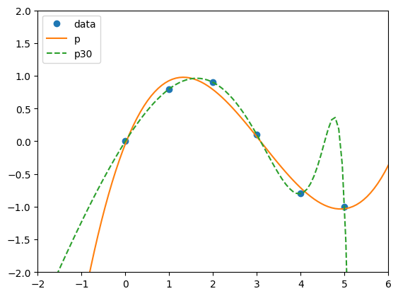

Note: you may need to restart the kernel to use updated packages.['False_',
'ScalarType',
'True_',
'_CopyMode',
'_NoValue',
'__NUMPY_SETUP__',
'__all__',
'__array_api_version__',
'__array_namespace_info__',
'__builtins__',
'__cached__',
'__config__',
'__dir__',
'__doc__',
'__expired_attributes__',
'__file__',
'__former_attrs__',
'__future_scalars__',
'__getattr__',
'__loader__',
'__name__',
'__numpy_submodules__',
'__package__',
'__path__',
'__spec__',
'__version__',
'_array_api_info',
'_core',
'_distributor_init',
'_expired_attrs_2_0',
'_globals',
'_int_extended_msg',
'_mat',
'_msg',
'_pyinstaller_hooks_dir',
'_pytesttester',
'_specific_msg',
'_type_info',
'_typing',
'_utils',
'abs',
'absolute',
'acos',
'acosh',
'add',
'all',
'allclose',
'amax',
'amin',
'angle',
'any',
'append',
'apply_along_axis',
'apply_over_axes',
'arange',
'arccos',
'arccosh',
'arcsin',
'arcsinh',
'arctan',
'arctan2',
'arctanh',
'argmax',
'argmin',
'argpartition',
'argsort',
'argwhere',
'around',
'array',
'array2string',
'array_equal',
'array_equiv',
'array_repr',
'array_split',
'array_str',
'asanyarray',
'asarray',
'asarray_chkfinite',
'ascontiguousarray',
'asfortranarray',
'asin',
'asinh',
'asmatrix',
'astype',
'atan',
'atan2',
'atanh',
'atleast_1d',
'atleast_2d',
'atleast_3d',
'average',
'bartlett',
'base_repr',
'binary_repr',
'bincount',
'bitwise_and',
'bitwise_count',
'bitwise_invert',
'bitwise_left_shift',
'bitwise_not',
'bitwise_or',
'bitwise_right_shift',
'bitwise_xor',
'blackman',
'block',
'bmat',
'bool',
'bool_',
'broadcast',
'broadcast_arrays',
'broadcast_shapes',
'broadcast_to',
'busday_count',
'busday_offset',
'busdaycalendar',
'byte',
'bytes_',
'c_',
'can_cast',
'cbrt',
'cdouble',
'ceil',
'char',
'character',
'choose',
'clip',
'clongdouble',
'column_stack',
'common_type',
'complex128',
'complex64',
'complexfloating',
'compress',
'concat',
'concatenate',
'conj',
'conjugate',
'convolve',
'copy',
'copysign',
'copyto',
'core',
'corrcoef',
'correlate',
'cos',
'cosh',
'count_nonzero',
'cov',
'cross',
'csingle',
'ctypeslib',
'cumprod',
'cumsum',
'cumulative_prod',
'cumulative_sum',
'datetime64',
'datetime_as_string',
'datetime_data',
'deg2rad',
'degrees',
'delete',
'diag',
'diag_indices',
'diag_indices_from',
'diagflat',
'diagonal',
'diff',
'digitize',
'divide',
'divmod',
'dot',
'double',
'dsplit',
'dstack',
'dtype',
'dtypes',
'e',
'ediff1d',
'einsum',
'einsum_path',
'emath',
'empty',
'empty_like',
'equal',
'errstate',
'euler_gamma',
'exceptions',
'exp',
'exp2',
'expand_dims',
'expm1',
'extract',
'eye',
'f2py',
'fabs',
'fft',
'fill_diagonal',
'finfo',
'fix',
'flatiter',
'flatnonzero',
'flexible',
'flip',
'fliplr',
'flipud',
'float16',
'float32',
'float64',
'float_power',
'floating',
'floor',
'floor_divide',
'fmax',
'fmin',
'fmod',
'format_float_positional',
'format_float_scientific',
'frexp',
'from_dlpack',
'frombuffer',
'fromfile',
'fromfunction',
'fromiter',
'frompyfunc',
'fromregex',
'fromstring',
'full',
'full_like',
'gcd',
'generic',
'genfromtxt',
'geomspace',
'get_include',
'get_printoptions',
'getbufsize',
'geterr',
'geterrcall',
'gradient',
'greater',
'greater_equal',
'half',
'hamming',
'hanning',
'heaviside',
'histogram',
'histogram2d',
'histogram_bin_edges',
'histogramdd',
'hsplit',
'hstack',
'hypot',
'i0',
'identity',
'iinfo',
'imag',
'index_exp',
'indices',
'inexact',
'inf',
'info',
'inner',
'insert',
'int16',
'int32',
'int64',
'int8',
'int_',
'intc',
'integer',
'interp',
'intersect1d',
'intp',
'invert',
'is_busday',
'isclose',
'iscomplex',
'iscomplexobj',
'isdtype',
'isfinite',
'isfortran',
'isin',
'isinf',
'isnan',
'isnat',
'isneginf',
'isposinf',
'isreal',
'isrealobj',
'isscalar',
'issubdtype',
'iterable',
'ix_',
'kaiser',
'kron',
'lcm',
'ldexp',
'left_shift',
'less',
'less_equal',
'lexsort',
'lib',
'linalg',
'linspace',
'little_endian',
'load',
'loadtxt',
'log',
'log10',
'log1p',
'log2',
'logaddexp',
'logaddexp2',
'logical_and',
'logical_not',
'logical_or',
'logical_xor',
'logspace',
'long',
'longdouble',
'longlong',
'ma',
'mask_indices',
'matmul',
'matrix',
'matrix_transpose',
'matvec',
'max',
'maximum',
'may_share_memory',
'mean',
'median',
'memmap',
'meshgrid',
'mgrid',
'min',
'min_scalar_type',
'minimum',
'mintypecode',
'mod',
'modf',
'moveaxis',
'multiply',
'nan',
'nan_to_num',
'nanargmax',
'nanargmin',
'nancumprod',
'nancumsum',
'nanmax',
'nanmean',
'nanmedian',
'nanmin',
'nanpercentile',
'nanprod',
'nanquantile',
'nanstd',
'nansum',
'nanvar',
'ndarray',
'ndenumerate',
'ndim',
'ndindex',
'nditer',
'negative',
'nested_iters',
'newaxis',
'nextafter',
'nonzero',
'not_equal',
'number',
'object_',
'ogrid',
'ones',
'ones_like',
'outer',
'packbits',
'pad',
'partition',
'percentile',
'permute_dims',
'pi',
'piecewise',
'place',
'poly',
'poly1d',
'polyadd',
'polyder',
'polydiv',
'polyfit',
'polyint',
'polymul',
'polynomial',
'polysub',
'polyval',
'positive',
'pow',
'power',
'printoptions',
'prod',
'promote_types',
'ptp',
'put',
'put_along_axis',
'putmask',
'quantile',
'r_',
'rad2deg',
'radians',
'random',
'ravel',
'ravel_multi_index',
'real',
'real_if_close',
'rec',
'recarray',
'reciprocal',
'record',
'remainder',
'repeat',
'require',
'reshape',
'resize',
'result_type',
'right_shift',
'rint',
'roll',
'rollaxis',
'roots',
'rot90',
'round',
'row_stack',
's_',
'save',
'savetxt',
'savez',
'savez_compressed',
'sctypeDict',
'searchsorted',
'select',
'set_printoptions',
'setbufsize',
'setdiff1d',
'seterr',
'seterrcall',
'setxor1d',
'shape',
'shares_memory',
'short',
'show_config',
'show_runtime',
'sign',
'signbit',
'signedinteger',
'sin',
'sinc',
'single',
'sinh',
'size',
'sort',
'sort_complex',
'spacing',
'split',
'sqrt',
'square',
'squeeze',
'stack',
'std',
'str_',
'strings',
'subtract',
'sum',
'swapaxes',
'take',
'take_along_axis',
'tan',
'tanh',
'tensordot',
'test',
'testing',
'tile',
'timedelta64',
'trace',
'transpose',
'trapezoid',
'tri',
'tril',
'tril_indices',
'tril_indices_from',
'trim_zeros',
'triu',
'triu_indices',
'triu_indices_from',
'true_divide',
'trunc',
'typecodes',
'typename',
'typing',
'ubyte',
'ufunc',
'uint',
'uint16',
'uint32',
'uint64',
'uint8',
'uintc',
'uintp',
'ulong',
'ulonglong',
'union1d',
'unique',
'unique_all',
'unique_counts',
'unique_inverse',
'unique_values',
'unpackbits',
'unravel_index',
'unsignedinteger',
'unstack',
'unwrap',
'ushort',
'vander',
'var',
'vdot',
'vecdot',
'vecmat',
'vectorize',
'void',
'vsplit',
'vstack',
'where',
'zeros',
'zeros_like']Help on built-in function array in module numpy:
array(
object,
dtype=None,
*,
copy=True,
order='K',
subok=False,
ndmin=0,
ndmax=0,
like=None
)
array(object, dtype=None, *, copy=True, order='K', subok=False, ndmin=0,
ndmax=0, like=None)
Create an array.
Parameters
----------
object : array_like
An array, any object exposing the array interface, an object whose
``__array__`` method returns an array, or any (nested) sequence.
If object is a scalar, a 0-dimensional array containing object is
returned.
dtype : data-type, optional
The desired data-type for the array. If not given, NumPy will try to use
a default ``dtype`` that can represent the values (by applying promotion
rules when necessary.)
copy : bool, optional
If ``True`` (default), then the array data is copied. If ``None``,
a copy will only be made if ``__array__`` returns a copy, if obj is
a nested sequence, or if a copy is needed to satisfy any of the other
requirements (``dtype``, ``order``, etc.). Note that any copy of
the data is shallow, i.e., for arrays with object dtype, the new
array will point to the same objects. See Examples for `ndarray.copy`.
For ``False`` it raises a ``ValueError`` if a copy cannot be avoided.
Default: ``True``.
order : {'K', 'A', 'C', 'F'}, optional
Specify the memory layout of the array. If object is not an array, the
newly created array will be in C order (row major) unless 'F' is
specified, in which case it will be in Fortran order (column major).
If object is an array the following holds.
===== ========= ===================================================
order no copy copy=True
===== ========= ===================================================
'K' unchanged F & C order preserved, otherwise most similar order
'A' unchanged F order if input is F and not C, otherwise C order
'C' C order C order
'F' F order F order
===== ========= ===================================================
When ``copy=None`` and a copy is made for other reasons, the result is
the same as if ``copy=True``, with some exceptions for 'A', see the
Notes section. The default order is 'K'.
subok : bool, optional
If True, then sub-classes will be passed-through, otherwise
the returned array will be forced to be a base-class array (default).
ndmin : int, optional
Specifies the minimum number of dimensions that the resulting
array should have. Ones will be prepended to the shape as
needed to meet this requirement.
ndmax : int, optional
Specifies the maximum number of dimensions to create when inferring
shape from nested sequences. By default (ndmax=0), NumPy recurses
through all nesting levels (up to the compile-time constant
``NPY_MAXDIMS``).
Setting ``ndmax`` stops recursion at the specified depth, preserving
deeper nested structures as objects instead of promoting them to
higher-dimensional arrays. In this case, ``dtype=object`` is required.
.. versionadded:: 2.4.0
like : array_like, optional
Reference object to allow the creation of arrays which are not
NumPy arrays. If an array-like passed in as ``like`` supports
the ``__array_function__`` protocol, the result will be defined
by it. In this case, it ensures the creation of an array object
compatible with that passed in via this argument.
.. versionadded:: 1.20.0
Returns
-------
out : ndarray
An array object satisfying the specified requirements.
See Also
--------
empty_like : Return an empty array with shape and type of input.
ones_like : Return an array of ones with shape and type of input.
zeros_like : Return an array of zeros with shape and type of input.
full_like : Return a new array with shape of input filled with value.
empty : Return a new uninitialized array.
ones : Return a new array setting values to one.
zeros : Return a new array setting values to zero.
full : Return a new array of given shape filled with value.
copy : Return an array copy of the given object.
Notes
-----
When order is 'A' and ``object`` is an array in neither 'C' nor 'F' order,
and a copy is forced by a change in dtype, then the order of the result is
not necessarily 'C' as expected. This is likely a bug.
Examples
--------
>>> import numpy as np
>>> np.array([1, 2, 3])
array([1, 2, 3])
Upcasting:
>>> np.array([1, 2, 3.0])
array([ 1., 2., 3.])
More than one dimension:
>>> np.array([[1, 2], [3, 4]])
array([[1, 2],
[3, 4]])
Minimum dimensions 2:
>>> np.array([1, 2, 3], ndmin=2)
array([[1, 2, 3]])
Type provided:
>>> np.array([1, 2, 3], dtype=complex)
array([ 1.+0.j, 2.+0.j, 3.+0.j])
Data-type consisting of more than one element:
>>> x = np.array([(1,2),(3,4)],dtype=[('a','<i4'),('b','<i4')])
>>> x['a']
array([1, 3], dtype=int32)
Creating an array from sub-classes:
>>> np.array(np.asmatrix('1 2; 3 4'))
array([[1, 2],
[3, 4]])
>>> np.array(np.asmatrix('1 2; 3 4'), subok=True)
matrix([[1, 2],
[3, 4]])
Limiting the maximum dimensions with ``ndmax``:
>>> a = np.array([[1, 2], [3, 4]], dtype=object, ndmax=2)
>>> a
array([[1, 2],
[3, 4]], dtype=object)
>>> a.shape
(2, 2)
>>> b = np.array([[1, 2], [3, 4]], dtype=object, ndmax=1)
>>> b
array([list([1, 2]), list([3, 4])], dtype=object)
>>> b.shape
(2,)
[1, 2, 3, 4, 5]
[1. 2. 3. 4. 5.](1, 2, 3, 4, 5)
[1. 2. 3. 4. 5.]NumPy provides a number of built-in functions for creating arrays with specific properties. These functions include:
Help on built-in function arange in module numpy:
arange(
start_or_stop,
/,
stop=None,
step=1,
*,
dtype=None,
device=None,
like=None
)
arange([start,] stop[, step,], dtype=None, *, device=None, like=None)
Return evenly spaced values within a given interval.
``arange`` can be called with a varying number of positional arguments:
* ``arange(stop)``: Values are generated within the half-open interval
``[0, stop)`` (in other words, the interval including `start` but
excluding `stop`).
* ``arange(start, stop)``: Values are generated within the half-open
interval ``[start, stop)``.
* ``arange(start, stop, step)`` Values are generated within the half-open
interval ``[start, stop)``, with spacing between values given by
``step``.
For integer arguments the function is roughly equivalent to the Python
built-in :py:class:`range`, but returns an ndarray rather than a ``range``
instance.
When using a non-integer step, such as 0.1, it is often better to use
`numpy.linspace`.
See the Warning sections below for more information.
Parameters
----------
start : integer or real, optional
Start of interval. The interval includes this value. The default
start value is 0.
stop : integer or real
End of interval. The interval does not include this value, except
in some cases where `step` is not an integer and floating point
round-off affects the length of `out`.
step : integer or real, optional
Spacing between values. For any output `out`, this is the distance
between two adjacent values, ``out[i+1] - out[i]``. The default
step size is 1. If `step` is specified as a position argument,
`start` must also be given.
dtype : dtype, optional
The type of the output array. If `dtype` is not given, infer the data
type from the other input arguments.
device : str, optional
The device on which to place the created array. Default: ``None``.
For Array-API interoperability only, so must be ``"cpu"`` if passed.
.. versionadded:: 2.0.0
like : array_like, optional
Reference object to allow the creation of arrays which are not
NumPy arrays. If an array-like passed in as ``like`` supports
the ``__array_function__`` protocol, the result will be defined
by it. In this case, it ensures the creation of an array object
compatible with that passed in via this argument.
.. versionadded:: 1.20.0
Returns
-------
arange : ndarray
Array of evenly spaced values.
For floating point arguments, the length of the result is
``ceil((stop - start)/step)``. Because of floating point overflow,
this rule may result in the last element of `out` being greater
than `stop`.
Warnings
--------
The length of the output might not be numerically stable.
Another stability issue is due to the internal implementation of
`numpy.arange`.
The actual step value used to populate the array is
``dtype(start + step) - dtype(start)`` and not `step`. Precision loss
can occur here, due to casting or due to using floating points when
`start` is much larger than `step`. This can lead to unexpected
behaviour. For example::
>>> np.arange(0, 5, 0.5, dtype=int)
array([0, 0, 0, 0, 0, 0, 0, 0, 0, 0])
>>> np.arange(-3, 3, 0.5, dtype=int)
array([-3, -2, -1, 0, 1, 2, 3, 4, 5, 6, 7, 8])
In such cases, the use of `numpy.linspace` should be preferred.
The built-in :py:class:`range` generates :std:doc:`Python built-in integers
that have arbitrary size <python:c-api/long>`, while `numpy.arange`
produces `numpy.int32` or `numpy.int64` numbers. This may result in
incorrect results for large integer values::
>>> power = 40
>>> modulo = 10000
>>> x1 = [(n ** power) % modulo for n in range(8)]
>>> x2 = [(n ** power) % modulo for n in np.arange(8)]
>>> print(x1)
[0, 1, 7776, 8801, 6176, 625, 6576, 4001] # correct
>>> print(x2)
[0, 1, 7776, 7185, 0, 5969, 4816, 3361] # incorrect
See Also
--------
numpy.linspace : Evenly spaced numbers with careful handling of endpoints.
numpy.ogrid: Arrays of evenly spaced numbers in N-dimensions.
numpy.mgrid: Grid-shaped arrays of evenly spaced numbers in N-dimensions.
:ref:`how-to-partition`
Examples
--------
>>> import numpy as np
>>> np.arange(3)
array([0, 1, 2])
>>> np.arange(3.0)
array([ 0., 1., 2.])
>>> np.arange(3,7)
array([3, 4, 5, 6])
>>> np.arange(3,7,2)
array([3, 5])
[1. 2. 3. 4. 5.]Help on _ArrayFunctionDispatcher in module numpy:
linspace(
start,
stop,
num=50,
endpoint=True,
retstep=False,
dtype=None,
axis=0,
*,
device=None
)
Return evenly spaced numbers over a specified interval.
Returns `num` evenly spaced samples, calculated over the
interval [`start`, `stop`].
The endpoint of the interval can optionally be excluded.
.. versionchanged:: 1.20.0
Values are rounded towards ``-inf`` instead of ``0`` when an
integer ``dtype`` is specified. The old behavior can
still be obtained with ``np.linspace(start, stop, num).astype(int)``
Parameters
----------
start : array_like
The starting value of the sequence.
stop : array_like
The end value of the sequence, unless `endpoint` is set to False.
In that case, the sequence consists of all but the last of ``num + 1``
evenly spaced samples, so that `stop` is excluded. Note that the step
size changes when `endpoint` is False.
num : int, optional
Number of samples to generate. Default is 50. Must be non-negative.
endpoint : bool, optional
If True, `stop` is the last sample. Otherwise, it is not included.
Default is True.
retstep : bool, optional
If True, return (`samples`, `step`), where `step` is the spacing
between samples.
dtype : dtype, optional
The type of the output array. If `dtype` is not given, the data type
is inferred from `start` and `stop`. The inferred dtype will never be
an integer; `float` is chosen even if the arguments would produce an
array of integers.
axis : int, optional
The axis in the result to store the samples. Relevant only if start
or stop are array-like. By default (0), the samples will be along a
new axis inserted at the beginning. Use -1 to get an axis at the end.
device : str, optional
The device on which to place the created array. Default: None.
For Array-API interoperability only, so must be ``"cpu"`` if passed.
.. versionadded:: 2.0.0
Returns
-------
samples : ndarray
There are `num` equally spaced samples in the closed interval
``[start, stop]`` or the half-open interval ``[start, stop)``
(depending on whether `endpoint` is True or False).
step : float, optional
Only returned if `retstep` is True
Size of spacing between samples.
See Also
--------
arange : Similar to `linspace`, but uses a step size (instead of the
number of samples).
geomspace : Similar to `linspace`, but with numbers spaced evenly on a log
scale (a geometric progression).
logspace : Similar to `geomspace`, but with the end points specified as
logarithms.
:ref:`how-to-partition`
Examples
--------
>>> import numpy as np
>>> np.linspace(2.0, 3.0, num=5)
array([2. , 2.25, 2.5 , 2.75, 3. ])
>>> np.linspace(2.0, 3.0, num=5, endpoint=False)
array([2. , 2.2, 2.4, 2.6, 2.8])
>>> np.linspace(2.0, 3.0, num=5, retstep=True)
(array([2. , 2.25, 2.5 , 2.75, 3. ]), 0.25)
Graphical illustration:
>>> import matplotlib.pyplot as plt
>>> N = 8
>>> y = np.zeros(N)
>>> x1 = np.linspace(0, 10, N, endpoint=True)
>>> x2 = np.linspace(0, 10, N, endpoint=False)
>>> plt.plot(x1, y, 'o')
[<matplotlib.lines.Line2D object at 0x...>]
>>> plt.plot(x2, y + 0.5, 'o')
[<matplotlib.lines.Line2D object at 0x...>]
>>> plt.ylim([-0.5, 1])
(-0.5, 1)
>>> plt.show()
Help on built-in function zeros in module numpy:
zeros(shape, dtype=None, order='C', *, device=None, like=None)
zeros(shape, dtype=None, order='C', *, device=None, like=None)
Return a new array of given shape and type, filled with zeros.
Parameters
----------
shape : int or tuple of ints
Shape of the new array, e.g., ``(2, 3)`` or ``2``.
dtype : data-type, optional
The desired data-type for the array, e.g., `numpy.int8`. Default is
`numpy.float64`.
order : {'C', 'F'}, optional, default: 'C'
Whether to store multi-dimensional data in row-major
(C-style) or column-major (Fortran-style) order in memory.
device : str, optional
The device on which to place the created array. Default: ``None``.
For Array-API interoperability only, so must be ``"cpu"`` if passed.
.. versionadded:: 2.0.0
like : array_like, optional
Reference object to allow the creation of arrays which are not
NumPy arrays. If an array-like passed in as ``like`` supports
the ``__array_function__`` protocol, the result will be defined
by it. In this case, it ensures the creation of an array object
compatible with that passed in via this argument.
.. versionadded:: 1.20.0
Returns
-------
out : ndarray
Array of zeros with the given shape, dtype, and order.
See Also
--------
zeros_like : Return an array of zeros with shape and type of input.
empty : Return a new uninitialized array.
ones : Return a new array setting values to one.
full : Return a new array of given shape filled with value.
Examples
--------
>>> import numpy as np
>>> np.zeros(5)
array([ 0., 0., 0., 0., 0.])
>>> np.zeros((5,), dtype=int)
array([0, 0, 0, 0, 0])
>>> np.zeros((2, 1))
array([[ 0.],
[ 0.]])
>>> s = (2,2)
>>> np.zeros(s)
array([[ 0., 0.],
[ 0., 0.]])
>>> np.zeros((2,), dtype=[('x', 'i4'), ('y', 'i4')]) # custom dtype
array([(0, 0), (0, 0)],
dtype=[('x', '<i4'), ('y', '<i4')])
Help on _ArrayFunctionDispatcher in module numpy:
zeros_like(a, dtype=None, order='K', subok=True, shape=None, *, device=None)
Return an array of zeros with the same shape and type as a given array.
Parameters
----------
a : array_like
The shape and data-type of `a` define these same attributes of
the returned array.
dtype : data-type, optional
Overrides the data type of the result.
order : {'C', 'F', 'A', or 'K'}, optional
Overrides the memory layout of the result. 'C' means C-order,
'F' means F-order, 'A' means 'F' if `a` is Fortran contiguous,
'C' otherwise. 'K' means match the layout of `a` as closely
as possible.
subok : bool, optional.
If True, then the newly created array will use the sub-class
type of `a`, otherwise it will be a base-class array. Defaults
to True.
shape : int or sequence of ints, optional.
Overrides the shape of the result. If order='K' and the number of
dimensions is unchanged, will try to keep order, otherwise,
order='C' is implied.
device : str, optional
The device on which to place the created array. Default: None.
For Array-API interoperability only, so must be ``"cpu"`` if passed.
.. versionadded:: 2.0.0
Returns
-------
out : ndarray
Array of zeros with the same shape and type as `a`.
See Also
--------
empty_like : Return an empty array with shape and type of input.
ones_like : Return an array of ones with shape and type of input.
full_like : Return a new array with shape of input filled with value.
zeros : Return a new array setting values to zero.
Examples
--------
>>> import numpy as np
>>> x = np.arange(6)
>>> x = x.reshape((2, 3))
>>> x
array([[0, 1, 2],
[3, 4, 5]])
>>> np.zeros_like(x)
array([[0, 0, 0],
[0, 0, 0]])
>>> y = np.arange(3, dtype=float)
>>> y
array([0., 1., 2.])
>>> np.zeros_like(y)
array([0., 0., 0.])
Help on function ones in module numpy:
ones(shape, dtype=None, order='C', *, device=None, like=None)
Return a new array of given shape and type, filled with ones.
Parameters
----------
shape : int or sequence of ints
Shape of the new array, e.g., ``(2, 3)`` or ``2``.
dtype : data-type, optional
The desired data-type for the array, e.g., `numpy.int8`. Default is
`numpy.float64`.
order : {'C', 'F'}, optional, default: C
Whether to store multi-dimensional data in row-major
(C-style) or column-major (Fortran-style) order in
memory.
device : str, optional
The device on which to place the created array. Default: None.
For Array-API interoperability only, so must be ``"cpu"`` if passed.
.. versionadded:: 2.0.0
like : array_like, optional
Reference object to allow the creation of arrays which are not
NumPy arrays. If an array-like passed in as ``like`` supports
the ``__array_function__`` protocol, the result will be defined
by it. In this case, it ensures the creation of an array object
compatible with that passed in via this argument.
.. versionadded:: 1.20.0
Returns
-------
out : ndarray
Array of ones with the given shape, dtype, and order.
See Also
--------
ones_like : Return an array of ones with shape and type of input.
empty : Return a new uninitialized array.
zeros : Return a new array setting values to zero.
full : Return a new array of given shape filled with value.
Examples
--------
>>> import numpy as np
>>> np.ones(5)
array([1., 1., 1., 1., 1.])
>>> np.ones((5,), dtype=int)
array([1, 1, 1, 1, 1])
>>> np.ones((2, 1))
array([[1.],
[1.]])
>>> s = (2,2)
>>> np.ones(s)
array([[1., 1.],
[1., 1.]])
Help on function full in module numpy:
full(shape, fill_value, dtype=None, order='C', *, device=None, like=None)
Return a new array of given shape and type, filled with `fill_value`.
Parameters
----------
shape : int or sequence of ints
Shape of the new array, e.g., ``(2, 3)`` or ``2``.
fill_value : scalar or array_like
Fill value.
dtype : data-type, optional
The desired data-type for the array The default, None, means
``np.array(fill_value).dtype``.
order : {'C', 'F'}, optional
Whether to store multidimensional data in C- or Fortran-contiguous
(row- or column-wise) order in memory.
device : str, optional
The device on which to place the created array. Default: None.
For Array-API interoperability only, so must be ``"cpu"`` if passed.
.. versionadded:: 2.0.0
like : array_like, optional
Reference object to allow the creation of arrays which are not
NumPy arrays. If an array-like passed in as ``like`` supports
the ``__array_function__`` protocol, the result will be defined
by it. In this case, it ensures the creation of an array object
compatible with that passed in via this argument.
.. versionadded:: 1.20.0
Returns
-------
out : ndarray
Array of `fill_value` with the given shape, dtype, and order.
See Also
--------
full_like : Return a new array with shape of input filled with value.
empty : Return a new uninitialized array.
ones : Return a new array setting values to one.
zeros : Return a new array setting values to zero.
Examples
--------
>>> import numpy as np
>>> np.full((2, 2), np.inf)
array([[inf, inf],
[inf, inf]])
>>> np.full((2, 2), 10)
array([[10, 10],
[10, 10]])
>>> np.full((2, 2), [1, 2])
array([[1, 2],
[1, 2]])
[[2. 2. 2.]
[2. 2. 2.]
[2. 2. 2.]
[2. 2. 2.]]Help on function eye in module numpy:
eye(N, M=None, k=0, dtype=<class 'float'>, order='C', *, device=None, like=None)
Return a 2-D array with ones on the diagonal and zeros elsewhere.
Parameters
----------
N : int
Number of rows in the output.
M : int, optional
Number of columns in the output. If None, defaults to `N`.
k : int, optional
Index of the diagonal: 0 (the default) refers to the main diagonal,
a positive value refers to an upper diagonal, and a negative value
to a lower diagonal.
dtype : data-type, optional
Data-type of the returned array.
order : {'C', 'F'}, optional
Whether the output should be stored in row-major (C-style) or
column-major (Fortran-style) order in memory.
device : str, optional
The device on which to place the created array. Default: None.
For Array-API interoperability only, so must be ``"cpu"`` if passed.
.. versionadded:: 2.0.0
like : array_like, optional
Reference object to allow the creation of arrays which are not
NumPy arrays. If an array-like passed in as ``like`` supports
the ``__array_function__`` protocol, the result will be defined
by it. In this case, it ensures the creation of an array object
compatible with that passed in via this argument.
.. versionadded:: 1.20.0
Returns
-------
I : ndarray of shape (N,M)
An array where all elements are equal to zero, except for the `k`-th
diagonal, whose values are equal to one.
See Also
--------
identity : (almost) equivalent function
diag : diagonal 2-D array from a 1-D array specified by the user.
Examples
--------
>>> import numpy as np
>>> np.eye(2, dtype=int)
array([[1, 0],
[0, 1]])
>>> np.eye(3, k=1)
array([[0., 1., 0.],
[0., 0., 1.],
[0., 0., 0.]])
Help on _ArrayFunctionDispatcher in module numpy:
diag(v, k=0)
Extract a diagonal or construct a diagonal array.
See the more detailed documentation for ``numpy.diagonal`` if you use this
function to extract a diagonal and wish to write to the resulting array;
whether it returns a copy or a view depends on what version of numpy you
are using.
Parameters
----------
v : array_like
If `v` is a 2-D array, return a copy of its `k`-th diagonal.
If `v` is a 1-D array, return a 2-D array with `v` on the `k`-th
diagonal.
k : int, optional
Diagonal in question. The default is 0. Use `k>0` for diagonals
above the main diagonal, and `k<0` for diagonals below the main
diagonal.
Returns
-------
out : ndarray
The extracted diagonal or constructed diagonal array.
See Also
--------
diagonal : Return specified diagonals.
diagflat : Create a 2-D array with the flattened input as a diagonal.
trace : Sum along diagonals.
triu : Upper triangle of an array.
tril : Lower triangle of an array.
Examples
--------
>>> import numpy as np
>>> x = np.arange(9).reshape((3,3))
>>> x
array([[0, 1, 2],
[3, 4, 5],
[6, 7, 8]])
>>> np.diag(x)
array([0, 4, 8])
>>> np.diag(x, k=1)
array([1, 5])
>>> np.diag(x, k=-1)
array([3, 7])
>>> np.diag(np.diag(x))
array([[0, 0, 0],
[0, 4, 0],
[0, 0, 8]])
[[ 2 -1 0 0 0 0 0 0 0]
[-1 2 -1 0 0 0 0 0 0]
[ 0 -1 2 -1 0 0 0 0 0]
[ 0 0 -1 2 -1 0 0 0 0]
[ 0 0 0 -1 2 -1 0 0 0]
[ 0 0 0 0 -1 2 -1 0 0]
[ 0 0 0 0 0 -1 2 -1 0]
[ 0 0 0 0 0 0 -1 2 -1]
[ 0 0 0 0 0 0 0 -1 2]]Help on _ArrayFunctionDispatcher in module numpy:
repeat(a, repeats, axis=None)
Repeat each element of an array after themselves
Parameters
----------
a : array_like
Input array.
repeats : int or array of ints
The number of repetitions for each element. `repeats` is broadcasted
to fit the shape of the given axis.
axis : int, optional
The axis along which to repeat values. By default, use the
flattened input array, and return a flat output array.
Returns
-------
repeated_array : ndarray
Output array which has the same shape as `a`, except along
the given axis.
See Also
--------
tile : Tile an array.
unique : Find the unique elements of an array.
Examples
--------
>>> import numpy as np
>>> np.repeat(3, 4)
array([3, 3, 3, 3])
>>> x = np.array([[1,2],[3,4]])
>>> np.repeat(x, 2)
array([1, 1, 2, 2, 3, 3, 4, 4])
>>> np.repeat(x, 3, axis=1)
array([[1, 1, 1, 2, 2, 2],
[3, 3, 3, 4, 4, 4]])
>>> np.repeat(x, [1, 2], axis=0)
array([[1, 2],
[3, 4],
[3, 4]])
Help on _ArrayFunctionDispatcher in module numpy:
tile(A, reps)
Construct an array by repeating A the number of times given by reps.
If `reps` has length ``d``, the result will have dimension of
``max(d, A.ndim)``.
If ``A.ndim < d``, `A` is promoted to be d-dimensional by prepending new
axes. So a shape (3,) array is promoted to (1, 3) for 2-D replication,
or shape (1, 1, 3) for 3-D replication. If this is not the desired
behavior, promote `A` to d-dimensions manually before calling this
function.
If ``A.ndim > d``, `reps` is promoted to `A`.ndim by prepending 1's to it.
Thus for an `A` of shape (2, 3, 4, 5), a `reps` of (2, 2) is treated as
(1, 1, 2, 2).
Note : Although tile may be used for broadcasting, it is strongly
recommended to use numpy's broadcasting operations and functions.
Parameters
----------
A : array_like
The input array.
reps : array_like
The number of repetitions of `A` along each axis.
Returns
-------
c : ndarray
The tiled output array.
See Also
--------
repeat : Repeat elements of an array.
broadcast_to : Broadcast an array to a new shape
Examples
--------
>>> import numpy as np
>>> a = np.array([0, 1, 2])
>>> np.tile(a, 2)
array([0, 1, 2, 0, 1, 2])
>>> np.tile(a, (2, 2))
array([[0, 1, 2, 0, 1, 2],
[0, 1, 2, 0, 1, 2]])
>>> np.tile(a, (2, 1, 2))
array([[[0, 1, 2, 0, 1, 2]],
[[0, 1, 2, 0, 1, 2]]])
>>> b = np.array([[1, 2], [3, 4]])
>>> np.tile(b, 2)
array([[1, 2, 1, 2],
[3, 4, 3, 4]])
>>> np.tile(b, (2, 1))
array([[1, 2],
[3, 4],
[1, 2],
[3, 4]])
>>> c = np.array([1,2,3,4])
>>> np.tile(c,(4,1))
array([[1, 2, 3, 4],
[1, 2, 3, 4],
[1, 2, 3, 4],
[1, 2, 3, 4]])
Help on _ArrayFunctionDispatcher in module numpy:
concatenate(arrays, /, axis=0, out=None, *, dtype=None, casting='same_kind')
Join a sequence of arrays along an existing axis.
Parameters
----------
a1, a2, ... : sequence of array_like
The arrays must have the same shape, except in the dimension
corresponding to `axis` (the first, by default).
axis : int, optional
The axis along which the arrays will be joined. If axis is None,
arrays are flattened before use. Default is 0.
out : ndarray, optional
If provided, the destination to place the result. The shape must be
correct, matching that of what concatenate would have returned if no
out argument were specified.
dtype : str or dtype
If provided, the destination array will have this dtype. Cannot be
provided together with `out`.
.. versionadded:: 1.20.0
casting : {'no', 'equiv', 'safe', 'same_kind', 'unsafe'}, optional
Controls what kind of data casting may occur. Defaults to 'same_kind'.
For a description of the options, please see :term:`casting`.
.. versionadded:: 1.20.0
Returns
-------
res : ndarray
The concatenated array.
See Also
--------
ma.concatenate : Concatenate function that preserves input masks.
array_split : Split an array into multiple sub-arrays of equal or
near-equal size.
split : Split array into a list of multiple sub-arrays of equal size.
hsplit : Split array into multiple sub-arrays horizontally (column wise).
vsplit : Split array into multiple sub-arrays vertically (row wise).
dsplit : Split array into multiple sub-arrays along the 3rd axis (depth).
stack : Stack a sequence of arrays along a new axis.
block : Assemble arrays from blocks.
hstack : Stack arrays in sequence horizontally (column wise).
vstack : Stack arrays in sequence vertically (row wise).
dstack : Stack arrays in sequence depth wise (along third dimension).
column_stack : Stack 1-D arrays as columns into a 2-D array.
Notes
-----
When one or more of the arrays to be concatenated is a MaskedArray,
this function will return a MaskedArray object instead of an ndarray,
but the input masks are *not* preserved. In cases where a MaskedArray
is expected as input, use the ma.concatenate function from the masked
array module instead.
Examples
--------
>>> import numpy as np
>>> a = np.array([[1, 2], [3, 4]])
>>> b = np.array([[5, 6]])
>>> np.concatenate((a, b), axis=0)
array([[1, 2],
[3, 4],
[5, 6]])
>>> np.concatenate((a, b.T), axis=1)
array([[1, 2, 5],
[3, 4, 6]])
>>> np.concatenate((a, b), axis=None)
array([1, 2, 3, 4, 5, 6])
This function will not preserve masking of MaskedArray inputs.
>>> a = np.ma.arange(3)
>>> a[1] = np.ma.masked
>>> b = np.arange(2, 5)
>>> a
masked_array(data=[0, --, 2],
mask=[False, True, False],
fill_value=999999)
>>> b
array([2, 3, 4])
>>> np.concatenate([a, b])
masked_array(data=[0, 1, 2, 2, 3, 4],
mask=False,
fill_value=999999)
>>> np.ma.concatenate([a, b])
masked_array(data=[0, --, 2, 2, 3, 4],
mask=[False, True, False, False, False, False],
fill_value=999999)
[[1 2]
[3 4]]
[[5 6]]
[[1 2]
[3 4]
[5 6]]Help on _ArrayFunctionDispatcher in module numpy:
vstack(tup, *, dtype=None, casting='same_kind')
Stack arrays in sequence vertically (row wise).
This is equivalent to concatenation along the first axis after 1-D arrays
of shape `(N,)` have been reshaped to `(1,N)`. Rebuilds arrays divided by
`vsplit`.
This function makes most sense for arrays with up to 3 dimensions. For
instance, for pixel-data with a height (first axis), width (second axis),
and r/g/b channels (third axis). The functions `concatenate`, `stack` and
`block` provide more general stacking and concatenation operations.
Parameters
----------
tup : sequence of ndarrays
The arrays must have the same shape along all but the first axis.
1-D arrays must have the same length. In the case of a single
array_like input, it will be treated as a sequence of arrays; i.e.,
each element along the zeroth axis is treated as a separate array.
dtype : str or dtype
If provided, the destination array will have this dtype. Cannot be
provided together with `out`.
.. versionadded:: 1.24
casting : {'no', 'equiv', 'safe', 'same_kind', 'unsafe'}, optional
Controls what kind of data casting may occur. Defaults to 'same_kind'.
.. versionadded:: 1.24
Returns
-------
stacked : ndarray
The array formed by stacking the given arrays, will be at least 2-D.
See Also
--------
concatenate : Join a sequence of arrays along an existing axis.
stack : Join a sequence of arrays along a new axis.
block : Assemble an nd-array from nested lists of blocks.
hstack : Stack arrays in sequence horizontally (column wise).
dstack : Stack arrays in sequence depth wise (along third axis).
column_stack : Stack 1-D arrays as columns into a 2-D array.
vsplit : Split an array into multiple sub-arrays vertically (row-wise).
unstack : Split an array into a tuple of sub-arrays along an axis.
Examples
--------
>>> import numpy as np
>>> a = np.array([1, 2, 3])
>>> b = np.array([4, 5, 6])
>>> np.vstack((a,b))
array([[1, 2, 3],
[4, 5, 6]])
>>> a = np.array([[1], [2], [3]])
>>> b = np.array([[4], [5], [6]])
>>> np.vstack((a,b))
array([[1],
[2],
[3],
[4],
[5],
[6]])
Help on _ArrayFunctionDispatcher in module numpy:
hstack(tup, *, dtype=None, casting='same_kind')
Stack arrays in sequence horizontally (column wise).
This is equivalent to concatenation along the second axis, except for 1-D
arrays where it concatenates along the first axis. Rebuilds arrays divided
by `hsplit`.
This function makes most sense for arrays with up to 3 dimensions. For
instance, for pixel-data with a height (first axis), width (second axis),
and r/g/b channels (third axis). The functions `concatenate`, `stack` and
`block` provide more general stacking and concatenation operations.
Parameters
----------
tup : sequence of ndarrays
The arrays must have the same shape along all but the second axis,
except 1-D arrays which can be any length. In the case of a single
array_like input, it will be treated as a sequence of arrays; i.e.,
each element along the zeroth axis is treated as a separate array.
dtype : str or dtype
If provided, the destination array will have this dtype. Cannot be
provided together with `out`.
.. versionadded:: 1.24
casting : {'no', 'equiv', 'safe', 'same_kind', 'unsafe'}, optional
Controls what kind of data casting may occur. Defaults to 'same_kind'.
.. versionadded:: 1.24
Returns
-------
stacked : ndarray
The array formed by stacking the given arrays.
See Also
--------
concatenate : Join a sequence of arrays along an existing axis.
stack : Join a sequence of arrays along a new axis.
block : Assemble an nd-array from nested lists of blocks.
vstack : Stack arrays in sequence vertically (row wise).
dstack : Stack arrays in sequence depth wise (along third axis).
column_stack : Stack 1-D arrays as columns into a 2-D array.
hsplit : Split an array into multiple sub-arrays
horizontally (column-wise).
unstack : Split an array into a tuple of sub-arrays along an axis.
Examples
--------
>>> import numpy as np
>>> a = np.array((1,2,3))
>>> b = np.array((4,5,6))
>>> np.hstack((a,b))
array([1, 2, 3, 4, 5, 6])
>>> a = np.array([[1],[2],[3]])
>>> b = np.array([[4],[5],[6]])
>>> np.hstack((a,b))
array([[1, 4],
[2, 5],
[3, 6]])
Help on _ArrayFunctionDispatcher in module numpy:
reshape(a, /, shape, order='C', *, copy=None)
Gives a new shape to an array without changing its data.
Parameters
----------
a : array_like
Array to be reshaped.
shape : int or tuple of ints
The new shape should be compatible with the original shape. If
an integer, then the result will be a 1-D array of that length.
One shape dimension can be -1. In this case, the value is
inferred from the length of the array and remaining dimensions.
order : {'C', 'F', 'A'}, optional
Read the elements of ``a`` using this index order, and place the
elements into the reshaped array using this index order. 'C'
means to read / write the elements using C-like index order,
with the last axis index changing fastest, back to the first
axis index changing slowest. 'F' means to read / write the
elements using Fortran-like index order, with the first index
changing fastest, and the last index changing slowest. Note that
the 'C' and 'F' options take no account of the memory layout of
the underlying array, and only refer to the order of indexing.
'A' means to read / write the elements in Fortran-like index
order if ``a`` is Fortran *contiguous* in memory, C-like order
otherwise.
copy : bool, optional
If ``True``, then the array data is copied. If ``None``, a copy will
only be made if it's required by ``order``. For ``False`` it raises
a ``ValueError`` if a copy cannot be avoided. Default: ``None``.
Returns
-------
reshaped_array : ndarray
This will be a new view object if possible; otherwise, it will
be a copy. Note there is no guarantee of the *memory layout* (C- or
Fortran- contiguous) of the returned array.
See Also
--------
ndarray.reshape : Equivalent method.
Notes
-----
It is not always possible to change the shape of an array without copying
the data.
The ``order`` keyword gives the index ordering both for *fetching*
the values from ``a``, and then *placing* the values into the output
array. For example, let's say you have an array:
>>> a = np.arange(6).reshape((3, 2))
>>> a
array([[0, 1],
[2, 3],
[4, 5]])
You can think of reshaping as first raveling the array (using the given
index order), then inserting the elements from the raveled array into the
new array using the same kind of index ordering as was used for the
raveling.
>>> np.reshape(a, (2, 3)) # C-like index ordering
array([[0, 1, 2],
[3, 4, 5]])
>>> np.reshape(np.ravel(a), (2, 3)) # equivalent to C ravel then C reshape
array([[0, 1, 2],
[3, 4, 5]])
>>> np.reshape(a, (2, 3), order='F') # Fortran-like index ordering
array([[0, 4, 3],
[2, 1, 5]])
>>> np.reshape(np.ravel(a, order='F'), (2, 3), order='F')
array([[0, 4, 3],
[2, 1, 5]])
Examples
--------
>>> import numpy as np
>>> a = np.array([[1,2,3], [4,5,6]])
>>> np.reshape(a, 6)
array([1, 2, 3, 4, 5, 6])
>>> np.reshape(a, 6, order='F')
array([1, 4, 2, 5, 3, 6])
>>> np.reshape(a, (3,-1)) # the unspecified value is inferred to be 2
array([[1, 2],
[3, 4],
[5, 6]])
[ 1 2 3 4 5 6 7 8 9 10 11 12]
[[ 1 2 3 4]
[ 5 6 7 8]
[ 9 10 11 12]][ 1 2 3 4 5 6 7 8 9 10 11 12]
[[ 1 2 3 4]
[ 5 6 7 8]
[ 9 10 11 12]]Help on _ArrayFunctionDispatcher in module numpy:
ravel(a, order='C')
Return a contiguous flattened array.
A 1-D array, containing the elements of the input, is returned. A copy is
made only if needed.
As of NumPy 1.10, the returned array will have the same type as the input
array. (for example, a masked array will be returned for a masked array
input)
Parameters
----------
a : array_like
Input array. The elements in `a` are read in the order specified by
`order`, and packed as a 1-D array.
order : {'C','F', 'A', 'K'}, optional
The elements of `a` are read using this index order. 'C' means
to index the elements in row-major, C-style order,
with the last axis index changing fastest, back to the first
axis index changing slowest. 'F' means to index the elements
in column-major, Fortran-style order, with the
first index changing fastest, and the last index changing
slowest. Note that the 'C' and 'F' options take no account of
the memory layout of the underlying array, and only refer to
the order of axis indexing. 'A' means to read the elements in
Fortran-like index order if `a` is Fortran *contiguous* in
memory, C-like order otherwise. 'K' means to read the
elements in the order they occur in memory, except for
reversing the data when strides are negative. By default, 'C'
index order is used.
Returns
-------
y : array_like
y is a contiguous 1-D array of the same subtype as `a`,
with shape ``(a.size,)``.
Note that matrices are special cased for backward compatibility,
if `a` is a matrix, then y is a 1-D ndarray.
See Also
--------
ndarray.flat : 1-D iterator over an array.
ndarray.flatten : 1-D array copy of the elements of an array
in row-major order.
ndarray.reshape : Change the shape of an array without changing its data.
Notes
-----
In row-major, C-style order, in two dimensions, the row index
varies the slowest, and the column index the quickest. This can
be generalized to multiple dimensions, where row-major order
implies that the index along the first axis varies slowest, and
the index along the last quickest. The opposite holds for
column-major, Fortran-style index ordering.
When a view is desired in as many cases as possible, ``arr.reshape(-1)``
may be preferable. However, ``ravel`` supports ``K`` in the optional
``order`` argument while ``reshape`` does not.
Examples
--------
It is equivalent to ``reshape(-1, order=order)``.
>>> import numpy as np
>>> x = np.array([[1, 2, 3], [4, 5, 6]])
>>> np.ravel(x)
array([1, 2, 3, 4, 5, 6])
>>> x.reshape(-1)
array([1, 2, 3, 4, 5, 6])
>>> np.ravel(x, order='F')
array([1, 4, 2, 5, 3, 6])
When ``order`` is 'A', it will preserve the array's 'C' or 'F' ordering:
>>> np.ravel(x.T)
array([1, 4, 2, 5, 3, 6])
>>> np.ravel(x.T, order='A')
array([1, 2, 3, 4, 5, 6])
When ``order`` is 'K', it will preserve orderings that are neither 'C'
nor 'F', but won't reverse axes:
>>> a = np.arange(3)[::-1]; a
array([2, 1, 0])
>>> a.ravel(order='C')
array([2, 1, 0])
>>> a.ravel(order='K')
array([2, 1, 0])
>>> a = np.arange(12).reshape(2,3,2).swapaxes(1,2); a
array([[[ 0, 2, 4],
[ 1, 3, 5]],
[[ 6, 8, 10],
[ 7, 9, 11]]])
>>> a.ravel(order='C')
array([ 0, 2, 4, 1, 3, 5, 6, 8, 10, 7, 9, 11])
>>> a.ravel(order='K')
array([ 0, 1, 2, 3, 4, 5, 6, 7, 8, 9, 10, 11])
5
[4 6 4]
[3 4 6]
[5 3 4 6]
[5 4]
[3 6]
[4 6 4 3 5]
[3 6 4]1
[4 5 6]
[3 6]inf - IEEE 754 floating point representation of (positive) infinity.nan - IEEE 754 floating point representation of Not a Number (NaN).e - Euler’s constant (approximately 2.71828).pi - The mathematical constant pi (approximately 3.14159).inf - IEEE 754 floating point representation of (positive) infinity.-inf - IEEE 754 floating point representation of (negative) infinity.euler_gamma - Euler-Mascheroni constant (approximately 0.57721566490153286060651209008235447294849848774858577869). In addition to these constants, NumPy also defines a number of aliases for these constants. For example, inf is an alias for Inf, and nan is an alias for NAN.Help on ufunc in module numpy:
add = <ufunc 'add'>
add(x1, x2, /, out=None, *, where=True, casting='same_kind', order='K', dtype=None, subok=True[, signature])
Add arguments element-wise.
Parameters
----------
x1, x2 : array_like
The arrays to be added.
If ``x1.shape != x2.shape``, they must be broadcastable to a common
shape (which becomes the shape of the output).
out : ndarray, None, or tuple of ndarray and None, optional
A location into which the result is stored. If provided, it must have
a shape that the inputs broadcast to. If not provided or None,
a freshly-allocated array is returned. A tuple (possible only as a
keyword argument) must have length equal to the number of outputs.
where : array_like, optional
This condition is broadcast over the input. At locations where the
condition is True, the `out` array will be set to the ufunc result.
Elsewhere, the `out` array will retain its original value.
Note that if an uninitialized `out` array is created via the default
``out=None``, locations within it where the condition is False will
remain uninitialized.
**kwargs
For other keyword-only arguments, see the
:ref:`ufunc docs <ufuncs.kwargs>`.
Returns
-------
add : ndarray or scalar
The sum of `x1` and `x2`, element-wise.
This is a scalar if both `x1` and `x2` are scalars.
Notes
-----
Equivalent to `x1` + `x2` in terms of array broadcasting.
Examples
--------
>>> import numpy as np
>>> np.add(1.0, 4.0)
5.0
>>> x1 = np.arange(9.0).reshape((3, 3))
>>> x2 = np.arange(3.0)
>>> np.add(x1, x2)
array([[ 0., 2., 4.],
[ 3., 5., 7.],
[ 6., 8., 10.]])
The ``+`` operator can be used as a shorthand for ``np.add`` on ndarrays.
>>> x1 = np.arange(9.0).reshape((3, 3))
>>> x2 = np.arange(3.0)
>>> x1 + x2
array([[ 0., 2., 4.],
[ 3., 5., 7.],
[ 6., 8., 10.]])
| Function | Operand | Description |
|---|---|---|
add |
+ |
Adds two arrays element-wise. |
subtract |
- |
Subtracts two arrays element-wise. |
multiply |
* |
Multiplies two arrays element-wise. |
divide |
/ |
Divides two arrays element-wise. |
power |
** |
Raises each element of an array to a power. |
remainder |
% |
Computes the remainder of dividing two arrays element-wise. |
[1 2 3 4]
4
[5 6 7 8]
[ 4 8 12 16]| Function | Description |
|---|---|
sin |
Computes the sine of each element of an array. |
cos |
Computes the cosine of each element of an array. |
tan |
Computes the tangent of each element of an array. |
arcsin |
Computes the arcsine of each element of an array. |
arccos |
Computes the arccosine of each element of an array. |
arctan |
Computes the arctangent of each element of an array. |
Help on ufunc in module numpy:
sin = <ufunc 'sin'>
sin(x, /, out=None, *, where=True, casting='same_kind', order='K', dtype=None, subok=True[, signature])
Trigonometric sine, element-wise.
Parameters
----------
x : array_like
Angle, in radians (:math:`2 \pi` rad equals 360 degrees).
out : ndarray, None, or tuple of ndarray and None, optional
A location into which the result is stored. If provided, it must have
a shape that the inputs broadcast to. If not provided or None,
a freshly-allocated array is returned. A tuple (possible only as a
keyword argument) must have length equal to the number of outputs.
where : array_like, optional
This condition is broadcast over the input. At locations where the
condition is True, the `out` array will be set to the ufunc result.
Elsewhere, the `out` array will retain its original value.
Note that if an uninitialized `out` array is created via the default
``out=None``, locations within it where the condition is False will
remain uninitialized.
**kwargs
For other keyword-only arguments, see the
:ref:`ufunc docs <ufuncs.kwargs>`.
Returns
-------
y : array_like
The sine of each element of x.
This is a scalar if `x` is a scalar.
See Also
--------
arcsin, sinh, cos
Notes
-----
The sine is one of the fundamental functions of trigonometry (the
mathematical study of triangles). Consider a circle of radius 1
centered on the origin. A ray comes in from the :math:`+x` axis, makes
an angle at the origin (measured counter-clockwise from that axis), and
departs from the origin. The :math:`y` coordinate of the outgoing
ray's intersection with the unit circle is the sine of that angle. It
ranges from -1 for :math:`x=3\pi / 2` to +1 for :math:`\pi / 2.` The
function has zeroes where the angle is a multiple of :math:`\pi`.
Sines of angles between :math:`\pi` and :math:`2\pi` are negative.
The numerous properties of the sine and related functions are included
in any standard trigonometry text.
Examples
--------
>>> import numpy as np
Print sine of one angle:
>>> np.sin(np.pi/2.)
1.0
Print sines of an array of angles given in degrees:
>>> np.sin(np.array((0., 30., 45., 60., 90.)) * np.pi / 180. )
array([ 0. , 0.5 , 0.70710678, 0.8660254 , 1. ])
Plot the sine function:
>>> import matplotlib.pylab as plt
>>> x = np.linspace(-np.pi, np.pi, 201)
>>> plt.plot(x, np.sin(x))
>>> plt.xlabel('Angle [rad]')
>>> plt.ylabel('sin(x)')
>>> plt.axis('tight')
>>> plt.show()
| Function | Description |
|---|---|
exp |
Computes the exponential of each element of an array. |
log |
Computes the natural logarithm of each element of an array. |
log10 |
Computes the base-10 logarithm of each element of an array. |
log2 |
Computes the base-2 logarithm of each element of an array. |
Help on ufunc in module numpy:
log = <ufunc 'log'>
log(x, /, out=None, *, where=True, casting='same_kind', order='K', dtype=None, subok=True[, signature])
Natural logarithm, element-wise.
The natural logarithm `log` is the inverse of the exponential function,
so that `log(exp(x)) = x`. The natural logarithm is logarithm in base
`e`.
Parameters
----------
x : array_like
Input value.
out : ndarray, None, or tuple of ndarray and None, optional
A location into which the result is stored. If provided, it must have
a shape that the inputs broadcast to. If not provided or None,
a freshly-allocated array is returned. A tuple (possible only as a
keyword argument) must have length equal to the number of outputs.
where : array_like, optional
This condition is broadcast over the input. At locations where the
condition is True, the `out` array will be set to the ufunc result.
Elsewhere, the `out` array will retain its original value.
Note that if an uninitialized `out` array is created via the default
``out=None``, locations within it where the condition is False will
remain uninitialized.
**kwargs
For other keyword-only arguments, see the
:ref:`ufunc docs <ufuncs.kwargs>`.
Returns
-------
y : ndarray
The natural logarithm of `x`, element-wise.
This is a scalar if `x` is a scalar.
See Also
--------
log10, log2, log1p, emath.log
Notes
-----
Logarithm is a multivalued function: for each `x` there is an infinite
number of `z` such that `exp(z) = x`. The convention is to return the
`z` whose imaginary part lies in `(-pi, pi]`.
For real-valued input data types, `log` always returns real output. For
each value that cannot be expressed as a real number or infinity, it
yields ``nan`` and sets the `invalid` floating point error flag.
For complex-valued input, `log` is a complex analytical function that
has a branch cut `[-inf, 0]` and is continuous from above on it. `log`
handles the floating-point negative zero as an infinitesimal negative
number, conforming to the C99 standard.
In the cases where the input has a negative real part and a very small
negative complex part (approaching 0), the result is so close to `-pi`
that it evaluates to exactly `-pi`.
References
----------
.. [1] M. Abramowitz and I.A. Stegun, "Handbook of Mathematical Functions",
10th printing, 1964, pp. 67.
https://personal.math.ubc.ca/~cbm/aands/page_67.htm
.. [2] Wikipedia, "Logarithm". https://en.wikipedia.org/wiki/Logarithm
Examples
--------
>>> import numpy as np
>>> np.log([1, np.e, np.e**2, 0])
array([ 0., 1., 2., -inf])
| Function | Description |
|---|---|
mean |
Computes the mean of an array. |
median |
Computes the median of an array. |
std |
Computes the standard deviation of an array. |
var |
Computes the variance of an array. |
min |
Computes the minimum value of an array. |
max |
Computes the maximum value of an array. |
percentile |
Computes the percentile of an array. |
quantile |
Compute the q-th quantile of an array. |
Help on _ArrayFunctionDispatcher in module numpy:
mean(
a,
axis=None,
dtype=None,
out=None,
keepdims=<no value>,
*,
where=<no value>
)
Compute the arithmetic mean along the specified axis.
Returns the average of the array elements. The average is taken over
the flattened array by default, otherwise over the specified axis.
`float64` intermediate and return values are used for integer inputs.
Parameters
----------
a : array_like
Array containing numbers whose mean is desired. If `a` is not an
array, a conversion is attempted.
axis : None or int or tuple of ints, optional
Axis or axes along which the means are computed. The default is to
compute the mean of the flattened array.
If this is a tuple of ints, a mean is performed over multiple axes,
instead of a single axis or all the axes as before.
dtype : data-type, optional
Type to use in computing the mean. For integer inputs, the default
is `float64`; for floating point inputs, it is the same as the
input dtype.
out : ndarray, optional
Alternate output array in which to place the result. The default
is ``None``; if provided, it must have the same shape as the
expected output, but the type will be cast if necessary.
See :ref:`ufuncs-output-type` for more details.
See :ref:`ufuncs-output-type` for more details.
keepdims : bool, optional
If this is set to True, the axes which are reduced are left
in the result as dimensions with size one. With this option,
the result will broadcast correctly against the input array.
If the default value is passed, then `keepdims` will not be
passed through to the `mean` method of sub-classes of
`ndarray`, however any non-default value will be. If the
sub-class' method does not implement `keepdims` any
exceptions will be raised.
where : array_like of bool, optional
Elements to include in the mean. See `~numpy.ufunc.reduce` for details.
.. versionadded:: 1.20.0
Returns
-------
m : ndarray, see dtype parameter above
If `out=None`, returns a new array containing the mean values,
otherwise a reference to the output array is returned.
See Also
--------
average : Weighted average
std, var, nanmean, nanstd, nanvar
Notes
-----
The arithmetic mean is the sum of the elements along the axis divided
by the number of elements.
Note that for floating-point input, the mean is computed using the
same precision the input has. Depending on the input data, this can
cause the results to be inaccurate, especially for `float32` (see
example below). Specifying a higher-precision accumulator using the
`dtype` keyword can alleviate this issue.
By default, `float16` results are computed using `float32` intermediates
for extra precision.
Examples
--------
>>> import numpy as np
>>> a = np.array([[1, 2], [3, 4]])
>>> np.mean(a)
2.5
>>> np.mean(a, axis=0)
array([2., 3.])
>>> np.mean(a, axis=1)
array([1.5, 3.5])
In single precision, `mean` can be inaccurate:
>>> a = np.zeros((2, 512*512), dtype=np.float32)
>>> a[0, :] = 1.0
>>> a[1, :] = 0.1
>>> np.mean(a)
np.float32(0.54999924)
Computing the mean in float64 is more accurate:
>>> np.mean(a, dtype=np.float64)
0.55000000074505806 # may vary
Computing the mean in timedelta64 is available:
>>> b = np.array([1, 3], dtype="timedelta64[D]")
>>> np.mean(b)
np.timedelta64(2,'D')
Specifying a where argument:
>>> a = np.array([[5, 9, 13], [14, 10, 12], [11, 15, 19]])
>>> np.mean(a)
12.0
>>> np.mean(a, where=[[True], [False], [False]])
9.0
Help on _ArrayFunctionDispatcher in module numpy:
std(
a,
axis=None,
dtype=None,
out=None,
ddof=0,
keepdims=<no value>,
*,
where=<no value>,
mean=<no value>,
correction=<no value>
)
Compute the standard deviation along the specified axis.
Returns the standard deviation, a measure of the spread of a distribution,
of the array elements. The standard deviation is computed for the
flattened array by default, otherwise over the specified axis.
Parameters
----------
a : array_like
Calculate the standard deviation of these values.
axis : None or int or tuple of ints, optional
Axis or axes along which the standard deviation is computed. The
default is to compute the standard deviation of the flattened array.
If this is a tuple of ints, a standard deviation is performed over
multiple axes, instead of a single axis or all the axes as before.
dtype : dtype, optional
Type to use in computing the standard deviation. For arrays of
integer type the default is float64, for arrays of float types it is
the same as the array type.
out : ndarray, optional
Alternative output array in which to place the result. It must have
the same shape as the expected output but the type (of the calculated
values) will be cast if necessary.
See :ref:`ufuncs-output-type` for more details.
ddof : {int, float}, optional
Means Delta Degrees of Freedom. The divisor used in calculations
is ``N - ddof``, where ``N`` represents the number of elements.
By default `ddof` is zero. See Notes for details about use of `ddof`.
keepdims : bool, optional
If this is set to True, the axes which are reduced are left
in the result as dimensions with size one. With this option,
the result will broadcast correctly against the input array.
If the default value is passed, then `keepdims` will not be
passed through to the `std` method of sub-classes of
`ndarray`, however any non-default value will be. If the
sub-class' method does not implement `keepdims` any
exceptions will be raised.
where : array_like of bool, optional
Elements to include in the standard deviation.
See `~numpy.ufunc.reduce` for details.
.. versionadded:: 1.20.0
mean : array_like, optional
Provide the mean to prevent its recalculation. The mean should have
a shape as if it was calculated with ``keepdims=True``.
The axis for the calculation of the mean should be the same as used in
the call to this std function.
.. versionadded:: 2.0.0
correction : {int, float}, optional
Array API compatible name for the ``ddof`` parameter. Only one of them
can be provided at the same time.
.. versionadded:: 2.0.0
Returns
-------
standard_deviation : ndarray, see dtype parameter above.
If `out` is None, return a new array containing the standard deviation,
otherwise return a reference to the output array.
See Also
--------
var, mean, nanmean, nanstd, nanvar
:ref:`ufuncs-output-type`
Notes
-----
There are several common variants of the array standard deviation
calculation. Assuming the input `a` is a one-dimensional NumPy array
and ``mean`` is either provided as an argument or computed as
``a.mean()``, NumPy computes the standard deviation of an array as::
N = len(a)
d2 = abs(a - mean)**2 # abs is for complex `a`
var = d2.sum() / (N - ddof) # note use of `ddof`
std = var**0.5
Different values of the argument `ddof` are useful in different
contexts. NumPy's default ``ddof=0`` corresponds with the expression:
.. math::
\sqrt{\frac{\sum_i{|a_i - \bar{a}|^2 }}{N}}
which is sometimes called the "population standard deviation" in the field
of statistics because it applies the definition of standard deviation to
`a` as if `a` were a complete population of possible observations.
Many other libraries define the standard deviation of an array
differently, e.g.:
.. math::
\sqrt{\frac{\sum_i{|a_i - \bar{a}|^2 }}{N - 1}}
In statistics, the resulting quantity is sometimes called the "sample
standard deviation" because if `a` is a random sample from a larger
population, this calculation provides the square root of an unbiased
estimate of the variance of the population. The use of :math:`N-1` in the
denominator is often called "Bessel's correction" because it corrects for
bias (toward lower values) in the variance estimate introduced when the
sample mean of `a` is used in place of the true mean of the population.
The resulting estimate of the standard deviation is still biased, but less
than it would have been without the correction. For this quantity, use
``ddof=1``.
Note that, for complex numbers, `std` takes the absolute
value before squaring, so that the result is always real and nonnegative.
For floating-point input, the standard deviation is computed using the same
precision the input has. Depending on the input data, this can cause
the results to be inaccurate, especially for float32 (see example below).
Specifying a higher-accuracy accumulator using the `dtype` keyword can
alleviate this issue.
Examples
--------
>>> import numpy as np
>>> a = np.array([[1, 2], [3, 4]])
>>> np.std(a)
1.1180339887498949 # may vary
>>> np.std(a, axis=0)
array([1., 1.])
>>> np.std(a, axis=1)
array([0.5, 0.5])
In single precision, std() can be inaccurate:
>>> a = np.zeros((2, 512*512), dtype=np.float32)
>>> a[0, :] = 1.0
>>> a[1, :] = 0.1
>>> np.std(a)
np.float32(0.45000005)
Computing the standard deviation in float64 is more accurate:
>>> np.std(a, dtype=np.float64)
0.44999999925494177 # may vary
Specifying a where argument:
>>> a = np.array([[14, 8, 11, 10], [7, 9, 10, 11], [10, 15, 5, 10]])
>>> np.std(a)
2.614064523559687 # may vary
>>> np.std(a, where=[[True], [True], [False]])
2.0
Using the mean keyword to save computation time:
>>> import numpy as np
>>> from timeit import timeit
>>> a = np.array([[14, 8, 11, 10], [7, 9, 10, 11], [10, 15, 5, 10]])
>>> mean = np.mean(a, axis=1, keepdims=True)
>>>
>>> g = globals()
>>> n = 10000
>>> t1 = timeit("std = np.std(a, axis=1, mean=mean)", globals=g, number=n)
>>> t2 = timeit("std = np.std(a, axis=1)", globals=g, number=n)
>>> print(f'Percentage execution time saved {100*(t2-t1)/t2:.0f}%')
#doctest: +SKIP
Percentage execution time saved 30%
Help on _ArrayFunctionDispatcher in module numpy:
percentile(
a,
q,
axis=None,
out=None,
overwrite_input=False,
method='linear',
keepdims=False,
*,
weights=None
)
Compute the q-th percentile of the data along the specified axis.
Returns the q-th percentile(s) of the array elements.
Parameters
----------
a : array_like of real numbers
Input array or object that can be converted to an array.
q : array_like of float
Percentage or sequence of percentages for the percentiles to compute.
Values must be between 0 and 100 inclusive.
axis : {int, tuple of int, None}, optional
Axis or axes along which the percentiles are computed. The
default is to compute the percentile(s) along a flattened
version of the array.
out : ndarray, optional
Alternative output array in which to place the result. It must
have the same shape and buffer length as the expected output,
but the type (of the output) will be cast if necessary.
overwrite_input : bool, optional
If True, then allow the input array `a` to be modified by intermediate
calculations, to save memory. In this case, the contents of the input
`a` after this function completes is undefined.
method : str, optional
This parameter specifies the method to use for estimating the
percentile. There are many different methods, some unique to NumPy.
See the notes for explanation. The options sorted by their R type
as summarized in the H&F paper [1]_ are:
1. 'inverted_cdf'
2. 'averaged_inverted_cdf'
3. 'closest_observation'
4. 'interpolated_inverted_cdf'
5. 'hazen'
6. 'weibull'
7. 'linear' (default)
8. 'median_unbiased'
9. 'normal_unbiased'
The first three methods are discontinuous. NumPy further defines the
following discontinuous variations of the default 'linear' (7.) option:
* 'lower'
* 'higher',
* 'midpoint'
* 'nearest'
.. versionchanged:: 1.22.0
This argument was previously called "interpolation" and only
offered the "linear" default and last four options.
keepdims : bool, optional
If this is set to True, the axes which are reduced are left in
the result as dimensions with size one. With this option, the
result will broadcast correctly against the original array `a`.
weights : array_like, optional
An array of weights associated with the values in `a`. Each value in
`a` contributes to the percentile according to its associated weight.
The weights array can either be 1-D (in which case its length must be
the size of `a` along the given axis) or of the same shape as `a`.
If `weights=None`, then all data in `a` are assumed to have a
weight equal to one.
Only `method="inverted_cdf"` supports weights.
See the notes for more details.
.. versionadded:: 2.0.0
Returns
-------
percentile : scalar or ndarray
If `q` is a single percentile and `axis=None`, then the result
is a scalar. If multiple percentiles are given, first axis of
the result corresponds to the percentiles. The other axes are
the axes that remain after the reduction of `a`. If the input
contains integers or floats smaller than ``float64``, the output
data-type is ``float64``. Otherwise, the output data-type is the
same as that of the input. If `out` is specified, that array is
returned instead.
See Also
--------
mean
median : equivalent to ``percentile(..., 50)``
nanpercentile
quantile : equivalent to percentile, except q in the range [0, 1].
Notes
-----
The behavior of `numpy.percentile` with percentage `q` is
that of `numpy.quantile` with argument ``q/100``.
For more information, please see `numpy.quantile`.
Examples
--------
>>> import numpy as np
>>> a = np.array([[10, 7, 4], [3, 2, 1]])
>>> a
array([[10, 7, 4],
[ 3, 2, 1]])
>>> np.percentile(a, 50)
3.5
>>> np.percentile(a, 50, axis=0)
array([6.5, 4.5, 2.5])
>>> np.percentile(a, 50, axis=1)
array([7., 2.])
>>> np.percentile(a, 50, axis=1, keepdims=True)
array([[7.],
[2.]])
>>> m = np.percentile(a, 50, axis=0)
>>> out = np.zeros_like(m)
>>> np.percentile(a, 50, axis=0, out=out)
array([6.5, 4.5, 2.5])
>>> m
array([6.5, 4.5, 2.5])
>>> b = a.copy()
>>> np.percentile(b, 50, axis=1, overwrite_input=True)
array([7., 2.])
>>> assert not np.all(a == b)
The different methods can be visualized graphically:
.. plot::
import matplotlib.pyplot as plt
a = np.arange(4)
p = np.linspace(0, 100, 6001)
ax = plt.gca()
lines = [
('linear', '-', 'C0'),
('inverted_cdf', ':', 'C1'),
# Almost the same as `inverted_cdf`:
('averaged_inverted_cdf', '-.', 'C1'),
('closest_observation', ':', 'C2'),
('interpolated_inverted_cdf', '--', 'C1'),
('hazen', '--', 'C3'),
('weibull', '-.', 'C4'),
('median_unbiased', '--', 'C5'),
('normal_unbiased', '-.', 'C6'),
]
for method, style, color in lines:
ax.plot(
p, np.percentile(a, p, method=method),
label=method, linestyle=style, color=color)
ax.set(
title='Percentiles for different methods and data: ' + str(a),
xlabel='Percentile',
ylabel='Estimated percentile value',
yticks=a)
ax.legend(bbox_to_anchor=(1.03, 1))
plt.tight_layout()
plt.show()
References
----------
.. [1] R. J. Hyndman and Y. Fan,
"Sample quantiles in statistical packages,"
The American Statistician, 50(4), pp. 361-365, 1996
Help on _ArrayFunctionDispatcher in module numpy:
quantile(
a,
q,
axis=None,
out=None,
overwrite_input=False,
method='linear',
keepdims=False,
*,
weights=None
)
Compute the q-th quantile of the data along the specified axis.
Parameters
----------
a : array_like of real numbers
Input array or object that can be converted to an array.
q : array_like of float
Probability or sequence of probabilities of the quantiles to compute.
Values must be between 0 and 1 inclusive.
axis : {int, tuple of int, None}, optional
Axis or axes along which the quantiles are computed. The default is
to compute the quantile(s) along a flattened version of the array.
out : ndarray, optional
Alternative output array in which to place the result. It must have
the same shape and buffer length as the expected output, but the
type (of the output) will be cast if necessary.
overwrite_input : bool, optional
If True, then allow the input array `a` to be modified by
intermediate calculations, to save memory. In this case, the
contents of the input `a` after this function completes is
undefined.
method : str, optional
This parameter specifies the method to use for estimating the
quantile. There are many different methods, some unique to NumPy.
The recommended options, numbered as they appear in [1]_, are:
1. 'inverted_cdf'
2. 'averaged_inverted_cdf'
3. 'closest_observation'
4. 'interpolated_inverted_cdf'
5. 'hazen'
6. 'weibull'
7. 'linear' (default)
8. 'median_unbiased'
9. 'normal_unbiased'
The first three methods are discontinuous. For backward compatibility
with previous versions of NumPy, the following discontinuous variations
of the default 'linear' (7.) option are available:
* 'lower'
* 'higher',
* 'midpoint'
* 'nearest'
See Notes for details.
.. versionchanged:: 1.22.0
This argument was previously called "interpolation" and only
offered the "linear" default and last four options.
keepdims : bool, optional
If this is set to True, the axes which are reduced are left in
the result as dimensions with size one. With this option, the
result will broadcast correctly against the original array `a`.
weights : array_like, optional
An array of weights associated with the values in `a`. Each value in
`a` contributes to the quantile according to its associated weight.
The weights array can either be 1-D (in which case its length must be
the size of `a` along the given axis) or of the same shape as `a`.
If `weights=None`, then all data in `a` are assumed to have a
weight equal to one.
Only `method="inverted_cdf"` supports weights.
See the notes for more details.
.. versionadded:: 2.0.0
Returns
-------
quantile : scalar or ndarray
If `q` is a single probability and `axis=None`, then the result
is a scalar. If multiple probability levels are given, first axis
of the result corresponds to the quantiles. The other axes are
the axes that remain after the reduction of `a`. If the input
contains integers or floats smaller than ``float64``, the output
data-type is ``float64``. Otherwise, the output data-type is the
same as that of the input. If `out` is specified, that array is
returned instead.
See Also
--------
mean
percentile : equivalent to quantile, but with q in the range [0, 100].
median : equivalent to ``quantile(..., 0.5)``
nanquantile
Notes
-----
Given a sample `a` from an underlying distribution, `quantile` provides a
nonparametric estimate of the inverse cumulative distribution function.
By default, this is done by interpolating between adjacent elements in
``y``, a sorted copy of `a`::
(1-g)*y[j] + g*y[j+1]
where the index ``j`` and coefficient ``g`` are the integral and
fractional components of ``q * (n-1)``, and ``n`` is the number of
elements in the sample.
This is a special case of Equation 1 of H&F [1]_. More generally,
- ``j = (q*n + m - 1) // 1``, and
- ``g = (q*n + m - 1) % 1``,
where ``m`` may be defined according to several different conventions.
The preferred convention may be selected using the ``method`` parameter:
=============================== =============== ===============
``method`` number in H&F ``m``
=============================== =============== ===============
``interpolated_inverted_cdf`` 4 ``0``
``hazen`` 5 ``1/2``
``weibull`` 6 ``q``
``linear`` (default) 7 ``1 - q``
``median_unbiased`` 8 ``q/3 + 1/3``
``normal_unbiased`` 9 ``q/4 + 3/8``
=============================== =============== ===============
Note that indices ``j`` and ``j + 1`` are clipped to the range ``0`` to
``n - 1`` when the results of the formula would be outside the allowed
range of non-negative indices. The ``- 1`` in the formulas for ``j`` and
``g`` accounts for Python's 0-based indexing.
The table above includes only the estimators from H&F that are continuous
functions of probability `q` (estimators 4-9). NumPy also provides the
three discontinuous estimators from H&F (estimators 1-3), where ``j`` is
defined as above, ``m`` is defined as follows, and ``g`` is a function
of the real-valued ``index = q*n + m - 1`` and ``j``.
1. ``inverted_cdf``: ``m = 0`` and ``g = int(index - j > 0)``
2. ``averaged_inverted_cdf``: ``m = 0`` and
``g = (1 + int(index - j > 0)) / 2``
3. ``closest_observation``: ``m = -1/2`` and
``g = 1 - int((index == j) & (j%2 == 1))``
For backward compatibility with previous versions of NumPy, `quantile`
provides four additional discontinuous estimators. Like
``method='linear'``, all have ``m = 1 - q`` so that ``j = q*(n-1) // 1``,
but ``g`` is defined as follows.
- ``lower``: ``g = 0``
- ``midpoint``: ``g = 0.5``
- ``higher``: ``g = 1``
- ``nearest``: ``g = (q*(n-1) % 1) > 0.5``
**Weighted quantiles:**
More formally, the quantile at probability level :math:`q` of a cumulative
distribution function :math:`F(y)=P(Y \leq y)` with probability measure
:math:`P` is defined as any number :math:`x` that fulfills the
*coverage conditions*
.. math:: P(Y < x) \leq q \quad\text{and}\quad P(Y \leq x) \geq q
with random variable :math:`Y\sim P`.
Sample quantiles, the result of `quantile`, provide nonparametric
estimation of the underlying population counterparts, represented by the
unknown :math:`F`, given a data vector `a` of length ``n``.
Some of the estimators above arise when one considers :math:`F` as the
empirical distribution function of the data, i.e.
:math:`F(y) = \frac{1}{n} \sum_i 1_{a_i \leq y}`.
Then, different methods correspond to different choices of :math:`x` that
fulfill the above coverage conditions. Methods that follow this approach
are ``inverted_cdf`` and ``averaged_inverted_cdf``.
For weighted quantiles, the coverage conditions still hold. The
empirical cumulative distribution is simply replaced by its weighted
version, i.e.
:math:`P(Y \leq t) = \frac{1}{\sum_i w_i} \sum_i w_i 1_{x_i \leq t}`.
Only ``method="inverted_cdf"`` supports weights.
Examples
--------
>>> import numpy as np
>>> a = np.array([[10, 7, 4], [3, 2, 1]])
>>> a
array([[10, 7, 4],
[ 3, 2, 1]])
>>> np.quantile(a, 0.5)
3.5
>>> np.quantile(a, 0.5, axis=0)
array([6.5, 4.5, 2.5])
>>> np.quantile(a, 0.5, axis=1)
array([7., 2.])
>>> np.quantile(a, 0.5, axis=1, keepdims=True)
array([[7.],
[2.]])
>>> m = np.quantile(a, 0.5, axis=0)
>>> out = np.zeros_like(m)
>>> np.quantile(a, 0.5, axis=0, out=out)
array([6.5, 4.5, 2.5])
>>> m
array([6.5, 4.5, 2.5])
>>> b = a.copy()
>>> np.quantile(b, 0.5, axis=1, overwrite_input=True)
array([7., 2.])
>>> assert not np.all(a == b)
See also `numpy.percentile` for a visualization of most methods.
References
----------
.. [1] R. J. Hyndman and Y. Fan,
"Sample quantiles in statistical packages,"
The American Statistician, 50(4), pp. 361-365, 1996
| Function | Description |
|---|---|
rand |
Generates random numbers from a uniform distribution over the interval [0, 1). |
randn |
Generates random numbers from a standard normal distribution. |
randint |
Generates random integers from a specified range. |
Help on method rand in module numpy.random:
rand(*args) method of numpy.random.mtrand.RandomState instance
rand(d0, d1, ..., dn)
Random values in a given shape.
.. note::
This is a convenience function for users porting code from Matlab,
and wraps `random_sample`. That function takes a
tuple to specify the size of the output, which is consistent with
other NumPy functions like `numpy.zeros` and `numpy.ones`.
Create an array of the given shape and populate it with
random samples from a uniform distribution
over ``[0, 1)``.
Parameters
----------
d0, d1, ..., dn : int, optional
The dimensions of the returned array, must be non-negative.
If no argument is given a single Python float is returned.
Returns
-------
out : ndarray, shape ``(d0, d1, ..., dn)``
Random values.
See Also
--------
random
Examples
--------
>>> np.random.rand(3,2)
array([[ 0.14022471, 0.96360618], #random
[ 0.37601032, 0.25528411], #random
[ 0.49313049, 0.94909878]]) #random
Help on method randn in module numpy.random:
randn(*args) method of numpy.random.mtrand.RandomState instance
randn(d0, d1, ..., dn)
Return a sample (or samples) from the "standard normal" distribution.
.. note::
This is a convenience function for users porting code from Matlab,
and wraps `standard_normal`. That function takes a
tuple to specify the size of the output, which is consistent with
other NumPy functions like `numpy.zeros` and `numpy.ones`.
.. note::
New code should use the
`~numpy.random.Generator.standard_normal`
method of a `~numpy.random.Generator` instance instead;
please see the :ref:`random-quick-start`.
If positive int_like arguments are provided, `randn` generates an array
of shape ``(d0, d1, ..., dn)``, filled
with random floats sampled from a univariate "normal" (Gaussian)
distribution of mean 0 and variance 1. A single float randomly sampled
from the distribution is returned if no argument is provided.
Parameters
----------
d0, d1, ..., dn : int, optional
The dimensions of the returned array, must be non-negative.
If no argument is given a single Python float is returned.
Returns
-------
Z : ndarray or float
A ``(d0, d1, ..., dn)``-shaped array of floating-point samples from
the standard normal distribution, or a single such float if
no parameters were supplied.
See Also
--------
standard_normal : Similar, but takes a tuple as its argument.
normal : Also accepts mu and sigma arguments.
random.Generator.standard_normal: which should be used for new code.
Notes
-----
For random samples from the normal distribution with mean ``mu`` and
standard deviation ``sigma``, use::
sigma * np.random.randn(...) + mu
Examples
--------
>>> np.random.randn()
2.1923875335537315 # random
Two-by-four array of samples from the normal distribution with
mean 3 and standard deviation 2.5:
>>> 3 + 2.5 * np.random.randn(2, 4)
array([[-4.49401501, 4.00950034, -1.81814867, 7.29718677], # random
[ 0.39924804, 4.68456316, 4.99394529, 4.84057254]]) # random
Help on method randint in module numpy.random:
randint(low, high=None, size=None, dtype=<class 'int'>) method of numpy.random.mtrand.RandomState instance
randint(low, high=None, size=None, dtype=int)
Return random integers from `low` (inclusive) to `high` (exclusive).
Return random integers from the "discrete uniform" distribution of
the specified dtype in the "half-open" interval [`low`, `high`). If
`high` is None (the default), then results are from [0, `low`).
.. note::
New code should use the `~numpy.random.Generator.integers`
method of a `~numpy.random.Generator` instance instead;
please see the :ref:`random-quick-start`.
Parameters
----------
low : int or array-like of ints
Lowest (signed) integers to be drawn from the distribution (unless
``high=None``, in which case this parameter is one above the
*highest* such integer).
high : int or array-like of ints, optional
If provided, one above the largest (signed) integer to be drawn
from the distribution (see above for behavior if ``high=None``).
If array-like, must contain integer values
size : int or tuple of ints, optional
Output shape. If the given shape is, e.g., ``(m, n, k)``, then
``m * n * k`` samples are drawn. Default is None, in which case a
single value is returned.
dtype : dtype, optional
Desired dtype of the result. Byteorder must be native.
The default value is long.
.. warning::
This function defaults to the C-long dtype, which is 32bit on windows
and otherwise 64bit on 64bit platforms (and 32bit on 32bit ones).
Since NumPy 2.0, NumPy's default integer is 32bit on 32bit platforms
and 64bit on 64bit platforms. Which corresponds to `np.intp`.
(`dtype=int` is not the same as in most NumPy functions.)
Returns
-------
out : int or ndarray of ints
`size`-shaped array of random integers from the appropriate
distribution, or a single such random int if `size` not provided.
See Also
--------
random_integers : similar to `randint`, only for the closed
interval [`low`, `high`], and 1 is the lowest value if `high` is
omitted.
random.Generator.integers: which should be used for new code.
Examples
--------
>>> np.random.randint(2, size=10)
array([1, 0, 0, 0, 1, 1, 0, 0, 1, 0]) # random
>>> np.random.randint(1, size=10)
array([0, 0, 0, 0, 0, 0, 0, 0, 0, 0])
Generate a 2 x 4 array of ints between 0 and 4, inclusive:
>>> np.random.randint(5, size=(2, 4))
array([[4, 0, 2, 1], # random
[3, 2, 2, 0]])
Generate a 1 x 3 array with 3 different upper bounds
>>> np.random.randint(1, [3, 5, 10])
array([2, 2, 9]) # random
Generate a 1 by 3 array with 3 different lower bounds
>>> np.random.randint([1, 5, 7], 10)
array([9, 8, 7]) # random
Generate a 2 by 4 array using broadcasting with dtype of uint8
>>> np.random.randint([1, 3, 5, 7], [[10], [20]], dtype=np.uint8)
array([[ 8, 6, 9, 7], # random
[ 1, 16, 9, 12]], dtype=uint8)
['T',
'__abs__',
'__add__',
'__and__',
'__array__',
'__array_finalize__',
'__array_function__',
'__array_interface__',
'__array_namespace__',
'__array_priority__',
'__array_struct__',
'__array_ufunc__',
'__array_wrap__',
'__bool__',
'__buffer__',
'__class__',
'__class_getitem__',
'__complex__',
'__contains__',
'__copy__',
'__deepcopy__',
'__delattr__',
'__delitem__',
'__dir__',
'__divmod__',
'__dlpack__',
'__dlpack_device__',
'__doc__',
'__eq__',
'__float__',
'__floordiv__',
'__format__',
'__ge__',
'__getattribute__',
'__getitem__',
'__getstate__',
'__gt__',
'__hash__',
'__iadd__',
'__iand__',
'__ifloordiv__',
'__ilshift__',
'__imatmul__',
'__imod__',
'__imul__',
'__index__',
'__init__',
'__init_subclass__',
'__int__',
'__invert__',
'__ior__',
'__ipow__',
'__irshift__',
'__isub__',
'__iter__',
'__itruediv__',
'__ixor__',
'__le__',
'__len__',
'__lshift__',
'__lt__',
'__matmul__',
'__mod__',
'__mul__',
'__ne__',
'__neg__',
'__new__',
'__or__',
'__pos__',
'__pow__',
'__radd__',
'__rand__',
'__rdivmod__',
'__reduce__',
'__reduce_ex__',
'__repr__',
'__rfloordiv__',
'__rlshift__',
'__rmatmul__',
'__rmod__',
'__rmul__',
'__ror__',
'__rpow__',
'__rrshift__',
'__rshift__',
'__rsub__',
'__rtruediv__',
'__rxor__',
'__setattr__',
'__setitem__',
'__setstate__',
'__sizeof__',
'__str__',
'__sub__',
'__subclasshook__',
'__truediv__',
'__xor__',
'all',
'any',
'argmax',
'argmin',
'argpartition',
'argsort',
'astype',
'base',
'byteswap',
'choose',
'clip',
'compress',
'conj',
'conjugate',
'copy',
'ctypes',
'cumprod',
'cumsum',
'data',
'device',
'diagonal',
'dot',
'dtype',
'dump',
'dumps',
'fill',
'flags',
'flat',
'flatten',
'getfield',
'imag',
'item',
'itemsize',
'mT',
'max',
'mean',
'min',
'nbytes',
'ndim',
'nonzero',
'partition',
'prod',
'put',
'ravel',
'real',
'repeat',
'reshape',
'resize',
'round',
'searchsorted',
'setfield',
'setflags',
'shape',
'size',
'sort',
'squeeze',
'std',
'strides',
'sum',
'swapaxes',
'take',
'to_device',
'tobytes',
'tofile',
'tolist',
'trace',
'transpose',
'var',
'view']Help on method_descriptor:
sum(self, /, axis=None, dtype=None, out=None, **kwargs) unbound numpy.ndarray method
a.sum(axis=None, dtype=None, out=None, *, keepdims=<no value>, initial=<no value>, where=<no value>)
Return the sum of the array elements over the given axis.
Refer to `numpy.sum` for full documentation.
See Also
--------
numpy.sum : equivalent function
Help on method_descriptor:
mean(self, /, axis=None, dtype=None, out=None, **kwargs) unbound numpy.ndarray method
a.mean(axis=None, dtype=None, out=None, *, keepdims=<no value>, where=<no value>)
Returns the average of the array elements along given axis.
Refer to `numpy.mean` for full documentation.
See Also
--------
numpy.mean : equivalent function
Help on method_descriptor:
argsort(self, /, axis=-1, kind=None, order=None, *, stable=None) unbound numpy.ndarray method
a.argsort(axis=-1, kind=None, order=None, *, stable=None)
Returns the indices that would sort this array.
Refer to `numpy.argsort` for full documentation.
See Also
--------
numpy.argsort : equivalent function
Help on method_descriptor:
flatten(self, /, order='C') unbound numpy.ndarray method
a.flatten(order='C')
Return a copy of the array collapsed into one dimension.
Parameters
----------
order : {'C', 'F', 'A', 'K'}, optional
'C' means to flatten in row-major (C-style) order.
'F' means to flatten in column-major (Fortran-
style) order. 'A' means to flatten in column-major
order if `a` is Fortran *contiguous* in memory,
row-major order otherwise. 'K' means to flatten
`a` in the order the elements occur in memory.
The default is 'C'.
Returns
-------
y : ndarray
A copy of the input array, flattened to one dimension.
See Also
--------
ravel : Return a flattened array.
flat : A 1-D flat iterator over the array.
Examples
--------
>>> import numpy as np
>>> a = np.array([[1,2], [3,4]])
>>> a.flatten()
array([1, 2, 3, 4])
>>> a.flatten('F')
array([1, 3, 2, 4])
Help on method_descriptor:
reshape(self, /, *shape, order='C', copy=None) unbound numpy.ndarray method
a.reshape(shape, /, *, order='C', copy=None)
a.reshape(*shape, order='C', copy=None)
Returns an array containing the same data with a new shape.
Refer to `numpy.reshape` for full documentation.
See Also
--------
numpy.reshape : equivalent function
Notes
-----
Unlike the free function `numpy.reshape`, this method on `ndarray` allows
the elements of the shape parameter to be passed in as separate arguments.
For example, ``a.reshape(4, 2)`` is equivalent to ``a.reshape((4, 2))``.
[[1 2 3]
[4 5 6]]
[[1 2]
[3 4]
[5 6]]
[[1 5]
[4 3]
[2 6]]Help on package numpy.linalg in numpy:
NAME
numpy.linalg
DESCRIPTION
``numpy.linalg``
================
The NumPy linear algebra functions rely on BLAS and LAPACK to provide efficient
low level implementations of standard linear algebra algorithms. Those
libraries may be provided by NumPy itself using C versions of a subset of their
reference implementations but, when possible, highly optimized libraries that
take advantage of specialized processor functionality are preferred. Examples
of such libraries are OpenBLAS, MKL (TM), and ATLAS. Because those libraries
are multithreaded and processor dependent, environmental variables and external
packages such as threadpoolctl may be needed to control the number of threads
or specify the processor architecture.
- OpenBLAS: https://www.openblas.net/
- threadpoolctl: https://github.com/joblib/threadpoolctl
Please note that the most-used linear algebra functions in NumPy are present in
the main ``numpy`` namespace rather than in ``numpy.linalg``. There are:
``dot``, ``vdot``, ``inner``, ``outer``, ``matmul``, ``tensordot``, ``einsum``,
``einsum_path`` and ``kron``.
Functions present in numpy.linalg are listed below.
Matrix and vector products
--------------------------
cross
multi_dot
matrix_power
tensordot
matmul
Decompositions
--------------
cholesky
outer
qr
svd
svdvals
Matrix eigenvalues
------------------
eig
eigh
eigvals
eigvalsh
Norms and other numbers
-----------------------
norm
matrix_norm
vector_norm
cond
det
matrix_rank
slogdet
trace (Array API compatible)
Solving equations and inverting matrices
----------------------------------------
solve
tensorsolve
lstsq
inv
pinv
tensorinv
Other matrix operations
-----------------------
diagonal (Array API compatible)
matrix_transpose (Array API compatible)
Exceptions
----------
LinAlgError
PACKAGE CONTENTS
_linalg
_umath_linalg
lapack_lite
tests (package)
CLASSES
builtins.ValueError(builtins.Exception)
LinAlgError
class LinAlgError(builtins.ValueError)
| Generic Python-exception-derived object raised by linalg functions.
|
| General purpose exception class, derived from Python's ValueError
| class, programmatically raised in linalg functions when a Linear
| Algebra-related condition would prevent further correct execution of the
| function.
|
| Parameters
| ----------
| None
|
| Examples
| --------
| >>> from numpy import linalg as LA
| >>> LA.inv(np.zeros((2,2)))
| Traceback (most recent call last):
| File "<stdin>", line 1, in <module>
| File "...linalg.py", line 350,
| in inv return wrap(solve(a, identity(a.shape[0], dtype=a.dtype)))
| File "...linalg.py", line 249,
| in solve
| raise LinAlgError('Singular matrix')
| numpy.linalg.LinAlgError: Singular matrix
|
| Method resolution order:
| LinAlgError
| builtins.ValueError
| builtins.Exception
| builtins.BaseException
| builtins.object
|
| Data descriptors defined here:
|
| __weakref__
| list of weak references to the object
|
| ----------------------------------------------------------------------
| Methods inherited from builtins.ValueError:
|
| __init__(self, /, *args, **kwargs)
| Initialize self. See help(type(self)) for accurate signature.
|
| ----------------------------------------------------------------------
| Static methods inherited from builtins.ValueError:
|
| __new__(*args, **kwargs) class method of builtins.ValueError
| Create and return a new object. See help(type) for accurate signature.
|
| ----------------------------------------------------------------------
| Methods inherited from builtins.BaseException:
|
| __getattribute__(self, name, /)
| Return getattr(self, name).
|
| __reduce__(self, /)
| Helper for pickle.
|
| __repr__(self, /)
| Return repr(self).
|
| __setstate__(self, object, /)
|
| __str__(self, /)
| Return str(self).
|
| add_note(self, object, /)
| Exception.add_note(note) --
| add a note to the exception
|
| with_traceback(self, object, /)
| Exception.with_traceback(tb) --
| set self.__traceback__ to tb and return self.
|
| ----------------------------------------------------------------------
| Data descriptors inherited from builtins.BaseException:
|
| __cause__
| exception cause
|
| __context__
| exception context
|
| __dict__
|
| __suppress_context__
|
| __traceback__
|
| args
FUNCTIONS
cholesky(a, /, *, upper=False)
Cholesky decomposition.
Return the lower or upper Cholesky decomposition, ``L * L.H`` or
``U.H * U``, of the square matrix ``a``, where ``L`` is lower-triangular,
``U`` is upper-triangular, and ``.H`` is the conjugate transpose operator
(which is the ordinary transpose if ``a`` is real-valued). ``a`` must be
Hermitian (symmetric if real-valued) and positive-definite. No checking is
performed to verify whether ``a`` is Hermitian or not. In addition, only
the lower or upper-triangular and diagonal elements of ``a`` are used.
Only ``L`` or ``U`` is actually returned.
Parameters
----------
a : (..., M, M) array_like
Hermitian (symmetric if all elements are real), positive-definite
input matrix.
upper : bool
If ``True``, the result must be the upper-triangular Cholesky factor.
If ``False``, the result must be the lower-triangular Cholesky factor.
Default: ``False``.
Returns
-------
L : (..., M, M) array_like
Lower or upper-triangular Cholesky factor of `a`. Returns a matrix
object if `a` is a matrix object.
Raises
------
LinAlgError
If the decomposition fails, for example, if `a` is not
positive-definite.
See Also
--------
scipy.linalg.cholesky : Similar function in SciPy.
scipy.linalg.cholesky_banded : Cholesky decompose a banded Hermitian
positive-definite matrix.
scipy.linalg.cho_factor : Cholesky decomposition of a matrix, to use in
`scipy.linalg.cho_solve`.
Notes
-----
Broadcasting rules apply, see the `numpy.linalg` documentation for
details.
The Cholesky decomposition is often used as a fast way of solving
.. math:: A \mathbf{x} = \mathbf{b}
(when `A` is both Hermitian/symmetric and positive-definite).
First, we solve for :math:`\mathbf{y}` in
.. math:: L \mathbf{y} = \mathbf{b},
and then for :math:`\mathbf{x}` in
.. math:: L^{H} \mathbf{x} = \mathbf{y}.
Examples
--------
>>> import numpy as np
>>> A = np.array([[1,-2j],[2j,5]])
>>> A
array([[ 1.+0.j, -0.-2.j],
[ 0.+2.j, 5.+0.j]])
>>> L = np.linalg.cholesky(A)
>>> L
array([[1.+0.j, 0.+0.j],
[0.+2.j, 1.+0.j]])
>>> np.dot(L, L.T.conj()) # verify that L * L.H = A
array([[1.+0.j, 0.-2.j],
[0.+2.j, 5.+0.j]])
>>> A = [[1,-2j],[2j,5]] # what happens if A is only array_like?
>>> np.linalg.cholesky(A) # an ndarray object is returned
array([[1.+0.j, 0.+0.j],
[0.+2.j, 1.+0.j]])
>>> # But a matrix object is returned if A is a matrix object
>>> np.linalg.cholesky(np.matrix(A))
matrix([[ 1.+0.j, 0.+0.j],
[ 0.+2.j, 1.+0.j]])
>>> # The upper-triangular Cholesky factor can also be obtained.
>>> np.linalg.cholesky(A, upper=True)
array([[1.-0.j, 0.-2.j],
[0.-0.j, 1.-0.j]])
cond(x, p=None)
Compute the condition number of a matrix.
This function is capable of returning the condition number using
one of seven different norms, depending on the value of `p` (see
Parameters below).
Parameters
----------
x : (..., M, N) array_like
The matrix whose condition number is sought.
p : {None, 1, -1, 2, -2, inf, -inf, 'fro'}, optional
Order of the norm used in the condition number computation:
===== ============================
p norm for matrices
===== ============================
None 2-norm, computed directly using the ``SVD``
'fro' Frobenius norm
inf max(sum(abs(x), axis=1))
-inf min(sum(abs(x), axis=1))
1 max(sum(abs(x), axis=0))
-1 min(sum(abs(x), axis=0))
2 2-norm (largest sing. value)
-2 smallest singular value
===== ============================
inf means the `numpy.inf` object, and the Frobenius norm is
the root-of-sum-of-squares norm.
Returns
-------
c : {float, inf}
The condition number of the matrix. May be infinite.
See Also
--------
numpy.linalg.norm
Notes
-----
The condition number of `x` is defined as the norm of `x` times the
norm of the inverse of `x` [1]_; the norm can be the usual L2-norm
(root-of-sum-of-squares) or one of a number of other matrix norms.
References
----------
.. [1] G. Strang, *Linear Algebra and Its Applications*, Orlando, FL,
Academic Press, Inc., 1980, pg. 285.
Examples
--------
>>> import numpy as np
>>> from numpy import linalg as LA
>>> a = np.array([[1, 0, -1], [0, 1, 0], [1, 0, 1]])
>>> a
array([[ 1, 0, -1],
[ 0, 1, 0],
[ 1, 0, 1]])
>>> LA.cond(a)
1.4142135623730951
>>> LA.cond(a, 'fro')
3.1622776601683795
>>> LA.cond(a, np.inf)
2.0
>>> LA.cond(a, -np.inf)
1.0
>>> LA.cond(a, 1)
2.0
>>> LA.cond(a, -1)
1.0
>>> LA.cond(a, 2)
1.4142135623730951
>>> LA.cond(a, -2)
0.70710678118654746 # may vary
>>> (min(LA.svd(a, compute_uv=False)) *
... min(LA.svd(LA.inv(a), compute_uv=False)))
0.70710678118654746 # may vary
cross(x1, x2, /, *, axis=-1)
Returns the cross product of 3-element vectors.
If ``x1`` and/or ``x2`` are multi-dimensional arrays, then
the cross-product of each pair of corresponding 3-element vectors
is independently computed.
This function is Array API compatible, contrary to
:func:`numpy.cross`.
Parameters
----------
x1 : array_like
The first input array.
x2 : array_like
The second input array. Must be compatible with ``x1`` for all
non-compute axes. The size of the axis over which to compute
the cross-product must be the same size as the respective axis
in ``x1``.
axis : int, optional
The axis (dimension) of ``x1`` and ``x2`` containing the vectors for
which to compute the cross-product. Default: ``-1``.
Returns
-------
out : ndarray
An array containing the cross products.
See Also
--------
numpy.cross
Examples
--------
Vector cross-product.
>>> x = np.array([1, 2, 3])
>>> y = np.array([4, 5, 6])
>>> np.linalg.cross(x, y)
array([-3, 6, -3])
Multiple vector cross-products. Note that the direction of the cross
product vector is defined by the *right-hand rule*.
>>> x = np.array([[1,2,3], [4,5,6]])
>>> y = np.array([[4,5,6], [1,2,3]])
>>> np.linalg.cross(x, y)
array([[-3, 6, -3],
[ 3, -6, 3]])
>>> x = np.array([[1, 2], [3, 4], [5, 6]])
>>> y = np.array([[4, 5], [6, 1], [2, 3]])
>>> np.linalg.cross(x, y, axis=0)
array([[-24, 6],
[ 18, 24],
[-6, -18]])
det(a)
Compute the determinant of an array.
Parameters
----------
a : (..., M, M) array_like
Input array to compute determinants for.
Returns
-------
det : (...) array_like
Determinant of `a`.
See Also
--------
slogdet : Another way to represent the determinant, more suitable
for large matrices where underflow/overflow may occur.
scipy.linalg.det : Similar function in SciPy.
Notes
-----
Broadcasting rules apply, see the `numpy.linalg` documentation for
details.
The determinant is computed via LU factorization using the LAPACK
routine ``z/dgetrf``.
Examples
--------
The determinant of a 2-D array [[a, b], [c, d]] is ad - bc:
>>> import numpy as np
>>> a = np.array([[1, 2], [3, 4]])
>>> np.linalg.det(a)
-2.0 # may vary
Computing determinants for a stack of matrices:
>>> a = np.array([ [[1, 2], [3, 4]], [[1, 2], [2, 1]], [[1, 3], [3, 1]] ])
>>> a.shape
(3, 2, 2)
>>> np.linalg.det(a)
array([-2., -3., -8.])
diagonal(x, /, *, offset=0)
Returns specified diagonals of a matrix (or a stack of matrices) ``x``.
This function is Array API compatible, contrary to
:py:func:`numpy.diagonal`, the matrix is assumed
to be defined by the last two dimensions.
Parameters
----------
x : (...,M,N) array_like
Input array having shape (..., M, N) and whose innermost two
dimensions form MxN matrices.
offset : int, optional
Offset specifying the off-diagonal relative to the main diagonal,
where::
* offset = 0: the main diagonal.
* offset > 0: off-diagonal above the main diagonal.
* offset < 0: off-diagonal below the main diagonal.
Returns
-------
out : (...,min(N,M)) ndarray
An array containing the diagonals and whose shape is determined by
removing the last two dimensions and appending a dimension equal to
the size of the resulting diagonals. The returned array must have
the same data type as ``x``.
See Also
--------
numpy.diagonal
Examples
--------
>>> a = np.arange(4).reshape(2, 2); a
array([[0, 1],
[2, 3]])
>>> np.linalg.diagonal(a)
array([0, 3])
A 3-D example:
>>> a = np.arange(8).reshape(2, 2, 2); a
array([[[0, 1],
[2, 3]],
[[4, 5],
[6, 7]]])
>>> np.linalg.diagonal(a)
array([[0, 3],
[4, 7]])
Diagonals adjacent to the main diagonal can be obtained by using the
`offset` argument:
>>> a = np.arange(9).reshape(3, 3)
>>> a
array([[0, 1, 2],
[3, 4, 5],
[6, 7, 8]])
>>> np.linalg.diagonal(a, offset=1) # First superdiagonal
array([1, 5])
>>> np.linalg.diagonal(a, offset=2) # Second superdiagonal
array([2])
>>> np.linalg.diagonal(a, offset=-1) # First subdiagonal
array([3, 7])
>>> np.linalg.diagonal(a, offset=-2) # Second subdiagonal
array([6])
The anti-diagonal can be obtained by reversing the order of elements
using either `numpy.flipud` or `numpy.fliplr`.
>>> a = np.arange(9).reshape(3, 3)
>>> a
array([[0, 1, 2],
[3, 4, 5],
[6, 7, 8]])
>>> np.linalg.diagonal(np.fliplr(a)) # Horizontal flip
array([2, 4, 6])
>>> np.linalg.diagonal(np.flipud(a)) # Vertical flip
array([6, 4, 2])
Note that the order in which the diagonal is retrieved varies depending
on the flip function.
eig(a)
Compute the eigenvalues and right eigenvectors of a square array.
Parameters
----------
a : (..., M, M) array
Matrices for which the eigenvalues and right eigenvectors will
be computed
Returns
-------
A namedtuple with the following attributes:
eigenvalues : (..., M) array
The eigenvalues, each repeated according to its multiplicity.
The eigenvalues are not necessarily ordered. The resulting
array will be of complex type, unless the imaginary part is
zero in which case it will be cast to a real type. When `a`
is real the resulting eigenvalues will be real (0 imaginary
part) or occur in conjugate pairs
eigenvectors : (..., M, M) array
The normalized (unit "length") eigenvectors, such that the
column ``eigenvectors[:,i]`` is the eigenvector corresponding to the
eigenvalue ``eigenvalues[i]``.
Raises
------
LinAlgError
If the eigenvalue computation does not converge.
See Also
--------
eigvals : eigenvalues of a non-symmetric array.
eigh : eigenvalues and eigenvectors of a real symmetric or complex
Hermitian (conjugate symmetric) array.
eigvalsh : eigenvalues of a real symmetric or complex Hermitian
(conjugate symmetric) array.
scipy.linalg.eig : Similar function in SciPy that also solves the
generalized eigenvalue problem.
scipy.linalg.schur : Best choice for unitary and other non-Hermitian
normal matrices.
Notes
-----
Broadcasting rules apply, see the `numpy.linalg` documentation for
details.
This is implemented using the ``_geev`` LAPACK routines which compute
the eigenvalues and eigenvectors of general square arrays.
The number `w` is an eigenvalue of `a` if there exists a vector `v` such
that ``a @ v = w * v``. Thus, the arrays `a`, `eigenvalues`, and
`eigenvectors` satisfy the equations ``a @ eigenvectors[:,i] =
eigenvalues[i] * eigenvectors[:,i]`` for :math:`i \in \{0,...,M-1\}`.
The array `eigenvectors` may not be of maximum rank, that is, some of the
columns may be linearly dependent, although round-off error may obscure
that fact. If the eigenvalues are all different, then theoretically the
eigenvectors are linearly independent and `a` can be diagonalized by a
similarity transformation using `eigenvectors`, i.e, ``inv(eigenvectors) @
a @ eigenvectors`` is diagonal.
For non-Hermitian normal matrices the SciPy function `scipy.linalg.schur`
is preferred because the matrix `eigenvectors` is guaranteed to be
unitary, which is not the case when using `eig`. The Schur factorization
produces an upper triangular matrix rather than a diagonal matrix, but for
normal matrices only the diagonal of the upper triangular matrix is
needed, the rest is roundoff error.
Finally, it is emphasized that `eigenvectors` consists of the *right* (as
in right-hand side) eigenvectors of `a`. A vector `y` satisfying ``y.T @ a
= z * y.T`` for some number `z` is called a *left* eigenvector of `a`,
and, in general, the left and right eigenvectors of a matrix are not
necessarily the (perhaps conjugate) transposes of each other.
References
----------
G. Strang, *Linear Algebra and Its Applications*, 2nd Ed., Orlando, FL,
Academic Press, Inc., 1980, Various pp.
Examples
--------
>>> import numpy as np
>>> from numpy import linalg as LA
(Almost) trivial example with real eigenvalues and eigenvectors.
>>> eigenvalues, eigenvectors = LA.eig(np.diag((1, 2, 3)))
>>> eigenvalues
array([1., 2., 3.])
>>> eigenvectors
array([[1., 0., 0.],
[0., 1., 0.],
[0., 0., 1.]])
Real matrix possessing complex eigenvalues and eigenvectors;
note that the eigenvalues are complex conjugates of each other.
>>> eigenvalues, eigenvectors = LA.eig(np.array([[1, -1], [1, 1]]))
>>> eigenvalues
array([1.+1.j, 1.-1.j])
>>> eigenvectors
array([[0.70710678+0.j , 0.70710678-0.j ],
[0. -0.70710678j, 0. +0.70710678j]])
Complex-valued matrix with real eigenvalues (but complex-valued
eigenvectors); note that ``a.conj().T == a``, i.e., `a` is Hermitian.
>>> a = np.array([[1, 1j], [-1j, 1]])
>>> eigenvalues, eigenvectors = LA.eig(a)
>>> eigenvalues
array([2.+0.j, 0.+0.j])
>>> eigenvectors
array([[ 0. +0.70710678j, 0.70710678+0.j ], # may vary
[ 0.70710678+0.j , -0. +0.70710678j]])
Be careful about round-off error!
>>> a = np.array([[1 + 1e-9, 0], [0, 1 - 1e-9]])
>>> # Theor. eigenvalues are 1 +/- 1e-9
>>> eigenvalues, eigenvectors = LA.eig(a)
>>> eigenvalues
array([1., 1.])
>>> eigenvectors
array([[1., 0.],
[0., 1.]])
eigh(a, UPLO='L')
Return the eigenvalues and eigenvectors of a complex Hermitian
(conjugate symmetric) or a real symmetric matrix.
Returns two objects, a 1-D array containing the eigenvalues of `a`, and
a 2-D square array or matrix (depending on the input type) of the
corresponding eigenvectors (in columns).
Parameters
----------
a : (..., M, M) array
Hermitian or real symmetric matrices whose eigenvalues and
eigenvectors are to be computed.
UPLO : {'L', 'U'}, optional
Specifies whether the calculation is done with the lower triangular
part of `a` ('L', default) or the upper triangular part ('U').
Irrespective of this value only the real parts of the diagonal will
be considered in the computation to preserve the notion of a Hermitian
matrix. It therefore follows that the imaginary part of the diagonal
will always be treated as zero.
Returns
-------
A namedtuple with the following attributes:
eigenvalues : (..., M) ndarray
The eigenvalues in ascending order, each repeated according to
its multiplicity.
eigenvectors : {(..., M, M) ndarray, (..., M, M) matrix}
The column ``eigenvectors[:, i]`` is the normalized eigenvector
corresponding to the eigenvalue ``eigenvalues[i]``. Will return a
matrix object if `a` is a matrix object.
Raises
------
LinAlgError
If the eigenvalue computation does not converge.
See Also
--------
eigvalsh : eigenvalues of real symmetric or complex Hermitian
(conjugate symmetric) arrays.
eig : eigenvalues and right eigenvectors for non-symmetric arrays.
eigvals : eigenvalues of non-symmetric arrays.
scipy.linalg.eigh : Similar function in SciPy (but also solves the
generalized eigenvalue problem).
Notes
-----
Broadcasting rules apply, see the `numpy.linalg` documentation for
details.
The eigenvalues/eigenvectors are computed using LAPACK routines ``_syevd``,
``_heevd``.
The eigenvalues of real symmetric or complex Hermitian matrices are always
real. [1]_ The array `eigenvalues` of (column) eigenvectors is unitary and
`a`, `eigenvalues`, and `eigenvectors` satisfy the equations ``dot(a,
eigenvectors[:, i]) = eigenvalues[i] * eigenvectors[:, i]``.
References
----------
.. [1] G. Strang, *Linear Algebra and Its Applications*, 2nd Ed., Orlando,
FL, Academic Press, Inc., 1980, pg. 222.
Examples
--------
>>> import numpy as np
>>> from numpy import linalg as LA
>>> a = np.array([[1, -2j], [2j, 5]])
>>> a
array([[ 1.+0.j, -0.-2.j],
[ 0.+2.j, 5.+0.j]])
>>> eigenvalues, eigenvectors = LA.eigh(a)
>>> eigenvalues
array([0.17157288, 5.82842712])
>>> eigenvectors
array([[-0.92387953+0.j , -0.38268343+0.j ], # may vary
[ 0. +0.38268343j, 0. -0.92387953j]])
>>> (np.dot(a, eigenvectors[:, 0]) -
... eigenvalues[0] * eigenvectors[:, 0]) # verify 1st eigenval/vec pair
array([5.55111512e-17+0.0000000e+00j, 0.00000000e+00+1.2490009e-16j])
>>> (np.dot(a, eigenvectors[:, 1]) -
... eigenvalues[1] * eigenvectors[:, 1]) # verify 2nd eigenval/vec pair
array([0.+0.j, 0.+0.j])
>>> A = np.matrix(a) # what happens if input is a matrix object
>>> A
matrix([[ 1.+0.j, -0.-2.j],
[ 0.+2.j, 5.+0.j]])
>>> eigenvalues, eigenvectors = LA.eigh(A)
>>> eigenvalues
array([0.17157288, 5.82842712])
>>> eigenvectors
matrix([[-0.92387953+0.j , -0.38268343+0.j ], # may vary
[ 0. +0.38268343j, 0. -0.92387953j]])
>>> # demonstrate the treatment of the imaginary part of the diagonal
>>> a = np.array([[5+2j, 9-2j], [0+2j, 2-1j]])
>>> a
array([[5.+2.j, 9.-2.j],
[0.+2.j, 2.-1.j]])
>>> # with UPLO='L' this is numerically equivalent to using LA.eig() with:
>>> b = np.array([[5.+0.j, 0.-2.j], [0.+2.j, 2.-0.j]])
>>> b
array([[5.+0.j, 0.-2.j],
[0.+2.j, 2.+0.j]])
>>> wa, va = LA.eigh(a)
>>> wb, vb = LA.eig(b)
>>> wa
array([1., 6.])
>>> wb
array([6.+0.j, 1.+0.j])
>>> va
array([[-0.4472136 +0.j , -0.89442719+0.j ], # may vary
[ 0. +0.89442719j, 0. -0.4472136j ]])
>>> vb
array([[ 0.89442719+0.j , -0. +0.4472136j],
[-0. +0.4472136j, 0.89442719+0.j ]])
eigvals(a)
Compute the eigenvalues of a general matrix.
Main difference between `eigvals` and `eig`: the eigenvectors aren't
returned.
Parameters
----------
a : (..., M, M) array_like
A complex- or real-valued matrix whose eigenvalues will be computed.
Returns
-------
w : (..., M,) ndarray
The eigenvalues, each repeated according to its multiplicity.
They are not necessarily ordered, nor are they necessarily
real for real matrices.
Raises
------
LinAlgError
If the eigenvalue computation does not converge.
See Also
--------
eig : eigenvalues and right eigenvectors of general arrays
eigvalsh : eigenvalues of real symmetric or complex Hermitian
(conjugate symmetric) arrays.
eigh : eigenvalues and eigenvectors of real symmetric or complex
Hermitian (conjugate symmetric) arrays.
scipy.linalg.eigvals : Similar function in SciPy.
Notes
-----
Broadcasting rules apply, see the `numpy.linalg` documentation for
details.
This is implemented using the ``_geev`` LAPACK routines which compute
the eigenvalues and eigenvectors of general square arrays.
Examples
--------
Illustration, using the fact that the eigenvalues of a diagonal matrix
are its diagonal elements, that multiplying a matrix on the left
by an orthogonal matrix, `Q`, and on the right by `Q.T` (the transpose
of `Q`), preserves the eigenvalues of the "middle" matrix. In other words,
if `Q` is orthogonal, then ``Q * A * Q.T`` has the same eigenvalues as
``A``:
>>> import numpy as np
>>> from numpy import linalg as LA
>>> x = np.random.random()
>>> Q = np.array([[np.cos(x), -np.sin(x)], [np.sin(x), np.cos(x)]])
>>> LA.norm(Q[0, :]), LA.norm(Q[1, :]), np.dot(Q[0, :],Q[1, :])
(1.0, 1.0, 0.0)
Now multiply a diagonal matrix by ``Q`` on one side and
by ``Q.T`` on the other:
>>> D = np.diag((-1,1))
>>> LA.eigvals(D)
array([-1., 1.])
>>> A = np.dot(Q, D)
>>> A = np.dot(A, Q.T)
>>> LA.eigvals(A)
array([ 1., -1.]) # random
eigvalsh(a, UPLO='L')
Compute the eigenvalues of a complex Hermitian or real symmetric matrix.
Main difference from eigh: the eigenvectors are not computed.
Parameters
----------
a : (..., M, M) array_like
A complex- or real-valued matrix whose eigenvalues are to be
computed.
UPLO : {'L', 'U'}, optional
Specifies whether the calculation is done with the lower triangular
part of `a` ('L', default) or the upper triangular part ('U').
Irrespective of this value only the real parts of the diagonal will
be considered in the computation to preserve the notion of a Hermitian
matrix. It therefore follows that the imaginary part of the diagonal
will always be treated as zero.
Returns
-------
w : (..., M,) ndarray
The eigenvalues in ascending order, each repeated according to
its multiplicity.
Raises
------
LinAlgError
If the eigenvalue computation does not converge.
See Also
--------
eigh : eigenvalues and eigenvectors of real symmetric or complex Hermitian
(conjugate symmetric) arrays.
eigvals : eigenvalues of general real or complex arrays.
eig : eigenvalues and right eigenvectors of general real or complex
arrays.
scipy.linalg.eigvalsh : Similar function in SciPy.
Notes
-----
Broadcasting rules apply, see the `numpy.linalg` documentation for
details.
The eigenvalues are computed using LAPACK routines ``_syevd``, ``_heevd``.
Examples
--------
>>> import numpy as np
>>> from numpy import linalg as LA
>>> a = np.array([[1, -2j], [2j, 5]])
>>> LA.eigvalsh(a)
array([ 0.17157288, 5.82842712]) # may vary
>>> # demonstrate the treatment of the imaginary part of the diagonal
>>> a = np.array([[5+2j, 9-2j], [0+2j, 2-1j]])
>>> a
array([[5.+2.j, 9.-2.j],
[0.+2.j, 2.-1.j]])
>>> # with UPLO='L' this is numerically equivalent to using LA.eigvals()
>>> # with:
>>> b = np.array([[5.+0.j, 0.-2.j], [0.+2.j, 2.-0.j]])
>>> b
array([[5.+0.j, 0.-2.j],
[0.+2.j, 2.+0.j]])
>>> wa = LA.eigvalsh(a)
>>> wb = LA.eigvals(b)
>>> wa
array([1., 6.])
>>> wb
array([6.+0.j, 1.+0.j])
inv(a)
Compute the inverse of a matrix.
Given a square matrix `a`, return the matrix `ainv` satisfying
``a @ ainv = ainv @ a = eye(a.shape[0])``.
Parameters
----------
a : (..., M, M) array_like
Matrix to be inverted.
Returns
-------
ainv : (..., M, M) ndarray or matrix
Inverse of the matrix `a`.
Raises
------
LinAlgError
If `a` is not square or inversion fails.
See Also
--------
scipy.linalg.inv : Similar function in SciPy.
numpy.linalg.cond : Compute the condition number of a matrix.
numpy.linalg.svd : Compute the singular value decomposition of a matrix.
Notes
-----
Broadcasting rules apply, see the `numpy.linalg` documentation for
details.
If `a` is detected to be singular, a `LinAlgError` is raised. If `a` is
ill-conditioned, a `LinAlgError` may or may not be raised, and results may
be inaccurate due to floating-point errors.
References
----------
.. [1] Wikipedia, "Condition number",
https://en.wikipedia.org/wiki/Condition_number
Examples
--------
>>> import numpy as np
>>> from numpy.linalg import inv
>>> a = np.array([[1., 2.], [3., 4.]])
>>> ainv = inv(a)
>>> np.allclose(a @ ainv, np.eye(2))
True
>>> np.allclose(ainv @ a, np.eye(2))
True
If a is a matrix object, then the return value is a matrix as well:
>>> ainv = inv(np.matrix(a))
>>> ainv
matrix([[-2. , 1. ],
[ 1.5, -0.5]])
Inverses of several matrices can be computed at once:
>>> a = np.array([[[1., 2.], [3., 4.]], [[1, 3], [3, 5]]])
>>> inv(a)
array([[[-2. , 1. ],
[ 1.5 , -0.5 ]],
[[-1.25, 0.75],
[ 0.75, -0.25]]])
If a matrix is close to singular, the computed inverse may not satisfy
``a @ ainv = ainv @ a = eye(a.shape[0])`` even if a `LinAlgError`
is not raised:
>>> a = np.array([[2,4,6],[2,0,2],[6,8,14]])
>>> inv(a) # No errors raised
array([[-1.12589991e+15, -5.62949953e+14, 5.62949953e+14],
[-1.12589991e+15, -5.62949953e+14, 5.62949953e+14],
[ 1.12589991e+15, 5.62949953e+14, -5.62949953e+14]])
>>> a @ inv(a)
array([[ 0. , -0.5 , 0. ], # may vary
[-0.5 , 0.625, 0.25 ],
[ 0. , 0. , 1. ]])
To detect ill-conditioned matrices, you can use `numpy.linalg.cond` to
compute its *condition number* [1]_. The larger the condition number, the
more ill-conditioned the matrix is. As a rule of thumb, if the condition
number ``cond(a) = 10**k``, then you may lose up to ``k`` digits of
accuracy on top of what would be lost to the numerical method due to loss
of precision from arithmetic methods.
>>> from numpy.linalg import cond
>>> cond(a)
np.float64(8.659885634118668e+17) # may vary
It is also possible to detect ill-conditioning by inspecting the matrix's
singular values directly. The ratio between the largest and the smallest
singular value is the condition number:
>>> from numpy.linalg import svd
>>> sigma = svd(a, compute_uv=False) # Do not compute singular vectors
>>> sigma.max()/sigma.min()
8.659885634118668e+17 # may vary
lstsq(a, b, rcond=None)
Return the least-squares solution to a linear matrix equation.
Computes the vector `x` that approximately solves the equation
``a @ x = b``. The equation may be under-, well-, or over-determined
(i.e., the number of linearly independent rows of `a` can be less than,
equal to, or greater than its number of linearly independent columns).
If `a` is square and of full rank, then `x` (but for round-off error)
is the "exact" solution of the equation. Else, `x` minimizes the
Euclidean 2-norm :math:`||b - ax||`. If there are multiple minimizing
solutions, the one with the smallest 2-norm :math:`||x||` is returned.
Parameters
----------
a : (M, N) array_like
"Coefficient" matrix.
b : {(M,), (M, K)} array_like
Ordinate or "dependent variable" values. If `b` is two-dimensional,
the least-squares solution is calculated for each of the `K` columns
of `b`.
rcond : float, optional
Cut-off ratio for small singular values of `a`.
For the purposes of rank determination, singular values are treated
as zero if they are smaller than `rcond` times the largest singular
value of `a`.
The default uses the machine precision times ``max(M, N)``. Passing
``-1`` will use machine precision.
.. versionchanged:: 2.0
Previously, the default was ``-1``, but a warning was given that
this would change.
Returns
-------
x : {(N,), (N, K)} ndarray
Least-squares solution. If `b` is two-dimensional,
the solutions are in the `K` columns of `x`.
residuals : {(1,), (K,), (0,)} ndarray
Sums of squared residuals: Squared Euclidean 2-norm for each column in
``b - a @ x``.
If the rank of `a` is < N or M <= N, this is an empty array.
If `b` is 1-dimensional, this is a (1,) shape array.
Otherwise the shape is (K,).
rank : int
Rank of matrix `a`.
s : (min(M, N),) ndarray
Singular values of `a`.
Raises
------
LinAlgError
If computation does not converge.
See Also
--------
scipy.linalg.lstsq : Similar function in SciPy.
Notes
-----
If `b` is a matrix, then all array results are returned as matrices.
Examples
--------
Fit a line, ``y = mx + c``, through some noisy data-points:
>>> import numpy as np
>>> x = np.array([0, 1, 2, 3])
>>> y = np.array([-1, 0.2, 0.9, 2.1])
By examining the coefficients, we see that the line should have a
gradient of roughly 1 and cut the y-axis at, more or less, -1.
We can rewrite the line equation as ``y = Ap``, where ``A = [[x 1]]``
and ``p = [[m], [c]]``. Now use `lstsq` to solve for `p`:
>>> A = np.vstack([x, np.ones(len(x))]).T
>>> A
array([[ 0., 1.],
[ 1., 1.],
[ 2., 1.],
[ 3., 1.]])
>>> m, c = np.linalg.lstsq(A, y)[0]
>>> m, c
(1.0 -0.95) # may vary
Plot the data along with the fitted line:
>>> import matplotlib.pyplot as plt
>>> _ = plt.plot(x, y, 'o', label='Original data', markersize=10)
>>> _ = plt.plot(x, m*x + c, 'r', label='Fitted line')
>>> _ = plt.legend()
>>> plt.show()
matmul(x1, x2, /)
Computes the matrix product.
This function is Array API compatible, contrary to
:func:`numpy.matmul`.
Parameters
----------
x1 : array_like
The first input array.
x2 : array_like
The second input array.
Returns
-------
out : ndarray
The matrix product of the inputs.
This is a scalar only when both ``x1``, ``x2`` are 1-d vectors.
Raises
------
ValueError
If the last dimension of ``x1`` is not the same size as
the second-to-last dimension of ``x2``.
If a scalar value is passed in.
See Also
--------
numpy.matmul
Examples
--------
For 2-D arrays it is the matrix product:
>>> a = np.array([[1, 0],
... [0, 1]])
>>> b = np.array([[4, 1],
... [2, 2]])
>>> np.linalg.matmul(a, b)
array([[4, 1],
[2, 2]])
For 2-D mixed with 1-D, the result is the usual.
>>> a = np.array([[1, 0],
... [0, 1]])
>>> b = np.array([1, 2])
>>> np.linalg.matmul(a, b)
array([1, 2])
>>> np.linalg.matmul(b, a)
array([1, 2])
Broadcasting is conventional for stacks of arrays
>>> a = np.arange(2 * 2 * 4).reshape((2, 2, 4))
>>> b = np.arange(2 * 2 * 4).reshape((2, 4, 2))
>>> np.linalg.matmul(a,b).shape
(2, 2, 2)
>>> np.linalg.matmul(a, b)[0, 1, 1]
98
>>> sum(a[0, 1, :] * b[0 , :, 1])
98
Vector, vector returns the scalar inner product, but neither argument
is complex-conjugated:
>>> np.linalg.matmul([2j, 3j], [2j, 3j])
(-13+0j)
Scalar multiplication raises an error.
>>> np.linalg.matmul([1,2], 3)
Traceback (most recent call last):
...
ValueError: matmul: Input operand 1 does not have enough dimensions ...
matrix_norm(x, /, *, keepdims=False, ord='fro')
Computes the matrix norm of a matrix (or a stack of matrices) ``x``.
This function is Array API compatible.
Parameters
----------
x : array_like
Input array having shape (..., M, N) and whose two innermost
dimensions form ``MxN`` matrices.
keepdims : bool, optional
If this is set to True, the axes which are normed over are left in
the result as dimensions with size one. Default: False.
ord : {1, -1, 2, -2, inf, -inf, 'fro', 'nuc'}, optional
The order of the norm. For details see the table under ``Notes``
in `numpy.linalg.norm`.
See Also
--------
numpy.linalg.norm : Generic norm function
Examples
--------
>>> from numpy import linalg as LA
>>> a = np.arange(9) - 4
>>> a
array([-4, -3, -2, ..., 2, 3, 4])
>>> b = a.reshape((3, 3))
>>> b
array([[-4, -3, -2],
[-1, 0, 1],
[ 2, 3, 4]])
>>> LA.matrix_norm(b)
7.745966692414834
>>> LA.matrix_norm(b, ord='fro')
7.745966692414834
>>> LA.matrix_norm(b, ord=np.inf)
9.0
>>> LA.matrix_norm(b, ord=-np.inf)
2.0
>>> LA.matrix_norm(b, ord=1)
7.0
>>> LA.matrix_norm(b, ord=-1)
6.0
>>> LA.matrix_norm(b, ord=2)
7.3484692283495345
>>> LA.matrix_norm(b, ord=-2)
1.8570331885190563e-016 # may vary
matrix_power(a, n)
Raise a square matrix to the (integer) power `n`.
For positive integers `n`, the power is computed by repeated matrix
squarings and matrix multiplications. If ``n == 0``, the identity matrix
of the same shape as M is returned. If ``n < 0``, the inverse
is computed and then raised to the ``abs(n)``.
.. note:: Stacks of object matrices are not currently supported.
Parameters
----------
a : (..., M, M) array_like
Matrix to be "powered".
n : int
The exponent can be any integer or long integer, positive,
negative, or zero.
Returns
-------
a**n : (..., M, M) ndarray or matrix object
The return value is the same shape and type as `M`;
if the exponent is positive or zero then the type of the
elements is the same as those of `M`. If the exponent is
negative the elements are floating-point.
Raises
------
LinAlgError
For matrices that are not square or that (for negative powers) cannot
be inverted numerically.
Examples
--------
>>> import numpy as np
>>> from numpy.linalg import matrix_power
>>> i = np.array([[0, 1], [-1, 0]]) # matrix equiv. of the imaginary unit
>>> matrix_power(i, 3) # should = -i
array([[ 0, -1],
[ 1, 0]])
>>> matrix_power(i, 0)
array([[1, 0],
[0, 1]])
>>> matrix_power(i, -3) # should = 1/(-i) = i, but w/ f.p. elements
array([[ 0., 1.],
[-1., 0.]])
Somewhat more sophisticated example
>>> q = np.zeros((4, 4))
>>> q[0:2, 0:2] = -i
>>> q[2:4, 2:4] = i
>>> q # one of the three quaternion units not equal to 1
array([[ 0., -1., 0., 0.],
[ 1., 0., 0., 0.],
[ 0., 0., 0., 1.],
[ 0., 0., -1., 0.]])
>>> matrix_power(q, 2) # = -np.eye(4)
array([[-1., 0., 0., 0.],
[ 0., -1., 0., 0.],
[ 0., 0., -1., 0.],
[ 0., 0., 0., -1.]])
matrix_rank(A, tol=None, hermitian=False, *, rtol=None)
Return matrix rank of array using SVD method
Rank of the array is the number of singular values of the array that are
greater than `tol`.
Parameters
----------
A : {(M,), (..., M, N)} array_like
Input vector or stack of matrices.
tol : (...) array_like, float, optional
Threshold below which SVD values are considered zero. If `tol` is
None, and ``S`` is an array with singular values for `M`, and
``eps`` is the epsilon value for datatype of ``S``, then `tol` is
set to ``S.max() * max(M, N) * eps``.
hermitian : bool, optional
If True, `A` is assumed to be Hermitian (symmetric if real-valued),
enabling a more efficient method for finding singular values.
Defaults to False.
rtol : (...) array_like, float, optional
Parameter for the relative tolerance component. Only ``tol`` or
``rtol`` can be set at a time. Defaults to ``max(M, N) * eps``.
.. versionadded:: 2.0.0
Returns
-------
rank : (...) array_like
Rank of A.
Notes
-----
The default threshold to detect rank deficiency is a test on the magnitude
of the singular values of `A`. By default, we identify singular values
less than ``S.max() * max(M, N) * eps`` as indicating rank deficiency
(with the symbols defined above). This is the algorithm MATLAB uses [1]_.
It also appears in *Numerical recipes* in the discussion of SVD solutions
for linear least squares [2]_.
This default threshold is designed to detect rank deficiency accounting
for the numerical errors of the SVD computation. Imagine that there
is a column in `A` that is an exact (in floating point) linear combination
of other columns in `A`. Computing the SVD on `A` will not produce
a singular value exactly equal to 0 in general: any difference of
the smallest SVD value from 0 will be caused by numerical imprecision
in the calculation of the SVD. Our threshold for small SVD values takes
this numerical imprecision into account, and the default threshold will
detect such numerical rank deficiency. The threshold may declare a matrix
`A` rank deficient even if the linear combination of some columns of `A`
is not exactly equal to another column of `A` but only numerically very
close to another column of `A`.
We chose our default threshold because it is in wide use. Other thresholds
are possible. For example, elsewhere in the 2007 edition of *Numerical
recipes* there is an alternative threshold of ``S.max() *
np.finfo(A.dtype).eps / 2. * np.sqrt(m + n + 1.)``. The authors describe
this threshold as being based on "expected roundoff error" (p 71).
The thresholds above deal with floating point roundoff error in the
calculation of the SVD. However, you may have more information about
the sources of error in `A` that would make you consider other tolerance
values to detect *effective* rank deficiency. The most useful measure
of the tolerance depends on the operations you intend to use on your
matrix. For example, if your data come from uncertain measurements with
uncertainties greater than floating point epsilon, choosing a tolerance
near that uncertainty may be preferable. The tolerance may be absolute
if the uncertainties are absolute rather than relative.
References
----------
.. [1] MATLAB reference documentation, "Rank"
https://www.mathworks.com/help/techdoc/ref/rank.html
.. [2] W. H. Press, S. A. Teukolsky, W. T. Vetterling and B. P. Flannery,
"Numerical Recipes (3rd edition)", Cambridge University Press, 2007,
page 795.
Examples
--------
>>> import numpy as np
>>> from numpy.linalg import matrix_rank
>>> matrix_rank(np.eye(4)) # Full rank matrix
4
>>> I=np.eye(4); I[-1,-1] = 0. # rank deficient matrix
>>> matrix_rank(I)
3
>>> matrix_rank(np.ones((4,))) # 1 dimension - rank 1 unless all 0
1
>>> matrix_rank(np.zeros((4,)))
0
matrix_transpose(x, /)
Transposes a matrix (or a stack of matrices) ``x``.
This function is Array API compatible.
Parameters
----------
x : array_like
Input array having shape (..., M, N) and whose two innermost
dimensions form ``MxN`` matrices.
Returns
-------
out : ndarray
An array containing the transpose for each matrix and having shape
(..., N, M).
See Also
--------
transpose : Generic transpose method.
Examples
--------
>>> import numpy as np
>>> np.matrix_transpose([[1, 2], [3, 4]])
array([[1, 3],
[2, 4]])
>>> np.matrix_transpose([[[1, 2], [3, 4]], [[5, 6], [7, 8]]])
array([[[1, 3],
[2, 4]],
[[5, 7],
[6, 8]]])
Notes
-----
This function is an alias of `numpy.matrix_transpose`.
multi_dot(arrays, *, out=None)
Compute the dot product of two or more arrays in a single function call,
while automatically selecting the fastest evaluation order.
`multi_dot` chains `numpy.dot` and uses optimal parenthesization
of the matrices [1]_ [2]_. Depending on the shapes of the matrices,
this can speed up the multiplication a lot.
If the first argument is 1-D it is treated as a row vector.
If the last argument is 1-D it is treated as a column vector.
The other arguments must be 2-D.
Think of `multi_dot` as::
def multi_dot(arrays): return functools.reduce(np.dot, arrays)
Parameters
----------
arrays : sequence of array_like
If the first argument is 1-D it is treated as row vector.
If the last argument is 1-D it is treated as column vector.
The other arguments must be 2-D.
out : ndarray, optional
Output argument. This must have the exact kind that would be returned
if it was not used. In particular, it must have the right type, must be
C-contiguous, and its dtype must be the dtype that would be returned
for `dot(a, b)`. This is a performance feature. Therefore, if these
conditions are not met, an exception is raised, instead of attempting
to be flexible.
Returns
-------
output : ndarray
Returns the dot product of the supplied arrays.
See Also
--------
numpy.dot : dot multiplication with two arguments.
References
----------
.. [1] Cormen, "Introduction to Algorithms", Chapter 15.2, p. 370-378
.. [2] https://en.wikipedia.org/wiki/Matrix_chain_multiplication
Examples
--------
`multi_dot` allows you to write::
>>> import numpy as np
>>> from numpy.linalg import multi_dot
>>> # Prepare some data
>>> A = np.random.random((10000, 100))
>>> B = np.random.random((100, 1000))
>>> C = np.random.random((1000, 5))
>>> D = np.random.random((5, 333))
>>> # the actual dot multiplication
>>> _ = multi_dot([A, B, C, D])
instead of::
>>> _ = np.dot(np.dot(np.dot(A, B), C), D)
>>> # or
>>> _ = A.dot(B).dot(C).dot(D)
Notes
-----
The cost for a matrix multiplication can be calculated with the
following function::
def cost(A, B):
return A.shape[0] * A.shape[1] * B.shape[1]
Assume we have three matrices
:math:`A_{10 \times 100}, B_{100 \times 5}, C_{5 \times 50}`.
The costs for the two different parenthesizations are as follows::
cost((AB)C) = 10*100*5 + 10*5*50 = 5000 + 2500 = 7500
cost(A(BC)) = 10*100*50 + 100*5*50 = 50000 + 25000 = 75000
norm(x, ord=None, axis=None, keepdims=False)
Matrix or vector norm.
This function is able to return one of eight different matrix norms,
or one of an infinite number of vector norms (described below), depending
on the value of the ``ord`` parameter.
Parameters
----------
x : array_like
Input array. If `axis` is None, `x` must be 1-D or 2-D, unless `ord`
is None. If both `axis` and `ord` are None, the 2-norm of
``x.ravel`` will be returned.
ord : {int, float, inf, -inf, 'fro', 'nuc'}, optional
Order of the norm (see table under ``Notes`` for what values are
supported for matrices and vectors respectively). inf means numpy's
`inf` object. The default is None.
axis : {None, int, 2-tuple of ints}, optional.
If `axis` is an integer, it specifies the axis of `x` along which to
compute the vector norms. If `axis` is a 2-tuple, it specifies the
axes that hold 2-D matrices, and the matrix norms of these matrices
are computed. If `axis` is None then either a vector norm (when `x`
is 1-D) or a matrix norm (when `x` is 2-D) is returned. The default
is None.
keepdims : bool, optional
If this is set to True, the axes which are normed over are left in the
result as dimensions with size one. With this option the result will
broadcast correctly against the original `x`.
Returns
-------
n : float or ndarray
Norm of the matrix or vector(s).
See Also
--------
scipy.linalg.norm : Similar function in SciPy.
Notes
-----
For values of ``ord < 1``, the result is, strictly speaking, not a
mathematical 'norm', but it may still be useful for various numerical
purposes.
The following norms can be calculated:
===== ============================ ==========================
ord norm for matrices norm for vectors
===== ============================ ==========================
None Frobenius norm 2-norm
'fro' Frobenius norm --
'nuc' nuclear norm --
inf max(sum(abs(x), axis=1)) max(abs(x))
-inf min(sum(abs(x), axis=1)) min(abs(x))
0 -- sum(x != 0)
1 max(sum(abs(x), axis=0)) as below
-1 min(sum(abs(x), axis=0)) as below
2 2-norm (largest sing. value) as below
-2 smallest singular value as below
other -- sum(abs(x)**ord)**(1./ord)
===== ============================ ==========================
The Frobenius norm is given by [1]_:
:math:`||A||_F = [\sum_{i,j} abs(a_{i,j})^2]^{1/2}`
The nuclear norm is the sum of the singular values.
Both the Frobenius and nuclear norm orders are only defined for
matrices and raise a ValueError when ``x.ndim != 2``.
References
----------
.. [1] G. H. Golub and C. F. Van Loan, *Matrix Computations*,
Baltimore, MD, Johns Hopkins University Press, 1985, pg. 15
Examples
--------
>>> import numpy as np
>>> from numpy import linalg as LA
>>> a = np.arange(9) - 4
>>> a
array([-4, -3, -2, ..., 2, 3, 4])
>>> b = a.reshape((3, 3))
>>> b
array([[-4, -3, -2],
[-1, 0, 1],
[ 2, 3, 4]])
>>> LA.norm(a)
7.745966692414834
>>> LA.norm(b)
7.745966692414834
>>> LA.norm(b, 'fro')
7.745966692414834
>>> LA.norm(a, np.inf)
4.0
>>> LA.norm(b, np.inf)
9.0
>>> LA.norm(a, -np.inf)
0.0
>>> LA.norm(b, -np.inf)
2.0
>>> LA.norm(a, 1)
20.0
>>> LA.norm(b, 1)
7.0
>>> LA.norm(a, -1)
-4.6566128774142013e-010
>>> LA.norm(b, -1)
6.0
>>> LA.norm(a, 2)
7.745966692414834
>>> LA.norm(b, 2)
7.3484692283495345
>>> LA.norm(a, -2)
0.0
>>> LA.norm(b, -2)
1.8570331885190563e-016 # may vary
>>> LA.norm(a, 3)
5.8480354764257312 # may vary
>>> LA.norm(a, -3)
0.0
Using the `axis` argument to compute vector norms:
>>> c = np.array([[ 1, 2, 3],
... [-1, 1, 4]])
>>> LA.norm(c, axis=0)
array([ 1.41421356, 2.23606798, 5. ])
>>> LA.norm(c, axis=1)
array([ 3.74165739, 4.24264069])
>>> LA.norm(c, ord=1, axis=1)
array([ 6., 6.])
Using the `axis` argument to compute matrix norms:
>>> m = np.arange(8).reshape(2,2,2)
>>> LA.norm(m, axis=(1,2))
array([ 3.74165739, 11.22497216])
>>> LA.norm(m[0, :, :]), LA.norm(m[1, :, :])
(3.7416573867739413, 11.224972160321824)
outer(x1, x2, /)
Compute the outer product of two vectors.
This function is Array API compatible. Compared to ``np.outer``
it accepts 1-dimensional inputs only.
Parameters
----------
x1 : (M,) array_like
One-dimensional input array of size ``N``.
Must have a numeric data type.
x2 : (N,) array_like
One-dimensional input array of size ``M``.
Must have a numeric data type.
Returns
-------
out : (M, N) ndarray
``out[i, j] = a[i] * b[j]``
See also
--------
outer
Examples
--------
Make a (*very* coarse) grid for computing a Mandelbrot set:
>>> rl = np.linalg.outer(np.ones((5,)), np.linspace(-2, 2, 5))
>>> rl
array([[-2., -1., 0., 1., 2.],
[-2., -1., 0., 1., 2.],
[-2., -1., 0., 1., 2.],
[-2., -1., 0., 1., 2.],
[-2., -1., 0., 1., 2.]])
>>> im = np.linalg.outer(1j*np.linspace(2, -2, 5), np.ones((5,)))
>>> im
array([[0.+2.j, 0.+2.j, 0.+2.j, 0.+2.j, 0.+2.j],
[0.+1.j, 0.+1.j, 0.+1.j, 0.+1.j, 0.+1.j],
[0.+0.j, 0.+0.j, 0.+0.j, 0.+0.j, 0.+0.j],
[0.-1.j, 0.-1.j, 0.-1.j, 0.-1.j, 0.-1.j],
[0.-2.j, 0.-2.j, 0.-2.j, 0.-2.j, 0.-2.j]])
>>> grid = rl + im
>>> grid
array([[-2.+2.j, -1.+2.j, 0.+2.j, 1.+2.j, 2.+2.j],
[-2.+1.j, -1.+1.j, 0.+1.j, 1.+1.j, 2.+1.j],
[-2.+0.j, -1.+0.j, 0.+0.j, 1.+0.j, 2.+0.j],
[-2.-1.j, -1.-1.j, 0.-1.j, 1.-1.j, 2.-1.j],
[-2.-2.j, -1.-2.j, 0.-2.j, 1.-2.j, 2.-2.j]])
An example using a "vector" of letters:
>>> x = np.array(['a', 'b', 'c'], dtype=object)
>>> np.linalg.outer(x, [1, 2, 3])
array([['a', 'aa', 'aaa'],
['b', 'bb', 'bbb'],
['c', 'cc', 'ccc']], dtype=object)
pinv(a, rcond=None, hermitian=False, *, rtol=<no value>)
Compute the (Moore-Penrose) pseudo-inverse of a matrix.
Calculate the generalized inverse of a matrix using its
singular-value decomposition (SVD) and including all
*large* singular values.
Parameters
----------
a : (..., M, N) array_like
Matrix or stack of matrices to be pseudo-inverted.
rcond : (...) array_like of float, optional
Cutoff for small singular values.
Singular values less than or equal to
``rcond * largest_singular_value`` are set to zero.
Broadcasts against the stack of matrices. Default: ``1e-15``.
hermitian : bool, optional
If True, `a` is assumed to be Hermitian (symmetric if real-valued),
enabling a more efficient method for finding singular values.
Defaults to False.
rtol : (...) array_like of float, optional
Same as `rcond`, but it's an Array API compatible parameter name.
Only `rcond` or `rtol` can be set at a time. If none of them are
provided then NumPy's ``1e-15`` default is used. If ``rtol=None``
is passed then the API standard default is used.
.. versionadded:: 2.0.0
Returns
-------
B : (..., N, M) ndarray
The pseudo-inverse of `a`. If `a` is a `matrix` instance, then so
is `B`.
Raises
------
LinAlgError
If the SVD computation does not converge.
See Also
--------
scipy.linalg.pinv : Similar function in SciPy.
scipy.linalg.pinvh : Compute the (Moore-Penrose) pseudo-inverse of a
Hermitian matrix.
Notes
-----
The pseudo-inverse of a matrix A, denoted :math:`A^+`, is
defined as: "the matrix that 'solves' [the least-squares problem]
:math:`Ax = b`," i.e., if :math:`\bar{x}` is said solution, then
:math:`A^+` is that matrix such that :math:`\bar{x} = A^+b`.
It can be shown that if :math:`Q_1 \Sigma Q_2^T = A` is the singular
value decomposition of A, then
:math:`A^+ = Q_2 \Sigma^+ Q_1^T`, where :math:`Q_{1,2}` are
orthogonal matrices, :math:`\Sigma` is a diagonal matrix consisting
of A's so-called singular values, (followed, typically, by
zeros), and then :math:`\Sigma^+` is simply the diagonal matrix
consisting of the reciprocals of A's singular values
(again, followed by zeros). [1]_
References
----------
.. [1] G. Strang, *Linear Algebra and Its Applications*, 2nd Ed., Orlando,
FL, Academic Press, Inc., 1980, pp. 139-142.
Examples
--------
The following example checks that ``a * a+ * a == a`` and
``a+ * a * a+ == a+``:
>>> import numpy as np
>>> rng = np.random.default_rng()
>>> a = rng.normal(size=(9, 6))
>>> B = np.linalg.pinv(a)
>>> np.allclose(a, np.dot(a, np.dot(B, a)))
True
>>> np.allclose(B, np.dot(B, np.dot(a, B)))
True
qr(a, mode='reduced')
Compute the qr factorization of a matrix.
Factor the matrix `a` as *qr*, where `q` is orthonormal and `r` is
upper-triangular.
Parameters
----------
a : array_like, shape (..., M, N)
An array-like object with the dimensionality of at least 2.
mode : {'reduced', 'complete', 'r', 'raw'}, optional, default: 'reduced'
If K = min(M, N), then
* 'reduced' : returns Q, R with dimensions (..., M, K), (..., K, N)
* 'complete' : returns Q, R with dimensions (..., M, M), (..., M, N)
* 'r' : returns R only with dimensions (..., K, N)
* 'raw' : returns h, tau with dimensions (..., N, M), (..., K,)
The options 'reduced', 'complete, and 'raw' are new in numpy 1.8,
see the notes for more information. The default is 'reduced', and to
maintain backward compatibility with earlier versions of numpy both
it and the old default 'full' can be omitted. Note that array h
returned in 'raw' mode is transposed for calling Fortran. The
'economic' mode is deprecated. The modes 'full' and 'economic' may
be passed using only the first letter for backwards compatibility,
but all others must be spelled out. See the Notes for more
explanation.
Returns
-------
Q : ndarray of float or complex, optional
A matrix with orthonormal columns. When mode = 'complete' the
result is an orthogonal/unitary matrix depending on whether or not
a is real/complex. The determinant may be either +/- 1 in that
case. In case the number of dimensions in the input array is
greater than 2 then a stack of the matrices with above properties
is returned.
R : ndarray of float or complex, optional
The upper-triangular matrix or a stack of upper-triangular
matrices if the number of dimensions in the input array is greater
than 2.
(h, tau) : ndarrays of np.double or np.cdouble, optional
The array h contains the Householder reflectors that generate q
along with r. The tau array contains scaling factors for the
reflectors. In the deprecated 'economic' mode only h is returned.
Raises
------
LinAlgError
If factoring fails.
See Also
--------
scipy.linalg.qr : Similar function in SciPy.
scipy.linalg.rq : Compute RQ decomposition of a matrix.
Notes
-----
When mode is 'reduced' or 'complete', the result will be a namedtuple with
the attributes ``Q`` and ``R``.
This is an interface to the LAPACK routines ``dgeqrf``, ``zgeqrf``,
``dorgqr``, and ``zungqr``.
For more information on the qr factorization, see for example:
https://en.wikipedia.org/wiki/QR_factorization
Subclasses of `ndarray` are preserved except for the 'raw' mode. So if
`a` is of type `matrix`, all the return values will be matrices too.
New 'reduced', 'complete', and 'raw' options for mode were added in
NumPy 1.8.0 and the old option 'full' was made an alias of 'reduced'. In
addition the options 'full' and 'economic' were deprecated. Because
'full' was the previous default and 'reduced' is the new default,
backward compatibility can be maintained by letting `mode` default.
The 'raw' option was added so that LAPACK routines that can multiply
arrays by q using the Householder reflectors can be used. Note that in
this case the returned arrays are of type np.double or np.cdouble and
the h array is transposed to be FORTRAN compatible. No routines using
the 'raw' return are currently exposed by numpy, but some are available
in lapack_lite and just await the necessary work.
Examples
--------
>>> import numpy as np
>>> rng = np.random.default_rng()
>>> a = rng.normal(size=(9, 6))
>>> Q, R = np.linalg.qr(a)
>>> np.allclose(a, np.dot(Q, R)) # a does equal QR
True
>>> R2 = np.linalg.qr(a, mode='r')
>>> np.allclose(R, R2) # mode='r' returns the same R as mode='full'
True
>>> a = np.random.normal(size=(3, 2, 2)) # Stack of 2 x 2 matrices as input
>>> Q, R = np.linalg.qr(a)
>>> Q.shape
(3, 2, 2)
>>> R.shape
(3, 2, 2)
>>> np.allclose(a, np.matmul(Q, R))
True
Example illustrating a common use of `qr`: solving of least squares
problems
What are the least-squares-best `m` and `y0` in ``y = y0 + mx`` for
the following data: {(0,1), (1,0), (1,2), (2,1)}. (Graph the points
and you'll see that it should be y0 = 0, m = 1.) The answer is provided
by solving the over-determined matrix equation ``Ax = b``, where::
A = array([[0, 1], [1, 1], [1, 1], [2, 1]])
x = array([[y0], [m]])
b = array([[1], [0], [2], [1]])
If A = QR such that Q is orthonormal (which is always possible via
Gram-Schmidt), then ``x = inv(R) * (Q.T) * b``. (In numpy practice,
however, we simply use `lstsq`.)
>>> A = np.array([[0, 1], [1, 1], [1, 1], [2, 1]])
>>> A
array([[0, 1],
[1, 1],
[1, 1],
[2, 1]])
>>> b = np.array([1, 2, 2, 3])
>>> Q, R = np.linalg.qr(A)
>>> p = np.dot(Q.T, b)
>>> np.dot(np.linalg.inv(R), p)
array([ 1., 1.])
slogdet(a)
Compute the sign and (natural) logarithm of the determinant of an array.
If an array has a very small or very large determinant, then a call to
`det` may overflow or underflow. This routine is more robust against such
issues, because it computes the logarithm of the determinant rather than
the determinant itself.
Parameters
----------
a : (..., M, M) array_like
Input array, has to be a square 2-D array.
Returns
-------
A namedtuple with the following attributes:
sign : (...) array_like
A number representing the sign of the determinant. For a real matrix,
this is 1, 0, or -1. For a complex matrix, this is a complex number
with absolute value 1 (i.e., it is on the unit circle), or else 0.
logabsdet : (...) array_like
The natural log of the absolute value of the determinant.
If the determinant is zero, then `sign` will be 0 and `logabsdet`
will be -inf. In all cases, the determinant is equal to
``sign * np.exp(logabsdet)``.
See Also
--------
det
Notes
-----
Broadcasting rules apply, see the `numpy.linalg` documentation for
details.
The determinant is computed via LU factorization using the LAPACK
routine ``z/dgetrf``.
Examples
--------
The determinant of a 2-D array ``[[a, b], [c, d]]`` is ``ad - bc``:
>>> import numpy as np
>>> a = np.array([[1, 2], [3, 4]])
>>> (sign, logabsdet) = np.linalg.slogdet(a)
>>> (sign, logabsdet)
(-1, 0.69314718055994529) # may vary
>>> sign * np.exp(logabsdet)
-2.0
Computing log-determinants for a stack of matrices:
>>> a = np.array([ [[1, 2], [3, 4]], [[1, 2], [2, 1]], [[1, 3], [3, 1]] ])
>>> a.shape
(3, 2, 2)
>>> sign, logabsdet = np.linalg.slogdet(a)
>>> (sign, logabsdet)
(array([-1., -1., -1.]), array([ 0.69314718, 1.09861229, 2.07944154]))
>>> sign * np.exp(logabsdet)
array([-2., -3., -8.])
This routine succeeds where ordinary `det` does not:
>>> np.linalg.det(np.eye(500) * 0.1)
0.0
>>> np.linalg.slogdet(np.eye(500) * 0.1)
(1, -1151.2925464970228)
solve(a, b)
Solve a linear matrix equation, or system of linear scalar equations.
Computes the "exact" solution, `x`, of the well-determined, i.e., full
rank, linear matrix equation `ax = b`.
Parameters
----------
a : (..., M, M) array_like
Coefficient matrix.
b : {(M,), (..., M, K)}, array_like
Ordinate or "dependent variable" values.
Returns
-------
x : {(..., M,), (..., M, K)} ndarray
Solution to the system a x = b. Returned shape is (..., M) if b is
shape (M,) and (..., M, K) if b is (..., M, K), where the "..." part is
broadcasted between a and b.
Raises
------
LinAlgError
If `a` is singular or not square.
See Also
--------
scipy.linalg.solve : Similar function in SciPy.
Notes
-----
Broadcasting rules apply, see the `numpy.linalg` documentation for
details.
The solutions are computed using LAPACK routine ``_gesv``.
`a` must be square and of full-rank, i.e., all rows (or, equivalently,
columns) must be linearly independent; if either is not true, use
`lstsq` for the least-squares best "solution" of the
system/equation.
.. versionchanged:: 2.0
The b array is only treated as a shape (M,) column vector if it is
exactly 1-dimensional. In all other instances it is treated as a stack
of (M, K) matrices. Previously b would be treated as a stack of (M,)
vectors if b.ndim was equal to a.ndim - 1.
References
----------
.. [1] G. Strang, *Linear Algebra and Its Applications*, 2nd Ed., Orlando,
FL, Academic Press, Inc., 1980, pg. 22.
Examples
--------
Solve the system of equations:
``x0 + 2 * x1 = 1`` and
``3 * x0 + 5 * x1 = 2``:
>>> import numpy as np
>>> a = np.array([[1, 2], [3, 5]])
>>> b = np.array([1, 2])
>>> x = np.linalg.solve(a, b)
>>> x
array([-1., 1.])
Check that the solution is correct:
>>> np.allclose(np.dot(a, x), b)
True
svd(a, full_matrices=True, compute_uv=True, hermitian=False)
Singular Value Decomposition.
When `a` is a 2D array, and ``full_matrices=False``, then it is
factorized as ``u @ np.diag(s) @ vh = (u * s) @ vh``, where
`u` and the Hermitian transpose of `vh` are 2D arrays with
orthonormal columns and `s` is a 1D array of `a`'s singular
values. When `a` is higher-dimensional, SVD is applied in
stacked mode as explained below.
Parameters
----------
a : (..., M, N) array_like
A real or complex array with ``a.ndim >= 2``.
full_matrices : bool, optional
If True (default), `u` and `vh` have the shapes ``(..., M, M)`` and
``(..., N, N)``, respectively. Otherwise, the shapes are
``(..., M, K)`` and ``(..., K, N)``, respectively, where
``K = min(M, N)``.
compute_uv : bool, optional
Whether or not to compute `u` and `vh` in addition to `s`. True
by default.
hermitian : bool, optional
If True, `a` is assumed to be Hermitian (symmetric if real-valued),
enabling a more efficient method for finding singular values.
Defaults to False.
Returns
-------
U : { (..., M, M), (..., M, K) } array
Unitary array(s). The first ``a.ndim - 2`` dimensions have the same
size as those of the input `a`. The size of the last two dimensions
depends on the value of `full_matrices`. Only returned when
`compute_uv` is True.
S : (..., K) array
Vector(s) with the singular values, within each vector sorted in
descending order. The first ``a.ndim - 2`` dimensions have the same
size as those of the input `a`.
Vh : { (..., N, N), (..., K, N) } array
Unitary array(s). The first ``a.ndim - 2`` dimensions have the same
size as those of the input `a`. The size of the last two dimensions
depends on the value of `full_matrices`. Only returned when
`compute_uv` is True.
Raises
------
LinAlgError
If SVD computation does not converge.
See Also
--------
scipy.linalg.svd : Similar function in SciPy.
scipy.linalg.svdvals : Compute singular values of a matrix.
Notes
-----
When `compute_uv` is True, the result is a namedtuple with the following
attribute names: `U`, `S`, and `Vh`.
The decomposition is performed using LAPACK routine ``_gesdd``.
SVD is usually described for the factorization of a 2D matrix :math:`A`.
The higher-dimensional case will be discussed below. In the 2D case, SVD is
written as :math:`A = U S V^H`, where :math:`A = a`, :math:`U= u`,
:math:`S= \mathtt{np.diag}(s)` and :math:`V^H = vh`. The 1D array `s`
contains the singular values of `a` and `u` and `vh` are unitary. The rows
of `vh` are the eigenvectors of :math:`A^H A` and the columns of `u` are
the eigenvectors of :math:`A A^H`. In both cases the corresponding
(possibly non-zero) eigenvalues are given by ``s**2``.
If `a` has more than two dimensions, then broadcasting rules apply, as
explained in :ref:`routines.linalg-broadcasting`. This means that SVD is
working in "stacked" mode: it iterates over all indices of the first
``a.ndim - 2`` dimensions and for each combination SVD is applied to the
last two indices. The matrix `a` can be reconstructed from the
decomposition with either ``(u * s[..., None, :]) @ vh`` or
``u @ (s[..., None] * vh)``. (The ``@`` operator can be replaced by the
function ``np.matmul`` for python versions below 3.5.)
If `a` is a ``matrix`` object (as opposed to an ``ndarray``), then so are
all the return values.
Examples
--------
>>> import numpy as np
>>> rng = np.random.default_rng()
>>> a = rng.normal(size=(9, 6)) + 1j*rng.normal(size=(9, 6))
>>> b = rng.normal(size=(2, 7, 8, 3)) + 1j*rng.normal(size=(2, 7, 8, 3))
Reconstruction based on full SVD, 2D case:
>>> U, S, Vh = np.linalg.svd(a, full_matrices=True)
>>> U.shape, S.shape, Vh.shape
((9, 9), (6,), (6, 6))
>>> np.allclose(a, np.dot(U[:, :6] * S, Vh))
True
>>> smat = np.zeros((9, 6), dtype=complex)
>>> smat[:6, :6] = np.diag(S)
>>> np.allclose(a, np.dot(U, np.dot(smat, Vh)))
True
Reconstruction based on reduced SVD, 2D case:
>>> U, S, Vh = np.linalg.svd(a, full_matrices=False)
>>> U.shape, S.shape, Vh.shape
((9, 6), (6,), (6, 6))
>>> np.allclose(a, np.dot(U * S, Vh))
True
>>> smat = np.diag(S)
>>> np.allclose(a, np.dot(U, np.dot(smat, Vh)))
True
Reconstruction based on full SVD, 4D case:
>>> U, S, Vh = np.linalg.svd(b, full_matrices=True)
>>> U.shape, S.shape, Vh.shape
((2, 7, 8, 8), (2, 7, 3), (2, 7, 3, 3))
>>> np.allclose(b, np.matmul(U[..., :3] * S[..., None, :], Vh))
True
>>> np.allclose(b, np.matmul(U[..., :3], S[..., None] * Vh))
True
Reconstruction based on reduced SVD, 4D case:
>>> U, S, Vh = np.linalg.svd(b, full_matrices=False)
>>> U.shape, S.shape, Vh.shape
((2, 7, 8, 3), (2, 7, 3), (2, 7, 3, 3))
>>> np.allclose(b, np.matmul(U * S[..., None, :], Vh))
True
>>> np.allclose(b, np.matmul(U, S[..., None] * Vh))
True
svdvals(x, /)
Returns the singular values of a matrix (or a stack of matrices) ``x``.
When x is a stack of matrices, the function will compute the singular
values for each matrix in the stack.
This function is Array API compatible.
Calling ``np.svdvals(x)`` to get singular values is the same as
``np.svd(x, compute_uv=False, hermitian=False)``.
Parameters
----------
x : (..., M, N) array_like
Input array having shape (..., M, N) and whose last two
dimensions form matrices on which to perform singular value
decomposition. Should have a floating-point data type.
Returns
-------
out : ndarray
An array with shape (..., K) that contains the vector(s)
of singular values of length K, where K = min(M, N).
See Also
--------
scipy.linalg.svdvals : Compute singular values of a matrix.
Examples
--------
>>> np.linalg.svdvals([[1, 2, 3, 4, 5],
... [1, 4, 9, 16, 25],
... [1, 8, 27, 64, 125]])
array([146.68862757, 5.57510612, 0.60393245])
Determine the rank of a matrix using singular values:
>>> s = np.linalg.svdvals([[1, 2, 3],
... [2, 4, 6],
... [-1, 1, -1]]); s
array([8.38434191e+00, 1.64402274e+00, 2.31534378e-16])
>>> np.count_nonzero(s > 1e-10) # Matrix of rank 2
2
tensordot(x1, x2, /, *, axes=2)
Compute tensor dot product along specified axes.
Given two tensors, `a` and `b`, and an array_like object containing
two array_like objects, ``(a_axes, b_axes)``, sum the products of
`a`'s and `b`'s elements (components) over the axes specified by
``a_axes`` and ``b_axes``. The third argument can be a single non-negative
integer_like scalar, ``N``; if it is such, then the last ``N`` dimensions
of `a` and the first ``N`` dimensions of `b` are summed over.
Parameters
----------
a, b : array_like
Tensors to "dot".
axes : int or (2,) array_like
* integer_like
If an int N, sum over the last N axes of `a` and the first N axes
of `b` in order. The sizes of the corresponding axes must match.
* (2,) array_like
Or, a list of axes to be summed over, first sequence applying to `a`,
second to `b`. Both elements array_like must be of the same length.
Returns
-------
output : ndarray
The tensor dot product of the input.
See Also
--------
dot, einsum
Notes
-----
Three common use cases are:
* ``axes = 0`` : tensor product :math:`a\otimes b`
* ``axes = 1`` : tensor dot product :math:`a\cdot b`
* ``axes = 2`` : (default) tensor double contraction :math:`a:b`
When `axes` is integer_like, the sequence of axes for evaluation
will be: from the -Nth axis to the -1th axis in `a`,
and from the 0th axis to (N-1)th axis in `b`.
For example, ``axes = 2`` is the equal to
``axes = [[-2, -1], [0, 1]]``.
When N-1 is smaller than 0, or when -N is larger than -1,
the element of `a` and `b` are defined as the `axes`.
When there is more than one axis to sum over - and they are not the last
(first) axes of `a` (`b`) - the argument `axes` should consist of
two sequences of the same length, with the first axis to sum over given
first in both sequences, the second axis second, and so forth.
The calculation can be referred to ``numpy.einsum``.
The shape of the result consists of the non-contracted axes of the
first tensor, followed by the non-contracted axes of the second.
Examples
--------
An example on integer_like:
>>> a_0 = np.array([[1, 2], [3, 4]])
>>> b_0 = np.array([[5, 6], [7, 8]])
>>> c_0 = np.tensordot(a_0, b_0, axes=0)
>>> c_0.shape
(2, 2, 2, 2)
>>> c_0
array([[[[ 5, 6],
[ 7, 8]],
[[10, 12],
[14, 16]]],
[[[15, 18],
[21, 24]],
[[20, 24],
[28, 32]]]])
An example on array_like:
>>> a = np.arange(60.).reshape(3,4,5)
>>> b = np.arange(24.).reshape(4,3,2)
>>> c = np.tensordot(a,b, axes=([1,0],[0,1]))
>>> c.shape
(5, 2)
>>> c
array([[4400., 4730.],
[4532., 4874.],
[4664., 5018.],
[4796., 5162.],
[4928., 5306.]])
A slower but equivalent way of computing the same...
>>> d = np.zeros((5,2))
>>> for i in range(5):
... for j in range(2):
... for k in range(3):
... for n in range(4):
... d[i,j] += a[k,n,i] * b[n,k,j]
>>> c == d
array([[ True, True],
[ True, True],
[ True, True],
[ True, True],
[ True, True]])
An extended example taking advantage of the overloading of + and \*:
>>> a = np.array(range(1, 9)).reshape((2, 2, 2))
>>> A = np.array(('a', 'b', 'c', 'd'), dtype=object)
>>> A = A.reshape((2, 2))
>>> a; A
array([[[1, 2],
[3, 4]],
[[5, 6],
[7, 8]]])
array([['a', 'b'],
['c', 'd']], dtype=object)
>>> np.tensordot(a, A) # third argument default is 2 for double-contraction
array(['abbcccdddd', 'aaaaabbbbbbcccccccdddddddd'], dtype=object)
>>> np.tensordot(a, A, 1)
array([[['acc', 'bdd'],
['aaacccc', 'bbbdddd']],
[['aaaaacccccc', 'bbbbbdddddd'],
['aaaaaaacccccccc', 'bbbbbbbdddddddd']]], dtype=object)
>>> np.tensordot(a, A, 0) # tensor product (result too long to incl.)
array([[[[['a', 'b'],
['c', 'd']],
...
>>> np.tensordot(a, A, (0, 1))
array([[['abbbbb', 'cddddd'],
['aabbbbbb', 'ccdddddd']],
[['aaabbbbbbb', 'cccddddddd'],
['aaaabbbbbbbb', 'ccccdddddddd']]], dtype=object)
>>> np.tensordot(a, A, (2, 1))
array([[['abb', 'cdd'],
['aaabbbb', 'cccdddd']],
[['aaaaabbbbbb', 'cccccdddddd'],
['aaaaaaabbbbbbbb', 'cccccccdddddddd']]], dtype=object)
>>> np.tensordot(a, A, ((0, 1), (0, 1)))
array(['abbbcccccddddddd', 'aabbbbccccccdddddddd'], dtype=object)
>>> np.tensordot(a, A, ((2, 1), (1, 0)))
array(['acccbbdddd', 'aaaaacccccccbbbbbbdddddddd'], dtype=object)
tensorinv(a, ind=2)
Compute the 'inverse' of an N-dimensional array.
The result is an inverse for `a` relative to the tensordot operation
``tensordot(a, b, ind)``, i. e., up to floating-point accuracy,
``tensordot(tensorinv(a), a, ind)`` is the "identity" tensor for the
tensordot operation.
Parameters
----------
a : array_like
Tensor to 'invert'. Its shape must be 'square', i. e.,
``prod(a.shape[:ind]) == prod(a.shape[ind:])``.
ind : int, optional
Number of first indices that are involved in the inverse sum.
Must be a positive integer, default is 2.
Returns
-------
b : ndarray
`a`'s tensordot inverse, shape ``a.shape[ind:] + a.shape[:ind]``.
Raises
------
LinAlgError
If `a` is singular or not 'square' (in the above sense).
See Also
--------
numpy.tensordot, tensorsolve
Examples
--------
>>> import numpy as np
>>> a = np.eye(4*6).reshape((4, 6, 8, 3))
>>> ainv = np.linalg.tensorinv(a, ind=2)
>>> ainv.shape
(8, 3, 4, 6)
>>> rng = np.random.default_rng()
>>> b = rng.normal(size=(4, 6))
>>> np.allclose(np.tensordot(ainv, b), np.linalg.tensorsolve(a, b))
True
>>> a = np.eye(4*6).reshape((24, 8, 3))
>>> ainv = np.linalg.tensorinv(a, ind=1)
>>> ainv.shape
(8, 3, 24)
>>> rng = np.random.default_rng()
>>> b = rng.normal(size=24)
>>> np.allclose(np.tensordot(ainv, b, 1), np.linalg.tensorsolve(a, b))
True
tensorsolve(a, b, axes=None)
Solve the tensor equation ``a x = b`` for x.
It is assumed that all indices of `x` are summed over in the product,
together with the rightmost indices of `a`, as is done in, for example,
``tensordot(a, x, axes=x.ndim)``.
Parameters
----------
a : array_like
Coefficient tensor, of shape ``b.shape + Q``. `Q`, a tuple, equals
the shape of that sub-tensor of `a` consisting of the appropriate
number of its rightmost indices, and must be such that
``prod(Q) == prod(b.shape)`` (in which sense `a` is said to be
'square').
b : array_like
Right-hand tensor, which can be of any shape.
axes : tuple of ints, optional
Axes in `a` to reorder to the right, before inversion.
If None (default), no reordering is done.
Returns
-------
x : ndarray, shape Q
Raises
------
LinAlgError
If `a` is singular or not 'square' (in the above sense).
See Also
--------
numpy.tensordot, tensorinv, numpy.einsum
Examples
--------
>>> import numpy as np
>>> a = np.eye(2*3*4).reshape((2*3, 4, 2, 3, 4))
>>> rng = np.random.default_rng()
>>> b = rng.normal(size=(2*3, 4))
>>> x = np.linalg.tensorsolve(a, b)
>>> x.shape
(2, 3, 4)
>>> np.allclose(np.tensordot(a, x, axes=3), b)
True
trace(x, /, *, offset=0, dtype=None)
Returns the sum along the specified diagonals of a matrix
(or a stack of matrices) ``x``.
This function is Array API compatible, contrary to
:py:func:`numpy.trace`.
Parameters
----------
x : (...,M,N) array_like
Input array having shape (..., M, N) and whose innermost two
dimensions form MxN matrices.
offset : int, optional
Offset specifying the off-diagonal relative to the main diagonal,
where::
* offset = 0: the main diagonal.
* offset > 0: off-diagonal above the main diagonal.
* offset < 0: off-diagonal below the main diagonal.
dtype : dtype, optional
Data type of the returned array.
Returns
-------
out : ndarray
An array containing the traces and whose shape is determined by
removing the last two dimensions and storing the traces in the last
array dimension. For example, if x has rank k and shape:
(I, J, K, ..., L, M, N), then an output array has rank k-2 and shape:
(I, J, K, ..., L) where::
out[i, j, k, ..., l] = trace(a[i, j, k, ..., l, :, :])
The returned array must have a data type as described by the dtype
parameter above.
See Also
--------
numpy.trace
Examples
--------
>>> np.linalg.trace(np.eye(3))
3.0
>>> a = np.arange(8).reshape((2, 2, 2))
>>> np.linalg.trace(a)
array([3, 11])
Trace is computed with the last two axes as the 2-d sub-arrays.
This behavior differs from :py:func:`numpy.trace` which uses the first two
axes by default.
>>> a = np.arange(24).reshape((3, 2, 2, 2))
>>> np.linalg.trace(a).shape
(3, 2)
Traces adjacent to the main diagonal can be obtained by using the
`offset` argument:
>>> a = np.arange(9).reshape((3, 3)); a
array([[0, 1, 2],
[3, 4, 5],
[6, 7, 8]])
>>> np.linalg.trace(a, offset=1) # First superdiagonal
6
>>> np.linalg.trace(a, offset=2) # Second superdiagonal
2
>>> np.linalg.trace(a, offset=-1) # First subdiagonal
10
>>> np.linalg.trace(a, offset=-2) # Second subdiagonal
6
vecdot(x1, x2, /, *, axis=-1)
Computes the vector dot product.
This function is restricted to arguments compatible with the Array API,
contrary to :func:`numpy.vecdot`.
Let :math:`\mathbf{a}` be a vector in ``x1`` and :math:`\mathbf{b}` be
a corresponding vector in ``x2``. The dot product is defined as:
.. math::
\mathbf{a} \cdot \mathbf{b} = \sum_{i=0}^{n-1} \overline{a_i}b_i
over the dimension specified by ``axis`` and where :math:`\overline{a_i}`
denotes the complex conjugate if :math:`a_i` is complex and the identity
otherwise.
Parameters
----------
x1 : array_like
First input array.
x2 : array_like
Second input array.
axis : int, optional
Axis over which to compute the dot product. Default: ``-1``.
Returns
-------
output : ndarray
The vector dot product of the input.
See Also
--------
numpy.vecdot
Examples
--------
Get the projected size along a given normal for an array of vectors.
>>> v = np.array([[0., 5., 0.], [0., 0., 10.], [0., 6., 8.]])
>>> n = np.array([0., 0.6, 0.8])
>>> np.linalg.vecdot(v, n)
array([ 3., 8., 10.])
vector_norm(x, /, *, axis=None, keepdims=False, ord=2)
Computes the vector norm of a vector (or batch of vectors) ``x``.
This function is Array API compatible.
Parameters
----------
x : array_like
Input array.
axis : {None, int, 2-tuple of ints}, optional
If an integer, ``axis`` specifies the axis (dimension) along which
to compute vector norms. If an n-tuple, ``axis`` specifies the axes
(dimensions) along which to compute batched vector norms. If ``None``,
the vector norm must be computed over all array values (i.e.,
equivalent to computing the vector norm of a flattened array).
Default: ``None``.
keepdims : bool, optional
If this is set to True, the axes which are normed over are left in
the result as dimensions with size one. Default: False.
ord : {int, float, inf, -inf}, optional
The order of the norm. For details see the table under ``Notes``
in `numpy.linalg.norm`.
See Also
--------
numpy.linalg.norm : Generic norm function
Examples
--------
>>> from numpy import linalg as LA
>>> a = np.arange(9) + 1
>>> a
array([1, 2, 3, 4, 5, 6, 7, 8, 9])
>>> b = a.reshape((3, 3))
>>> b
array([[1, 2, 3],
[4, 5, 6],
[7, 8, 9]])
>>> LA.vector_norm(b)
16.881943016134134
>>> LA.vector_norm(b, ord=np.inf)
9.0
>>> LA.vector_norm(b, ord=-np.inf)
1.0
>>> LA.vector_norm(b, ord=0)
9.0
>>> LA.vector_norm(b, ord=1)
45.0
>>> LA.vector_norm(b, ord=-1)
0.3534857623790153
>>> LA.vector_norm(b, ord=2)
16.881943016134134
>>> LA.vector_norm(b, ord=-2)
0.8058837395885292
DATA
__all__ = ['matrix_power', 'solve', 'tensorsolve', 'tensorinv', 'inv',...
FILE
d:\.deep\lib\site-packages\numpy\linalg\__init__.py
Please note that the most-used linear algebra functions in NumPy are present in the main numpy namespace rather than in numpy.linalg. There are: dot, vdot, inner, outer, matmul, tensordot, einsum, einsum_path and kron.
['LinAlgError',
'__all__',
'__builtins__',
'__cached__',
'__doc__',
'__file__',
'__loader__',
'__name__',
'__package__',
'__path__',
'__spec__',
'_linalg',
'_umath_linalg',
'cholesky',
'cond',
'cross',
'det',
'diagonal',
'eig',
'eigh',
'eigvals',
'eigvalsh',
'inv',
'lstsq',
'matmul',
'matrix_norm',
'matrix_power',
'matrix_rank',
'matrix_transpose',
'multi_dot',
'norm',
'outer',
'pinv',
'qr',
'slogdet',
'solve',
'svd',
'svdvals',
'tensordot',
'tensorinv',
'tensorsolve',
'test',
'trace',
'vecdot',
'vector_norm']Help on _ArrayFunctionDispatcher in module numpy.linalg:
det(a)
Compute the determinant of an array.
Parameters
----------
a : (..., M, M) array_like
Input array to compute determinants for.
Returns
-------
det : (...) array_like
Determinant of `a`.
See Also
--------
slogdet : Another way to represent the determinant, more suitable
for large matrices where underflow/overflow may occur.
scipy.linalg.det : Similar function in SciPy.
Notes
-----
Broadcasting rules apply, see the `numpy.linalg` documentation for
details.
The determinant is computed via LU factorization using the LAPACK
routine ``z/dgetrf``.
Examples
--------
The determinant of a 2-D array [[a, b], [c, d]] is ad - bc:
>>> import numpy as np
>>> a = np.array([[1, 2], [3, 4]])
>>> np.linalg.det(a)
-2.0 # may vary
Computing determinants for a stack of matrices:
>>> a = np.array([ [[1, 2], [3, 4]], [[1, 2], [2, 1]], [[1, 3], [3, 1]] ])
>>> a.shape
(3, 2, 2)
>>> np.linalg.det(a)
array([-2., -3., -8.])
Help on _ArrayFunctionDispatcher in module numpy.linalg:
inv(a)
Compute the inverse of a matrix.
Given a square matrix `a`, return the matrix `ainv` satisfying
``a @ ainv = ainv @ a = eye(a.shape[0])``.
Parameters
----------
a : (..., M, M) array_like
Matrix to be inverted.
Returns
-------
ainv : (..., M, M) ndarray or matrix
Inverse of the matrix `a`.
Raises
------
LinAlgError
If `a` is not square or inversion fails.
See Also
--------
scipy.linalg.inv : Similar function in SciPy.
numpy.linalg.cond : Compute the condition number of a matrix.
numpy.linalg.svd : Compute the singular value decomposition of a matrix.
Notes
-----
Broadcasting rules apply, see the `numpy.linalg` documentation for
details.
If `a` is detected to be singular, a `LinAlgError` is raised. If `a` is
ill-conditioned, a `LinAlgError` may or may not be raised, and results may
be inaccurate due to floating-point errors.
References
----------
.. [1] Wikipedia, "Condition number",
https://en.wikipedia.org/wiki/Condition_number
Examples
--------
>>> import numpy as np
>>> from numpy.linalg import inv
>>> a = np.array([[1., 2.], [3., 4.]])
>>> ainv = inv(a)
>>> np.allclose(a @ ainv, np.eye(2))
True
>>> np.allclose(ainv @ a, np.eye(2))
True
If a is a matrix object, then the return value is a matrix as well:
>>> ainv = inv(np.matrix(a))
>>> ainv
matrix([[-2. , 1. ],
[ 1.5, -0.5]])
Inverses of several matrices can be computed at once:
>>> a = np.array([[[1., 2.], [3., 4.]], [[1, 3], [3, 5]]])
>>> inv(a)
array([[[-2. , 1. ],
[ 1.5 , -0.5 ]],
[[-1.25, 0.75],
[ 0.75, -0.25]]])
If a matrix is close to singular, the computed inverse may not satisfy
``a @ ainv = ainv @ a = eye(a.shape[0])`` even if a `LinAlgError`
is not raised:
>>> a = np.array([[2,4,6],[2,0,2],[6,8,14]])
>>> inv(a) # No errors raised
array([[-1.12589991e+15, -5.62949953e+14, 5.62949953e+14],
[-1.12589991e+15, -5.62949953e+14, 5.62949953e+14],
[ 1.12589991e+15, 5.62949953e+14, -5.62949953e+14]])
>>> a @ inv(a)
array([[ 0. , -0.5 , 0. ], # may vary
[-0.5 , 0.625, 0.25 ],
[ 0. , 0. , 1. ]])
To detect ill-conditioned matrices, you can use `numpy.linalg.cond` to
compute its *condition number* [1]_. The larger the condition number, the
more ill-conditioned the matrix is. As a rule of thumb, if the condition
number ``cond(a) = 10**k``, then you may lose up to ``k`` digits of
accuracy on top of what would be lost to the numerical method due to loss
of precision from arithmetic methods.
>>> from numpy.linalg import cond
>>> cond(a)
np.float64(8.659885634118668e+17) # may vary
It is also possible to detect ill-conditioning by inspecting the matrix's
singular values directly. The ratio between the largest and the smallest
singular value is the condition number:
>>> from numpy.linalg import svd
>>> sigma = svd(a, compute_uv=False) # Do not compute singular vectors
>>> sigma.max()/sigma.min()
8.659885634118668e+17 # may vary
Help on _ArrayFunctionDispatcher in module numpy.linalg:
matrix_rank(A, tol=None, hermitian=False, *, rtol=None)
Return matrix rank of array using SVD method
Rank of the array is the number of singular values of the array that are
greater than `tol`.
Parameters
----------
A : {(M,), (..., M, N)} array_like
Input vector or stack of matrices.
tol : (...) array_like, float, optional
Threshold below which SVD values are considered zero. If `tol` is
None, and ``S`` is an array with singular values for `M`, and
``eps`` is the epsilon value for datatype of ``S``, then `tol` is
set to ``S.max() * max(M, N) * eps``.
hermitian : bool, optional
If True, `A` is assumed to be Hermitian (symmetric if real-valued),
enabling a more efficient method for finding singular values.
Defaults to False.
rtol : (...) array_like, float, optional
Parameter for the relative tolerance component. Only ``tol`` or
``rtol`` can be set at a time. Defaults to ``max(M, N) * eps``.
.. versionadded:: 2.0.0
Returns
-------
rank : (...) array_like
Rank of A.
Notes
-----
The default threshold to detect rank deficiency is a test on the magnitude
of the singular values of `A`. By default, we identify singular values
less than ``S.max() * max(M, N) * eps`` as indicating rank deficiency
(with the symbols defined above). This is the algorithm MATLAB uses [1]_.
It also appears in *Numerical recipes* in the discussion of SVD solutions
for linear least squares [2]_.
This default threshold is designed to detect rank deficiency accounting
for the numerical errors of the SVD computation. Imagine that there
is a column in `A` that is an exact (in floating point) linear combination
of other columns in `A`. Computing the SVD on `A` will not produce
a singular value exactly equal to 0 in general: any difference of
the smallest SVD value from 0 will be caused by numerical imprecision
in the calculation of the SVD. Our threshold for small SVD values takes
this numerical imprecision into account, and the default threshold will
detect such numerical rank deficiency. The threshold may declare a matrix
`A` rank deficient even if the linear combination of some columns of `A`
is not exactly equal to another column of `A` but only numerically very
close to another column of `A`.
We chose our default threshold because it is in wide use. Other thresholds
are possible. For example, elsewhere in the 2007 edition of *Numerical
recipes* there is an alternative threshold of ``S.max() *
np.finfo(A.dtype).eps / 2. * np.sqrt(m + n + 1.)``. The authors describe
this threshold as being based on "expected roundoff error" (p 71).
The thresholds above deal with floating point roundoff error in the
calculation of the SVD. However, you may have more information about
the sources of error in `A` that would make you consider other tolerance
values to detect *effective* rank deficiency. The most useful measure
of the tolerance depends on the operations you intend to use on your
matrix. For example, if your data come from uncertain measurements with
uncertainties greater than floating point epsilon, choosing a tolerance
near that uncertainty may be preferable. The tolerance may be absolute
if the uncertainties are absolute rather than relative.
References
----------
.. [1] MATLAB reference documentation, "Rank"
https://www.mathworks.com/help/techdoc/ref/rank.html
.. [2] W. H. Press, S. A. Teukolsky, W. T. Vetterling and B. P. Flannery,
"Numerical Recipes (3rd edition)", Cambridge University Press, 2007,
page 795.
Examples
--------
>>> import numpy as np
>>> from numpy.linalg import matrix_rank
>>> matrix_rank(np.eye(4)) # Full rank matrix
4
>>> I=np.eye(4); I[-1,-1] = 0. # rank deficient matrix
>>> matrix_rank(I)
3
>>> matrix_rank(np.ones((4,))) # 1 dimension - rank 1 unless all 0
1
>>> matrix_rank(np.zeros((4,)))
0
The ranke of matrix
[[1 2]
[3 4]]
is 2
The ranke of matrix
[[1 2 3]
[4 5 6]
[7 8 9]]
is 2Help on _ArrayFunctionDispatcher in module numpy.linalg:
matrix_power(a, n)
Raise a square matrix to the (integer) power `n`.
For positive integers `n`, the power is computed by repeated matrix
squarings and matrix multiplications. If ``n == 0``, the identity matrix
of the same shape as M is returned. If ``n < 0``, the inverse
is computed and then raised to the ``abs(n)``.
.. note:: Stacks of object matrices are not currently supported.
Parameters
----------
a : (..., M, M) array_like
Matrix to be "powered".
n : int
The exponent can be any integer or long integer, positive,
negative, or zero.
Returns
-------
a**n : (..., M, M) ndarray or matrix object
The return value is the same shape and type as `M`;
if the exponent is positive or zero then the type of the
elements is the same as those of `M`. If the exponent is
negative the elements are floating-point.
Raises
------
LinAlgError
For matrices that are not square or that (for negative powers) cannot
be inverted numerically.
Examples
--------
>>> import numpy as np
>>> from numpy.linalg import matrix_power
>>> i = np.array([[0, 1], [-1, 0]]) # matrix equiv. of the imaginary unit
>>> matrix_power(i, 3) # should = -i
array([[ 0, -1],
[ 1, 0]])
>>> matrix_power(i, 0)
array([[1, 0],
[0, 1]])
>>> matrix_power(i, -3) # should = 1/(-i) = i, but w/ f.p. elements
array([[ 0., 1.],
[-1., 0.]])
Somewhat more sophisticated example
>>> q = np.zeros((4, 4))
>>> q[0:2, 0:2] = -i
>>> q[2:4, 2:4] = i
>>> q # one of the three quaternion units not equal to 1
array([[ 0., -1., 0., 0.],
[ 1., 0., 0., 0.],
[ 0., 0., 0., 1.],
[ 0., 0., -1., 0.]])
>>> matrix_power(q, 2) # = -np.eye(4)
array([[-1., 0., 0., 0.],
[ 0., -1., 0., 0.],
[ 0., 0., -1., 0.],
[ 0., 0., 0., -1.]])
The inverse of a matrix
[[1 2]
[3 4]]
can be calculated using matrix power
[[-2. 1. ]
[ 1.5 -0.5]]Help on ufunc in module numpy:
matmul = <ufunc 'matmul'>
matmul(x1, x2, /, out=None, *, casting='same_kind', order='K', dtype=None, subok=True[, signature, axes, axis])
Matrix product of two arrays.
Parameters
----------
x1, x2 : array_like
Input arrays, scalars not allowed.
out : ndarray, optional
A location into which the result is stored. If provided, it must have
a shape that matches the signature `(n,k),(k,m)->(n,m)`. If not
provided or None, a freshly-allocated array is returned.
**kwargs
For other keyword-only arguments, see the
:ref:`ufunc docs <ufuncs.kwargs>`.
Returns
-------
y : ndarray
The matrix product of the inputs.
This is a scalar only when both x1, x2 are 1-d vectors.
Raises
------
ValueError
If the last dimension of `x1` is not the same size as
the second-to-last dimension of `x2`.
If a scalar value is passed in.
See Also
--------
vecdot : Complex-conjugating dot product for stacks of vectors.
matvec : Matrix-vector product for stacks of matrices and vectors.
vecmat : Vector-matrix product for stacks of vectors and matrices.
tensordot : Sum products over arbitrary axes.
einsum : Einstein summation convention.
dot : alternative matrix product with different broadcasting rules.
Notes
-----
The behavior depends on the arguments in the following way.
- If both arguments are 2-D they are multiplied like conventional
matrices.
- If either argument is N-D, N > 2, it is treated as a stack of
matrices residing in the last two indexes and broadcast accordingly.
- If the first argument is 1-D, it is promoted to a matrix by
prepending a 1 to its dimensions. After matrix multiplication
the prepended 1 is removed. (For stacks of vectors, use ``vecmat``.)
- If the second argument is 1-D, it is promoted to a matrix by
appending a 1 to its dimensions. After matrix multiplication
the appended 1 is removed. (For stacks of vectors, use ``matvec``.)
``matmul`` differs from ``dot`` in two important ways:
- Multiplication by scalars is not allowed, use ``*`` instead.
- Stacks of matrices are broadcast together as if the matrices
were elements, respecting the signature ``(n,k),(k,m)->(n,m)``:
>>> a = np.ones([9, 5, 7, 4])
>>> c = np.ones([9, 5, 4, 3])
>>> np.dot(a, c).shape
(9, 5, 7, 9, 5, 3)
>>> np.matmul(a, c).shape
(9, 5, 7, 3)
>>> # n is 7, k is 4, m is 3
The matmul function implements the semantics of the ``@`` operator
defined in :pep:`465`.
It uses an optimized BLAS library when possible (see `numpy.linalg`).
Examples
--------
For 2-D arrays it is the matrix product:
>>> import numpy as np
>>> a = np.array([[1, 0],
... [0, 1]])
>>> b = np.array([[4, 1],
... [2, 2]])
>>> np.matmul(a, b)
array([[4, 1],
[2, 2]])
For 2-D mixed with 1-D, the result is the usual.
>>> a = np.array([[1, 0],
... [0, 1]])
>>> b = np.array([1, 2])
>>> np.matmul(a, b)
array([1, 2])
>>> np.matmul(b, a)
array([1, 2])
Broadcasting is conventional for stacks of arrays
>>> a = np.arange(2 * 2 * 4).reshape((2, 2, 4))
>>> b = np.arange(2 * 2 * 4).reshape((2, 4, 2))
>>> np.matmul(a,b).shape
(2, 2, 2)
>>> np.matmul(a, b)[0, 1, 1]
98
>>> sum(a[0, 1, :] * b[0 , :, 1])
98
Vector, vector returns the scalar inner product, but neither argument
is complex-conjugated:
>>> np.matmul([2j, 3j], [2j, 3j])
(-13+0j)
Scalar multiplication raises an error.
>>> np.matmul([1,2], 3)
Traceback (most recent call last):
...
ValueError: matmul: Input operand 1 does not have enough dimensions ...
The ``@`` operator can be used as a shorthand for ``np.matmul`` on
ndarrays.
>>> x1 = np.array([2j, 3j])
>>> x2 = np.array([2j, 3j])
>>> x1 @ x2
(-13+0j)
Help on _ArrayFunctionDispatcher in module numpy:
dot(a, b, out=None)
dot(a, b, out=None)
Dot product of two arrays. Specifically,
- If both `a` and `b` are 1-D arrays, it is inner product of vectors
(without complex conjugation).
- If both `a` and `b` are 2-D arrays, it is matrix multiplication,
but using :func:`matmul` or ``a @ b`` is preferred.
- If either `a` or `b` is 0-D (scalar), it is equivalent to
:func:`multiply` and using ``numpy.multiply(a, b)`` or ``a * b`` is
preferred.
- If `a` is an N-D array and `b` is a 1-D array, it is a sum product over
the last axis of `a` and `b`.
- If `a` is an N-D array and `b` is an M-D array (where ``M>=2``), it is a
sum product over the last axis of `a` and the second-to-last axis of
`b`::
dot(a, b)[i,j,k,m] = sum(a[i,j,:] * b[k,:,m])
It uses an optimized BLAS library when possible (see `numpy.linalg`).
Parameters
----------
a : array_like
First argument.
b : array_like
Second argument.
out : ndarray, optional
Output argument. This must have the exact kind that would be returned
if it was not used. In particular, it must have the right type, must be
C-contiguous, and its dtype must be the dtype that would be returned
for `dot(a,b)`. This is a performance feature. Therefore, if these
conditions are not met, an exception is raised, instead of attempting
to be flexible.
Returns
-------
output : ndarray
Returns the dot product of `a` and `b`. If `a` and `b` are both
scalars or both 1-D arrays then a scalar is returned; otherwise
an array is returned.
If `out` is given, then it is returned.
Raises
------
ValueError
If the last dimension of `a` is not the same size as
the second-to-last dimension of `b`.
See Also
--------
vdot : Complex-conjugating dot product.
vecdot : Vector dot product of two arrays.
tensordot : Sum products over arbitrary axes.
einsum : Einstein summation convention.
matmul : '@' operator as method with out parameter.
linalg.multi_dot : Chained dot product.
Examples
--------
>>> import numpy as np
>>> np.dot(3, 4)
12
Neither argument is complex-conjugated:
>>> np.dot([2j, 3j], [2j, 3j])
(-13+0j)
For 2-D arrays it is the matrix product:
>>> a = [[1, 0], [0, 1]]
>>> b = [[4, 1], [2, 2]]
>>> np.dot(a, b)
array([[4, 1],
[2, 2]])
>>> a = np.arange(3*4*5*6).reshape((3,4,5,6))
>>> b = np.arange(3*4*5*6)[::-1].reshape((5,4,6,3))
>>> np.dot(a, b)[2,3,2,1,2,2]
499128
>>> sum(a[2,3,2,:] * b[1,2,:,2])
499128
Help on _ArrayFunctionDispatcher in module numpy.linalg:
solve(a, b)
Solve a linear matrix equation, or system of linear scalar equations.
Computes the "exact" solution, `x`, of the well-determined, i.e., full
rank, linear matrix equation `ax = b`.
Parameters
----------
a : (..., M, M) array_like
Coefficient matrix.
b : {(M,), (..., M, K)}, array_like
Ordinate or "dependent variable" values.
Returns
-------
x : {(..., M,), (..., M, K)} ndarray
Solution to the system a x = b. Returned shape is (..., M) if b is
shape (M,) and (..., M, K) if b is (..., M, K), where the "..." part is
broadcasted between a and b.
Raises
------
LinAlgError
If `a` is singular or not square.
See Also
--------
scipy.linalg.solve : Similar function in SciPy.
Notes
-----
Broadcasting rules apply, see the `numpy.linalg` documentation for
details.
The solutions are computed using LAPACK routine ``_gesv``.
`a` must be square and of full-rank, i.e., all rows (or, equivalently,
columns) must be linearly independent; if either is not true, use
`lstsq` for the least-squares best "solution" of the
system/equation.
.. versionchanged:: 2.0
The b array is only treated as a shape (M,) column vector if it is
exactly 1-dimensional. In all other instances it is treated as a stack
of (M, K) matrices. Previously b would be treated as a stack of (M,)
vectors if b.ndim was equal to a.ndim - 1.
References
----------
.. [1] G. Strang, *Linear Algebra and Its Applications*, 2nd Ed., Orlando,
FL, Academic Press, Inc., 1980, pg. 22.
Examples
--------
Solve the system of equations:
``x0 + 2 * x1 = 1`` and
``3 * x0 + 5 * x1 = 2``:
>>> import numpy as np
>>> a = np.array([[1, 2], [3, 5]])
>>> b = np.array([1, 2])
>>> x = np.linalg.solve(a, b)
>>> x
array([-1., 1.])
Check that the solution is correct:
>>> np.allclose(np.dot(a, x), b)
True
Solve the system of equations \(x_0 + 2 x_1 = 1\) and \(3 x_0 + 5 x_1 = 2\):
[[1 2]
[3 5]]
[[1]
[2]]
[[-1.]
[ 1.]]Help on _ArrayFunctionDispatcher in module numpy.linalg:
norm(x, ord=None, axis=None, keepdims=False)
Matrix or vector norm.
This function is able to return one of eight different matrix norms,
or one of an infinite number of vector norms (described below), depending
on the value of the ``ord`` parameter.
Parameters
----------
x : array_like
Input array. If `axis` is None, `x` must be 1-D or 2-D, unless `ord`
is None. If both `axis` and `ord` are None, the 2-norm of
``x.ravel`` will be returned.
ord : {int, float, inf, -inf, 'fro', 'nuc'}, optional
Order of the norm (see table under ``Notes`` for what values are
supported for matrices and vectors respectively). inf means numpy's
`inf` object. The default is None.
axis : {None, int, 2-tuple of ints}, optional.
If `axis` is an integer, it specifies the axis of `x` along which to
compute the vector norms. If `axis` is a 2-tuple, it specifies the
axes that hold 2-D matrices, and the matrix norms of these matrices
are computed. If `axis` is None then either a vector norm (when `x`
is 1-D) or a matrix norm (when `x` is 2-D) is returned. The default
is None.
keepdims : bool, optional
If this is set to True, the axes which are normed over are left in the
result as dimensions with size one. With this option the result will
broadcast correctly against the original `x`.
Returns
-------
n : float or ndarray
Norm of the matrix or vector(s).
See Also
--------
scipy.linalg.norm : Similar function in SciPy.
Notes
-----
For values of ``ord < 1``, the result is, strictly speaking, not a
mathematical 'norm', but it may still be useful for various numerical
purposes.
The following norms can be calculated:
===== ============================ ==========================
ord norm for matrices norm for vectors
===== ============================ ==========================
None Frobenius norm 2-norm
'fro' Frobenius norm --
'nuc' nuclear norm --
inf max(sum(abs(x), axis=1)) max(abs(x))
-inf min(sum(abs(x), axis=1)) min(abs(x))
0 -- sum(x != 0)
1 max(sum(abs(x), axis=0)) as below
-1 min(sum(abs(x), axis=0)) as below
2 2-norm (largest sing. value) as below
-2 smallest singular value as below
other -- sum(abs(x)**ord)**(1./ord)
===== ============================ ==========================
The Frobenius norm is given by [1]_:
:math:`||A||_F = [\sum_{i,j} abs(a_{i,j})^2]^{1/2}`
The nuclear norm is the sum of the singular values.
Both the Frobenius and nuclear norm orders are only defined for
matrices and raise a ValueError when ``x.ndim != 2``.
References
----------
.. [1] G. H. Golub and C. F. Van Loan, *Matrix Computations*,
Baltimore, MD, Johns Hopkins University Press, 1985, pg. 15
Examples
--------
>>> import numpy as np
>>> from numpy import linalg as LA
>>> a = np.arange(9) - 4
>>> a
array([-4, -3, -2, ..., 2, 3, 4])
>>> b = a.reshape((3, 3))
>>> b
array([[-4, -3, -2],
[-1, 0, 1],
[ 2, 3, 4]])
>>> LA.norm(a)
7.745966692414834
>>> LA.norm(b)
7.745966692414834
>>> LA.norm(b, 'fro')
7.745966692414834
>>> LA.norm(a, np.inf)
4.0
>>> LA.norm(b, np.inf)
9.0
>>> LA.norm(a, -np.inf)
0.0
>>> LA.norm(b, -np.inf)
2.0
>>> LA.norm(a, 1)
20.0
>>> LA.norm(b, 1)
7.0
>>> LA.norm(a, -1)
-4.6566128774142013e-010
>>> LA.norm(b, -1)
6.0
>>> LA.norm(a, 2)
7.745966692414834
>>> LA.norm(b, 2)
7.3484692283495345
>>> LA.norm(a, -2)
0.0
>>> LA.norm(b, -2)
1.8570331885190563e-016 # may vary
>>> LA.norm(a, 3)
5.8480354764257312 # may vary
>>> LA.norm(a, -3)
0.0
Using the `axis` argument to compute vector norms:
>>> c = np.array([[ 1, 2, 3],
... [-1, 1, 4]])
>>> LA.norm(c, axis=0)
array([ 1.41421356, 2.23606798, 5. ])
>>> LA.norm(c, axis=1)
array([ 3.74165739, 4.24264069])
>>> LA.norm(c, ord=1, axis=1)
array([ 6., 6.])
Using the `axis` argument to compute matrix norms:
>>> m = np.arange(8).reshape(2,2,2)
>>> LA.norm(m, axis=(1,2))
array([ 3.74165739, 11.22497216])
>>> LA.norm(m[0, :, :]), LA.norm(m[1, :, :])
(3.7416573867739413, 11.224972160321824)
['False_',
'ScalarType',
'True_',
'_CopyMode',
'_NoValue',
'__NUMPY_SETUP__',
'__all__',
'__array_api_version__',
'__array_namespace_info__',
'__builtins__',
'__cached__',
'__config__',
'__dir__',
'__doc__',
'__expired_attributes__',
'__file__',
'__former_attrs__',
'__future_scalars__',
'__getattr__',
'__loader__',
'__name__',
'__numpy_submodules__',
'__package__',
'__path__',
'__spec__',
'__version__',
'_array_api_info',
'_core',
'_distributor_init',
'_expired_attrs_2_0',
'_globals',
'_int_extended_msg',
'_mat',
'_msg',
'_pyinstaller_hooks_dir',
'_pytesttester',
'_specific_msg',
'_type_info',
'_typing',
'_utils',
'abs',
'absolute',
'acos',
'acosh',
'add',
'all',
'allclose',
'amax',
'amin',
'angle',
'any',
'append',
'apply_along_axis',
'apply_over_axes',
'arange',
'arccos',
'arccosh',
'arcsin',
'arcsinh',
'arctan',
'arctan2',
'arctanh',
'argmax',
'argmin',
'argpartition',
'argsort',
'argwhere',
'around',
'array',
'array2string',
'array_equal',
'array_equiv',
'array_repr',
'array_split',
'array_str',
'asanyarray',
'asarray',
'asarray_chkfinite',
'ascontiguousarray',
'asfortranarray',
'asin',
'asinh',
'asmatrix',
'astype',
'atan',
'atan2',
'atanh',
'atleast_1d',
'atleast_2d',
'atleast_3d',
'average',
'bartlett',
'base_repr',
'binary_repr',
'bincount',
'bitwise_and',
'bitwise_count',
'bitwise_invert',
'bitwise_left_shift',
'bitwise_not',
'bitwise_or',
'bitwise_right_shift',
'bitwise_xor',
'blackman',
'block',
'bmat',
'bool',
'bool_',
'broadcast',
'broadcast_arrays',
'broadcast_shapes',
'broadcast_to',
'busday_count',
'busday_offset',
'busdaycalendar',
'byte',
'bytes_',
'c_',
'can_cast',
'cbrt',
'cdouble',
'ceil',
'char',
'character',
'choose',
'clip',
'clongdouble',
'column_stack',
'common_type',
'complex128',
'complex64',
'complexfloating',
'compress',
'concat',
'concatenate',
'conj',
'conjugate',
'convolve',
'copy',
'copysign',
'copyto',
'core',
'corrcoef',
'correlate',
'cos',
'cosh',
'count_nonzero',
'cov',
'cross',
'csingle',
'ctypeslib',
'cumprod',
'cumsum',
'cumulative_prod',
'cumulative_sum',
'datetime64',
'datetime_as_string',
'datetime_data',
'deg2rad',
'degrees',
'delete',
'diag',
'diag_indices',
'diag_indices_from',
'diagflat',
'diagonal',
'diff',
'digitize',
'divide',
'divmod',
'dot',
'double',
'dsplit',
'dstack',
'dtype',
'dtypes',
'e',
'ediff1d',
'einsum',
'einsum_path',
'emath',
'empty',
'empty_like',
'equal',
'errstate',
'euler_gamma',
'exceptions',
'exp',
'exp2',
'expand_dims',
'expm1',
'extract',
'eye',
'f2py',
'fabs',
'fft',
'fill_diagonal',
'finfo',
'fix',
'flatiter',
'flatnonzero',
'flexible',
'flip',
'fliplr',
'flipud',
'float16',
'float32',
'float64',
'float_power',
'floating',
'floor',
'floor_divide',
'fmax',
'fmin',
'fmod',
'format_float_positional',
'format_float_scientific',
'frexp',
'from_dlpack',
'frombuffer',
'fromfile',
'fromfunction',
'fromiter',
'frompyfunc',
'fromregex',
'fromstring',
'full',
'full_like',
'gcd',
'generic',
'genfromtxt',
'geomspace',
'get_include',
'get_printoptions',
'getbufsize',
'geterr',
'geterrcall',
'gradient',
'greater',
'greater_equal',
'half',
'hamming',
'hanning',
'heaviside',
'histogram',
'histogram2d',
'histogram_bin_edges',
'histogramdd',
'hsplit',
'hstack',
'hypot',
'i0',
'identity',
'iinfo',
'imag',
'index_exp',
'indices',
'inexact',
'inf',
'info',
'inner',
'insert',
'int16',
'int32',
'int64',
'int8',
'int_',
'intc',
'integer',
'interp',
'intersect1d',
'intp',
'invert',
'is_busday',
'isclose',
'iscomplex',
'iscomplexobj',
'isdtype',
'isfinite',
'isfortran',
'isin',
'isinf',
'isnan',
'isnat',
'isneginf',
'isposinf',
'isreal',
'isrealobj',
'isscalar',
'issubdtype',
'iterable',
'ix_',
'kaiser',
'kron',
'lcm',
'ldexp',
'left_shift',
'less',
'less_equal',
'lexsort',
'lib',
'linalg',
'linspace',
'little_endian',
'load',
'loadtxt',
'log',
'log10',
'log1p',
'log2',
'logaddexp',
'logaddexp2',
'logical_and',
'logical_not',
'logical_or',
'logical_xor',
'logspace',
'long',
'longdouble',
'longlong',
'ma',
'mask_indices',
'matmul',
'matrix',
'matrix_transpose',
'matvec',
'max',
'maximum',
'may_share_memory',
'mean',
'median',
'memmap',
'meshgrid',
'mgrid',
'min',
'min_scalar_type',
'minimum',
'mintypecode',
'mod',
'modf',
'moveaxis',
'multiply',
'nan',
'nan_to_num',
'nanargmax',
'nanargmin',
'nancumprod',
'nancumsum',
'nanmax',
'nanmean',
'nanmedian',
'nanmin',
'nanpercentile',
'nanprod',
'nanquantile',
'nanstd',
'nansum',
'nanvar',
'ndarray',
'ndenumerate',
'ndim',
'ndindex',
'nditer',
'negative',
'nested_iters',
'newaxis',
'nextafter',
'nonzero',
'not_equal',
'number',
'object_',
'ogrid',
'ones',
'ones_like',
'outer',
'packbits',
'pad',
'partition',
'percentile',
'permute_dims',
'pi',
'piecewise',
'place',
'poly',
'poly1d',
'polyadd',
'polyder',
'polydiv',
'polyfit',
'polyint',
'polymul',
'polynomial',
'polysub',
'polyval',
'positive',
'pow',
'power',
'printoptions',
'prod',
'promote_types',
'ptp',
'put',
'put_along_axis',
'putmask',
'quantile',
'r_',
'rad2deg',
'radians',
'random',
'ravel',
'ravel_multi_index',
'real',
'real_if_close',
'rec',
'recarray',
'reciprocal',
'record',
'remainder',
'repeat',
'require',
'reshape',
'resize',
'result_type',
'right_shift',
'rint',
'roll',
'rollaxis',
'roots',
'rot90',
'round',
'row_stack',
's_',
'save',
'savetxt',
'savez',
'savez_compressed',
'sctypeDict',
'searchsorted',
'select',
'set_printoptions',
'setbufsize',
'setdiff1d',
'seterr',
'seterrcall',
'setxor1d',
'shape',
'shares_memory',
'short',
'show_config',
'show_runtime',
'sign',
'signbit',
'signedinteger',
'sin',
'sinc',
'single',
'sinh',
'size',
'sort',
'sort_complex',
'spacing',
'split',
'sqrt',
'square',
'squeeze',
'stack',
'std',
'str_',
'strings',
'subtract',
'sum',
'swapaxes',
'take',
'take_along_axis',
'tan',
'tanh',
'tensordot',
'test',
'testing',
'tile',
'timedelta64',
'trace',
'transpose',
'trapezoid',
'tri',
'tril',
'tril_indices',
'tril_indices_from',
'trim_zeros',
'triu',
'triu_indices',
'triu_indices_from',
'true_divide',
'trunc',
'typecodes',
'typename',
'typing',
'ubyte',
'ufunc',
'uint',
'uint16',
'uint32',
'uint64',
'uint8',
'uintc',
'uintp',
'ulong',
'ulonglong',
'union1d',
'unique',
'unique_all',
'unique_counts',
'unique_inverse',
'unique_values',
'unpackbits',
'unravel_index',
'unsignedinteger',
'unstack',
'unwrap',
'ushort',
'vander',
'var',
'vdot',
'vecdot',
'vecmat',
'vectorize',
'void',
'vsplit',
'vstack',
'where',
'zeros',
'zeros_like']Help on _ArrayFunctionDispatcher in module numpy:
poly(seq_of_zeros)
Find the coefficients of a polynomial with the given sequence of roots.
.. note::
This forms part of the old polynomial API. Since version 1.4, the
new polynomial API defined in `numpy.polynomial` is preferred.
A summary of the differences can be found in the
:doc:`transition guide </reference/routines.polynomials>`.
Returns the coefficients of the polynomial whose leading coefficient
is one for the given sequence of zeros (multiple roots must be included
in the sequence as many times as their multiplicity; see Examples).
A square matrix (or array, which will be treated as a matrix) can also
be given, in which case the coefficients of the characteristic polynomial
of the matrix are returned.
Parameters
----------
seq_of_zeros : array_like, shape (N,) or (N, N)
A sequence of polynomial roots, or a square array or matrix object.
Returns
-------
c : ndarray
1D array of polynomial coefficients from highest to lowest degree:
``c[0] * x**(N) + c[1] * x**(N-1) + ... + c[N-1] * x + c[N]``
where c[0] always equals 1.
Raises
------
ValueError
If input is the wrong shape (the input must be a 1-D or square
2-D array).
See Also
--------
polyval : Compute polynomial values.
roots : Return the roots of a polynomial.
polyfit : Least squares polynomial fit.
poly1d : A one-dimensional polynomial class.
Notes
-----
Specifying the roots of a polynomial still leaves one degree of
freedom, typically represented by an undetermined leading
coefficient. [1]_ In the case of this function, that coefficient -
the first one in the returned array - is always taken as one. (If
for some reason you have one other point, the only automatic way
presently to leverage that information is to use ``polyfit``.)
The characteristic polynomial, :math:`p_a(t)`, of an `n`-by-`n`
matrix **A** is given by
:math:`p_a(t) = \mathrm{det}(t\, \mathbf{I} - \mathbf{A})`,
where **I** is the `n`-by-`n` identity matrix. [2]_
References
----------
.. [1] M. Sullivan and M. Sullivan, III, "Algebra and Trigonometry,
Enhanced With Graphing Utilities," Prentice-Hall, pg. 318, 1996.
.. [2] G. Strang, "Linear Algebra and Its Applications, 2nd Edition,"
Academic Press, pg. 182, 1980.
Examples
--------
Given a sequence of a polynomial's zeros:
>>> import numpy as np
>>> np.poly((0, 0, 0)) # Multiple root example
array([1., 0., 0., 0.])
The line above represents z**3 + 0*z**2 + 0*z + 0.
>>> np.poly((-1./2, 0, 1./2))
array([ 1. , 0. , -0.25, 0. ])
The line above represents z**3 - z/4
>>> np.poly((np.random.random(1)[0], 0, np.random.random(1)[0]))
array([ 1. , -0.77086955, 0.08618131, 0. ]) # random
Given a square array object:
>>> P = np.array([[0, 1./3], [-1./2, 0]])
>>> np.poly(P)
array([1. , 0. , 0.16666667])
Note how in all cases the leading coefficient is always 1.
Help on _ArrayFunctionDispatcher in module numpy:
polyval(p, x)
Evaluate a polynomial at specific values.
.. note::
This forms part of the old polynomial API. Since version 1.4, the
new polynomial API defined in `numpy.polynomial` is preferred.
A summary of the differences can be found in the
:doc:`transition guide </reference/routines.polynomials>`.
If `p` is of length N, this function returns the value::
p[0]*x**(N-1) + p[1]*x**(N-2) + ... + p[N-2]*x + p[N-1]
If `x` is a sequence, then ``p(x)`` is returned for each element of ``x``.
If `x` is another polynomial then the composite polynomial ``p(x(t))``
is returned.
Parameters
----------
p : array_like or poly1d object
1D array of polynomial coefficients (including coefficients equal
to zero) from highest degree to the constant term, or an
instance of poly1d.
x : array_like or poly1d object
A number, an array of numbers, or an instance of poly1d, at
which to evaluate `p`.
Returns
-------
values : ndarray or poly1d
If `x` is a poly1d instance, the result is the composition of the two
polynomials, i.e., `x` is "substituted" in `p` and the simplified
result is returned. In addition, the type of `x` - array_like or
poly1d - governs the type of the output: `x` array_like => `values`
array_like, `x` a poly1d object => `values` is also.
See Also
--------
poly1d: A polynomial class.
Notes
-----
Horner's scheme [1]_ is used to evaluate the polynomial. Even so,
for polynomials of high degree the values may be inaccurate due to
rounding errors. Use carefully.
If `x` is a subtype of `ndarray` the return value will be of the same type.
References
----------
.. [1] I. N. Bronshtein, K. A. Semendyayev, and K. A. Hirsch (Eng.
trans. Ed.), *Handbook of Mathematics*, New York, Van Nostrand
Reinhold Co., 1985, pg. 720.
Examples
--------
>>> import numpy as np
>>> np.polyval([3,0,1], 5) # 3 * 5**2 + 0 * 5**1 + 1
76
>>> np.polyval([3,0,1], np.poly1d(5))
poly1d([76])
>>> np.polyval(np.poly1d([3,0,1]), 5)
76
>>> np.polyval(np.poly1d([3,0,1]), np.poly1d(5))
poly1d([76])
Help on class poly1d in module numpy:
class poly1d(builtins.object)
| poly1d(c_or_r, r=False, variable=None)
|
| A one-dimensional polynomial class.
|
| .. note::
| This forms part of the old polynomial API. Since version 1.4, the
| new polynomial API defined in `numpy.polynomial` is preferred.
| A summary of the differences can be found in the
| :doc:`transition guide </reference/routines.polynomials>`.
|
| A convenience class, used to encapsulate "natural" operations on
| polynomials so that said operations may take on their customary
| form in code (see Examples).
|
| Parameters
| ----------
| c_or_r : array_like
| The polynomial's coefficients, in decreasing powers, or if
| the value of the second parameter is True, the polynomial's
| roots (values where the polynomial evaluates to 0). For example,
| ``poly1d([1, 2, 3])`` returns an object that represents
| :math:`x^2 + 2x + 3`, whereas ``poly1d([1, 2, 3], True)`` returns
| one that represents :math:`(x-1)(x-2)(x-3) = x^3 - 6x^2 + 11x -6`.
| r : bool, optional
| If True, `c_or_r` specifies the polynomial's roots; the default
| is False.
| variable : str, optional
| Changes the variable used when printing `p` from `x` to `variable`
| (see Examples).
|
| Examples
| --------
| >>> import numpy as np
|
| Construct the polynomial :math:`x^2 + 2x + 3`:
|
| >>> import numpy as np
|
| >>> p = np.poly1d([1, 2, 3])
| >>> print(np.poly1d(p))
| 2
| 1 x + 2 x + 3
|
| Evaluate the polynomial at :math:`x = 0.5`:
|
| >>> p(0.5)
| 4.25
|
| Find the roots:
|
| >>> p.r
| array([-1.+1.41421356j, -1.-1.41421356j])
| >>> p(p.r)
| array([ -4.44089210e-16+0.j, -4.44089210e-16+0.j]) # may vary
|
| These numbers in the previous line represent (0, 0) to machine precision
|
| Show the coefficients:
|
| >>> p.c
| array([1, 2, 3])
|
| Display the order (the leading zero-coefficients are removed):
|
| >>> p.order
| 2
|
| Show the coefficient of the k-th power in the polynomial
| (which is equivalent to ``p.c[-(i+1)]``):
|
| >>> p[1]
| 2
|
| Polynomials can be added, subtracted, multiplied, and divided
| (returns quotient and remainder):
|
| >>> p * p
| poly1d([ 1, 4, 10, 12, 9])
|
| >>> (p**3 + 4) / p
| (poly1d([ 1., 4., 10., 12., 9.]), poly1d([4.]))
|
| ``asarray(p)`` gives the coefficient array, so polynomials can be
| used in all functions that accept arrays:
|
| >>> p**2 # square of polynomial
| poly1d([ 1, 4, 10, 12, 9])
|
| >>> np.square(p) # square of individual coefficients
| array([1, 4, 9])
|
| The variable used in the string representation of `p` can be modified,
| using the `variable` parameter:
|
| >>> p = np.poly1d([1,2,3], variable='z')
| >>> print(p)
| 2
| 1 z + 2 z + 3
|
| Construct a polynomial from its roots:
|
| >>> np.poly1d([1, 2], True)
| poly1d([ 1., -3., 2.])
|
| This is the same polynomial as obtained by:
|
| >>> np.poly1d([1, -1]) * np.poly1d([1, -2])
| poly1d([ 1, -3, 2])
|
| Methods defined here:
|
| __add__(self, other) from numpy.lib._polynomial_impl.poly1d
|
| __array__(self, t=None, copy=None) from numpy.lib._polynomial_impl.poly1d
|
| __call__(self, val) from numpy.lib._polynomial_impl.poly1d
| Call self as a function.
|
| __eq__(self, other) from numpy.lib._polynomial_impl.poly1d
| Return self==value.
|
| __getitem__(self, val) from numpy.lib._polynomial_impl.poly1d
|
| __init__(self, c_or_r, r=False, variable=None) from numpy.lib._polynomial_impl.poly1d
| Initialize self. See help(type(self)) for accurate signature.
|
| __iter__(self) from numpy.lib._polynomial_impl.poly1d
|
| __len__(self) from numpy.lib._polynomial_impl.poly1d
|
| __mul__(self, other) from numpy.lib._polynomial_impl.poly1d
|
| __ne__(self, other) from numpy.lib._polynomial_impl.poly1d
| Return self!=value.
|
| __neg__(self) from numpy.lib._polynomial_impl.poly1d
|
| __pos__(self) from numpy.lib._polynomial_impl.poly1d
|
| __pow__(self, val) from numpy.lib._polynomial_impl.poly1d
|
| __radd__(self, other) from numpy.lib._polynomial_impl.poly1d
|
| __repr__(self) from numpy.lib._polynomial_impl.poly1d
| Return repr(self).
|
| __rmul__(self, other) from numpy.lib._polynomial_impl.poly1d
|
| __rsub__(self, other) from numpy.lib._polynomial_impl.poly1d
|
| __rtruediv__(self, other) from numpy.lib._polynomial_impl.poly1d
|
| __setitem__(self, key, val) from numpy.lib._polynomial_impl.poly1d
|
| __str__(self) from numpy.lib._polynomial_impl.poly1d
| Return str(self).
|
| __sub__(self, other) from numpy.lib._polynomial_impl.poly1d
|
| __truediv__(self, other) from numpy.lib._polynomial_impl.poly1d
|
| deriv(self, m=1) from numpy.lib._polynomial_impl.poly1d
| Return a derivative of this polynomial.
|
| Refer to `polyder` for full documentation.
|
| See Also
| --------
| polyder : equivalent function
|
| integ(self, m=1, k=0) from numpy.lib._polynomial_impl.poly1d
| Return an antiderivative (indefinite integral) of this polynomial.
|
| Refer to `polyint` for full documentation.
|
| See Also
| --------
| polyint : equivalent function
|
| ----------------------------------------------------------------------
| Readonly properties defined here:
|
| o
| The order or degree of the polynomial
|
| order
| The order or degree of the polynomial
|
| r
| The roots of the polynomial, where self(x) == 0
|
| roots
| The roots of the polynomial, where self(x) == 0
|
| variable
| The name of the polynomial variable
|
| ----------------------------------------------------------------------
| Data descriptors defined here:
|
| __dict__
| dictionary for instance variables
|
| __weakref__
| list of weak references to the object
|
| c
| The polynomial coefficients
|
| coef
| The polynomial coefficients
|
| coefficients
| The polynomial coefficients
|
| coeffs
| The polynomial coefficients
|
| ----------------------------------------------------------------------
| Data and other attributes defined here:
|
| __hash__ = None
['__add__',
'__array__',
'__call__',
'__class__',
'__delattr__',
'__dict__',
'__dir__',
'__doc__',
'__eq__',
'__format__',
'__ge__',
'__getattribute__',
'__getitem__',
'__getstate__',
'__gt__',
'__hash__',
'__init__',
'__init_subclass__',
'__iter__',
'__le__',
'__len__',
'__lt__',
'__module__',
'__mul__',
'__ne__',
'__neg__',
'__new__',
'__pos__',
'__pow__',
'__radd__',
'__reduce__',
'__reduce_ex__',
'__repr__',
'__rmul__',
'__rsub__',
'__rtruediv__',
'__setattr__',
'__setitem__',
'__sizeof__',
'__static_attributes__',
'__str__',
'__sub__',
'__subclasshook__',
'__truediv__',
'__weakref__',
'_coeffs',
'_module_source',
'c',
'coef',
'coefficients',
'coeffs',
'deriv',
'integ',
'o',
'order',
'r',
'roots',
'variable'] 3 2
1 v + 2 v + 3 v + 4
v
3
3
[1 2 3 4]
[1 2 3 4]
[1 2 3 4]
[1 2 3 4]
[-1.65062919+0.j -0.1746854 +1.54686889j -0.1746854 -1.54686889j]
[-1.65062919+0.j -0.1746854 +1.54686889j -0.1746854 -1.54686889j]Help on _ArrayFunctionDispatcher in module numpy:
polyder(p, m=1)
Return the derivative of the specified order of a polynomial.
.. note::
This forms part of the old polynomial API. Since version 1.4, the
new polynomial API defined in `numpy.polynomial` is preferred.
A summary of the differences can be found in the
:doc:`transition guide </reference/routines.polynomials>`.
Parameters
----------
p : poly1d or sequence
Polynomial to differentiate.
A sequence is interpreted as polynomial coefficients, see `poly1d`.
m : int, optional
Order of differentiation (default: 1)
Returns
-------
der : poly1d
A new polynomial representing the derivative.
See Also
--------
polyint : Anti-derivative of a polynomial.
poly1d : Class for one-dimensional polynomials.
Examples
--------
The derivative of the polynomial :math:`x^3 + x^2 + x^1 + 1` is:
>>> import numpy as np
>>> p = np.poly1d([1,1,1,1])
>>> p2 = np.polyder(p)
>>> p2
poly1d([3, 2, 1])
which evaluates to:
>>> p2(2.)
17.0
We can verify this, approximating the derivative with
``(f(x + h) - f(x))/h``:
>>> (p(2. + 0.001) - p(2.)) / 0.001
17.007000999997857
The fourth-order derivative of a 3rd-order polynomial is zero:
>>> np.polyder(p, 2)
poly1d([6, 2])
>>> np.polyder(p, 3)
poly1d([6])
>>> np.polyder(p, 4)
poly1d([0])
3 2
1 x + 2 x + 3 x + 4
2
3 x + 4 x + 3
6 x + 4
6Help on _ArrayFunctionDispatcher in module numpy:
polyint(p, m=1, k=None)
Return an antiderivative (indefinite integral) of a polynomial.
.. note::
This forms part of the old polynomial API. Since version 1.4, the
new polynomial API defined in `numpy.polynomial` is preferred.
A summary of the differences can be found in the
:doc:`transition guide </reference/routines.polynomials>`.
The returned order `m` antiderivative `P` of polynomial `p` satisfies
:math:`\frac{d^m}{dx^m}P(x) = p(x)` and is defined up to `m - 1`
integration constants `k`. The constants determine the low-order
polynomial part
.. math:: \frac{k_{m-1}}{0!} x^0 + \ldots + \frac{k_0}{(m-1)!}x^{m-1}
of `P` so that :math:`P^{(j)}(0) = k_{m-j-1}`.
Parameters
----------
p : array_like or poly1d
Polynomial to integrate.
A sequence is interpreted as polynomial coefficients, see `poly1d`.
m : int, optional
Order of the antiderivative. (Default: 1)
k : list of `m` scalars or scalar, optional
Integration constants. They are given in the order of integration:
those corresponding to highest-order terms come first.
If ``None`` (default), all constants are assumed to be zero.
If `m = 1`, a single scalar can be given instead of a list.
See Also
--------
polyder : derivative of a polynomial
poly1d.integ : equivalent method
Examples
--------
The defining property of the antiderivative:
>>> import numpy as np
>>> p = np.poly1d([1,1,1])
>>> P = np.polyint(p)
>>> P
poly1d([ 0.33333333, 0.5 , 1. , 0. ]) # may vary
>>> np.polyder(P) == p
True
The integration constants default to zero, but can be specified:
>>> P = np.polyint(p, 3)
>>> P(0)
0.0
>>> np.polyder(P)(0)
0.0
>>> np.polyder(P, 2)(0)
0.0
>>> P = np.polyint(p, 3, k=[6,5,3])
>>> P
poly1d([ 0.01666667, 0.04166667, 0.16666667, 3. , 5. , 3. ]) # may vary
Note that 3 = 6 / 2!, and that the constants are given in the order of
integrations. Constant of the highest-order polynomial term comes first:
>>> np.polyder(P, 2)(0)
6.0
>>> np.polyder(P, 1)(0)
5.0
>>> P(0)
3.0
4 3 2
0.25 x + 0.6667 x + 1.5 x + 4 xHelp on _ArrayFunctionDispatcher in module numpy:
polyadd(a1, a2)
Find the sum of two polynomials.
.. note::
This forms part of the old polynomial API. Since version 1.4, the
new polynomial API defined in `numpy.polynomial` is preferred.
A summary of the differences can be found in the
:doc:`transition guide </reference/routines.polynomials>`.
Returns the polynomial resulting from the sum of two input polynomials.
Each input must be either a poly1d object or a 1D sequence of polynomial
coefficients, from highest to lowest degree.
Parameters
----------
a1, a2 : array_like or poly1d object
Input polynomials.
Returns
-------
out : ndarray or poly1d object
The sum of the inputs. If either input is a poly1d object, then the
output is also a poly1d object. Otherwise, it is a 1D array of
polynomial coefficients from highest to lowest degree.
See Also
--------
poly1d : A one-dimensional polynomial class.
poly, polyadd, polyder, polydiv, polyfit, polyint, polysub, polyval
Examples
--------
>>> import numpy as np
>>> np.polyadd([1, 2], [9, 5, 4])
array([9, 6, 6])
Using poly1d objects:
>>> p1 = np.poly1d([1, 2])
>>> p2 = np.poly1d([9, 5, 4])
>>> print(p1)
1 x + 2
>>> print(p2)
2
9 x + 5 x + 4
>>> print(np.polyadd(p1, p2))
2
9 x + 6 x + 6
2
1 x + 2 x + 3
1 x + 2
2
1 x + 3 x + 5Help on _ArrayFunctionDispatcher in module numpy:
polydiv(u, v)
Returns the quotient and remainder of polynomial division.
.. note::
This forms part of the old polynomial API. Since version 1.4, the
new polynomial API defined in `numpy.polynomial` is preferred.
A summary of the differences can be found in the
:doc:`transition guide </reference/routines.polynomials>`.
The input arrays are the coefficients (including any coefficients
equal to zero) of the "numerator" (dividend) and "denominator"
(divisor) polynomials, respectively.
Parameters
----------
u : array_like or poly1d
Dividend polynomial's coefficients.
v : array_like or poly1d
Divisor polynomial's coefficients.
Returns
-------
q : ndarray
Coefficients, including those equal to zero, of the quotient.
r : ndarray
Coefficients, including those equal to zero, of the remainder.
See Also
--------
poly, polyadd, polyder, polydiv, polyfit, polyint, polymul, polysub
polyval
Notes
-----
Both `u` and `v` must be 0-d or 1-d (ndim = 0 or 1), but `u.ndim` need
not equal `v.ndim`. In other words, all four possible combinations -
``u.ndim = v.ndim = 0``, ``u.ndim = v.ndim = 1``,
``u.ndim = 1, v.ndim = 0``, and ``u.ndim = 0, v.ndim = 1`` - work.
Examples
--------
.. math:: \frac{3x^2 + 5x + 2}{2x + 1} = 1.5x + 1.75, remainder 0.25
>>> import numpy as np
>>> x = np.array([3.0, 5.0, 2.0])
>>> y = np.array([2.0, 1.0])
>>> np.polydiv(x, y)
(array([1.5 , 1.75]), array([0.25]))
Help on _ArrayFunctionDispatcher in module numpy:
polyfit(x, y, deg, rcond=None, full=False, w=None, cov=False)
Least squares polynomial fit.
.. note::
This forms part of the old polynomial API. Since version 1.4, the
new polynomial API defined in `numpy.polynomial` is preferred.
A summary of the differences can be found in the
:doc:`transition guide </reference/routines.polynomials>`.
Fit a polynomial ``p[0] * x**deg + ... + p[deg]`` of degree `deg`
to points `(x, y)`. Returns a vector of coefficients `p` that minimises
the squared error in the order `deg`, `deg-1`, ... `0`.
The `Polynomial.fit <numpy.polynomial.polynomial.Polynomial.fit>` class
method is recommended for new code as it is more stable numerically. See
the documentation of the method for more information.
Parameters
----------
x : array_like, shape (M,)
x-coordinates of the M sample points ``(x[i], y[i])``.
y : array_like, shape (M,) or (M, K)
y-coordinates of the sample points. Several data sets of sample
points sharing the same x-coordinates can be fitted at once by
passing in a 2D-array that contains one dataset per column.
deg : int
Degree of the fitting polynomial
rcond : float, optional
Relative condition number of the fit. Singular values smaller than
this relative to the largest singular value will be ignored. The
default value is len(x)*eps, where eps is the relative precision of
the float type, about 2e-16 in most cases.
full : bool, optional
Switch determining nature of return value. When it is False (the
default) just the coefficients are returned, when True diagnostic
information from the singular value decomposition is also returned.
w : array_like, shape (M,), optional
Weights. If not None, the weight ``w[i]`` applies to the unsquared
residual ``y[i] - y_hat[i]`` at ``x[i]``. Ideally the weights are
chosen so that the errors of the products ``w[i]*y[i]`` all have the
same variance. When using inverse-variance weighting, use
``w[i] = 1/sigma(y[i])``. The default value is None.
cov : bool or str, optional
If given and not `False`, return not just the estimate but also its
covariance matrix. By default, the covariance are scaled by
chi2/dof, where dof = M - (deg + 1), i.e., the weights are presumed
to be unreliable except in a relative sense and everything is scaled
such that the reduced chi2 is unity. This scaling is omitted if
``cov='unscaled'``, as is relevant for the case that the weights are
w = 1/sigma, with sigma known to be a reliable estimate of the
uncertainty.
Returns
-------
p : ndarray, shape (deg + 1,) or (deg + 1, K)
Polynomial coefficients, highest power first. If `y` was 2-D, the
coefficients for `k`-th data set are in ``p[:,k]``.
residuals, rank, singular_values, rcond
These values are only returned if ``full == True``
- residuals -- sum of squared residuals of the least squares fit
- rank -- the effective rank of the scaled Vandermonde
coefficient matrix
- singular_values -- singular values of the scaled Vandermonde
coefficient matrix
- rcond -- value of `rcond`.
For more details, see `numpy.linalg.lstsq`.
V : ndarray, shape (deg + 1, deg + 1) or (deg + 1, deg + 1, K)
Present only if ``full == False`` and ``cov == True``. The covariance
matrix of the polynomial coefficient estimates. The diagonal of
this matrix are the variance estimates for each coefficient. If y
is a 2-D array, then the covariance matrix for the `k`-th data set
are in ``V[:,:,k]``
Warns
-----
RankWarning
The rank of the coefficient matrix in the least-squares fit is
deficient. The warning is only raised if ``full == False``.
The warnings can be turned off by
>>> import warnings
>>> warnings.simplefilter('ignore', np.exceptions.RankWarning)
See Also
--------
polyval : Compute polynomial values.
linalg.lstsq : Computes a least-squares fit.
scipy.interpolate.UnivariateSpline : Computes spline fits.
Notes
-----
The solution minimizes the squared error
.. math::
E = \sum_{j=0}^k |p(x_j) - y_j|^2
in the equations::
x[0]**n * p[0] + ... + x[0] * p[n-1] + p[n] = y[0]
x[1]**n * p[0] + ... + x[1] * p[n-1] + p[n] = y[1]
...
x[k]**n * p[0] + ... + x[k] * p[n-1] + p[n] = y[k]
The coefficient matrix of the coefficients `p` is a Vandermonde matrix.
`polyfit` issues a `~exceptions.RankWarning` when the least-squares fit is
badly conditioned. This implies that the best fit is not well-defined due
to numerical error. The results may be improved by lowering the polynomial
degree or by replacing `x` by `x` - `x`.mean(). The `rcond` parameter
can also be set to a value smaller than its default, but the resulting
fit may be spurious: including contributions from the small singular
values can add numerical noise to the result.
Note that fitting polynomial coefficients is inherently badly conditioned
when the degree of the polynomial is large or the interval of sample points
is badly centered. The quality of the fit should always be checked in these
cases. When polynomial fits are not satisfactory, splines may be a good
alternative.
References
----------
.. [1] Wikipedia, "Curve fitting",
https://en.wikipedia.org/wiki/Curve_fitting
.. [2] Wikipedia, "Polynomial interpolation",
https://en.wikipedia.org/wiki/Polynomial_interpolation
Examples
--------
>>> import numpy as np
>>> import warnings
>>> x = np.array([0.0, 1.0, 2.0, 3.0, 4.0, 5.0])
>>> y = np.array([0.0, 0.8, 0.9, 0.1, -0.8, -1.0])
>>> z = np.polyfit(x, y, 3)
>>> z
array([ 0.08703704, -0.81349206, 1.69312169, -0.03968254]) # may vary
It is convenient to use `poly1d` objects for dealing with polynomials:
>>> p = np.poly1d(z)
>>> p(0.5)
0.6143849206349179 # may vary
>>> p(3.5)
-0.34732142857143039 # may vary
>>> p(10)
22.579365079365115 # may vary
High-order polynomials may oscillate wildly:
>>> with warnings.catch_warnings():
... warnings.simplefilter('ignore', np.exceptions.RankWarning)
... p30 = np.poly1d(np.polyfit(x, y, 30))
...
>>> p30(4)
-0.80000000000000204 # may vary
>>> p30(5)
-0.99999999999999445 # may vary
>>> p30(4.5)
-0.10547061179440398 # may vary
Illustration:
>>> import matplotlib.pyplot as plt
>>> xp = np.linspace(-2, 6, 100)
>>> _ = plt.plot(x, y, '.', xp, p(xp), '-', xp, p30(xp), '--')
>>> plt.ylim(-2,2)
(-2, 2)
>>> plt.show()
# pip install matplotlib
import matplotlib.pyplot as plt
x = np.array([0.0, 1.0, 2.0, 3.0, 4.0, 5.0])
y = np.array([0.0, 0.8, 0.9, 0.1, -0.8, -1.0])
z = np.polyfit(x, y, 3)
p = np.poly1d(z)
p30 = np.poly1d(np.polyfit(x, y, 30))
xp = np.linspace(-2, 6, 100)
_ = plt.plot(x, y, "o", xp, p(xp), "-", xp, p30(xp), "--")
plt.ylim(-2, 2)
plt.xlim(-2, 6)
plt.legend(["data", "p", "p30"], loc="upper left")
plt.show()
Prepared by: Say OL